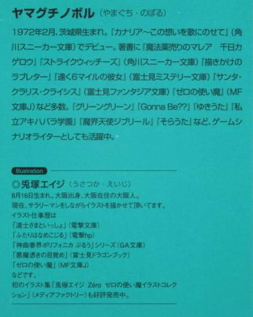

| [ヤマグチノボル] ゼロの使い魔16 | |
| ヤマグチノボル | |
| (2015) | |
|
ゼロの使い魔 16 ド・オルニエールの安穏
ヤマグチノボル
|

第一章 戦の恩賞
「えー、こたびの戦はまさに青天の霹靂じゃった。前ガリア王ジョゼフの陰謀から始まった戦は、ロマリアのみならずこのハルケギニアを灰にしようかという、とんでもないものであった」
オスマン氏の声がホールに響いた。
ここは魔法学院本塔二階の舞踏会ホール。着飾った生徒たちが、神妙な顔でオスマン氏の声に聞き入っていた。
突然、ロマリアとガリアの間に戦端が開かれたとき、彼らは恐怖した......。アルビオンとの戦は終わったばかりで、祖国はなんとも疲弊している状況だった。
戦争なんかできる状態ではなかったのである。
もし、こんなときに狂王に率いられたガリアに牙をむかれたら？あっという間に、攻め滅ぼされてしまうに違いない......。
だが、それは杞憂に終わった。カルカソンヌにおける戦闘で、ジョゼフ王は戦死。電撃的に新たな女王が即位し、戦は終わった。
「我々は恐怖した......。灰になるのはたまらん。もう少し長生きしたいじゃないか。灰になったら、女性の臀部を愛でることもできん。そんなのはたまらん。実にたまらん。きみたちだって、いやじゃろう？」
会場は静まり返る。オスマン氏はごほんと咳をすると、言葉を続けた。
「だが！ 神は我々をお見捨てにはならなかった！狂王あればまた英雄あり！狂った陰謀あらば、遮る正義の鉄鎚あり！彼らの存在が、狂王の野望を打ち砕いたのじゃ！」
生徒たちはごくりと唾を飲んだ。
そう......、その勝利に貢献したのは......。
「そう！ その狂王のばかげた妄想は英雄たちによって食い止められた！みなのよく知る英雄たちによってじゃ！さて！ではそんな勇者たちを紹介しよう！」
オスマン氏の後ろにあった緞子が、合図によって下ろされた。生徒たちから割れんばかりの歓声が沸いた。
「彼らこそがハルケギニアを救った勇者たちじゃ！水精霊騎士隊と、始祖の巫女たちじゃ！」
そこには、正装した水精霊騎士隊と、ルイズとティファニアがいた。わぁああああああああああ！水精霊騎士隊万歳！トリステイン万歳！と大きな叫びの中、並んだ少年少女たちは誇らしさと照れくささで顔を赤らめる。
魔法学院の生徒たちは、自分と同じ学生の騎士隊が、このたびのガリア王継戦役でどれだけの功績をあげたのが十二分に知らされていたのである。
「よいか学生諸君。彼らは初陣にも関わらず、大活躍をしたのじゃ。緒戦、虎街道で強力なゴーレムの一部隊を粉砕した件。リネン川の中州での華やかな一騎討ち。そしてジョゼフの強力な......、エルフの先住魔法を利用した巨大な炎の玉......、両用艦隊を吹き飛ばした超巨大炎玉を止めたのも、彼らの活躍のおかげという話ではないか！」
さらに歓声は轟いた。
こたびの戦での、水精霊騎士隊の奮戦......、特に副隊長シュヴァリエ・ド・ヒラガ氏の活躍は彼らの耳に十二分に届いていた。
これほど鮮やかに、一人の騎士、一個騎士隊の活躍が戦を勝利に導いた例はない。その上、ガリアの女王に即位したのはつい先日まで自分たちと机を並べていたタバサという話。どんなドラマがあったのかは知らないが、同じ学院の生徒である水精霊騎士隊が、その即位になんらかの関係を持っていたことは間違いない。
華やかな......、きらびやかな戦果の数々。
そして大国ガリアの女王即位に関係しているやんごとなさ。魔法学院の生徒たちは、そんな英雄と同時代、同じ場所に学ぶことができる喜びにうち震え、感激した。
彼らは、戦勝の地カルカソンヌからガリア王都リュティスまで新ガリア女王シャルロットを、ロマリア軍と共に護衛して入城した。
ガリア市民は盛大な歓呼をもってこれを受け入れたという。
その後、アンリエッタ女王陛下を首都トリスタニアに送り届け、無事にこうして帰還してきたのである。
「水精霊騎士隊万歳！」
オスマン氏は、少年騎士たちの前に立ち、次々にぽんぽんとその肩を叩いて祝福した。
「うんうん。わしはな、諸君らが自分のことのように誇らしいぞ。なにせ、きみたちはこのわし！魔法学院学院長のこのわしが手塩にかけて育てたのじゃからな......。うんうん」
満足げにオスマン氏は頷きながら、祝福する。
「きみたちはわしが育てた。うんうん」
少年騎士たちは、顔を見合わせた。いや......、確かに学院長は学院長だけど、なんか教わったっけ？ちゅうか育てられたっけ？とそんな顔になった。その妙な様子に、生徒たちの歓声もすぼまっていく。
「は、はい！ オスマン氏の教育のおかげであります！」
目ざといギーシュは、すかさずフォローを入れた。まあ、ここでオスマン氏に恩を売っておくのは悪いことではない。
するとオスマン氏は、目を細めてギーシュに近づいた。
「ギーシュくん」
「はいっ！ オールドオスマン！」
いきなり勲章でももらえるのかと、ギーシュは直立した。
「きみは実にいいやつじゃな。ご褒美をあげよう」
喜びにギーシュは震えた。精霊勲章についでの名誉だ。なんだろう？卒業時トップの生徒に与えられる、ダイヤ付きの黄金宝杖でも授けてくれるんだろうか？そんなものをもらったら、自分の出世はもう完全に約束されたようなものだ......。
だが、オスマン氏の言葉は違っていた。
「抱いていいよ」
堂々と、そう言われた。
「はい？」
しかし、オスマン氏はくいくいっと親指を自分の体に突き立てるのみ。ギーシュは首を振った。
次は才人だった。
「抱いていいよ」
才人は無言で首を振る。その次はレイナール。
「抱いていいよ」
彼は険悪な顔になると、「ふざけないでください」とぽつりとつぶやく。
「ぼくたちの名誉を......、ば、馬鹿にして......、あなたという人は......」
言い返そうとしたが、そのときにはもう、隣のエイドリアンと続く。彼はレイナールと同じクラスの短い赤髪の少年だった。
彼は言われる前に首を振った。そして、アルセーヌ、ガストン、ヴァランタン、ヴィクトル、ポール、賭けをしきったエルネストとオスカルとカジミールと続く。
彼らは緊張しきった顔で、首を振った。誰だってオスマン氏を抱きたくはない。というか意味がわからない。異様な緊張の中、最後のマリコルヌの前にオスマン氏はやってきた。
マリコルヌは言われる前に、堂々と言い放った。
「オッケーです！」
オスマン氏はしばらくマリコルヌを見つめたあと、さて、冗談はさておき、と切り出した。掴みかかろうとしたレイナールが、左右にいた少年に食い止められる。
「王政府は諸君らに、その活躍に見合う名誉を用意した。ほれ」
みなと同じように正装したシュヴルーズ先生が現れた。手に何かを持っている。それに気づいた少年たちは目を丸くした。黒字に銀色の五芒星が光っている。
「それは......、シュヴァリエのマントじゃありませんか！」
ギーシュが、思わず叫んだ。
「さよう。こたびの活躍は、隊長のギーシュくんを〝シュヴァリエ〟に叙するに十分といえよう」
確かにそのとおりだった。まあ、ほとんど才人一人で上げた戦果と言えなくもないが、このたびのガリア王継戦役（と、今度の戦はそのような名前で呼ばれている）に参加したのは水精霊騎士隊のみ。恩賞には十分値した。というか、そうでもしないとトリステインはいったい何をしていたのだ？という話になってしまう。政治的にも、彼らには恩賞が必要だった。
ギーシュは震えながら、そのマントを押しいただいた。騎士隊の少年たちは、そんなギーシュを口々に祝福する。
「やったな！ 隊長殿！」
「これで我が騎士隊も、シュヴァリエを二人擁することになったな！」
「さて、さすがにシュヴァリエの称号とはいかんが、きみたちにも勲章を授与する。白毛精霊勲章じゃ」
ついで、ギトー先生が現れた。相変わらず、むすっとした表情である。どうやら内心は、生徒がこのような名誉に与るのがつまらないようだ。
「まあ、よくやったと言えるな。ほれ」
つまらなそうな顔で、少年騎士たちの首に勲章をかけていく。誇らしげに、少年たちは顔を輝かせた。名誉だけではない。勲章には年金がつく。ほぼ無給に近い彼ら平隊員にとって、その年金は大きい。
勲章が配り終えられると、オスマン氏は二人の女子の前に立った。ルイズとティファニアである。
「さて、きみたちは巫女として従軍したために、精霊勲章を与えるわけにはいかんそうだ。まあ、あれは軍人に与えられる勲章じゃからな。だが、きみたちにはトリステイン宗教庁から、トリスタニアのジュノー管区司教の任命状が授けられることになった。ちょうど二人ほど席の空きがあったらしいでの」
生徒たちからため息が漏れた。司教の肩書を得るということは、てっとり早いお金持ちへの急行券だ。なにせ、寺院の司教ともなればほとんどの税金は免除され、逆に管区の住民からの寺院税を得ることができる。つまり、その肩書さえあれば、何もしないでもお金が入ってくるのだった。平司教だから実入りは少ないとはいえ、勲章の年金なんかの比ではない。
ざっと計算すると、ギーシュは五百エキュー、平隊員たちは二百エキュー、ルイズたちは八百エキューもの年収が約束されたのだった。
割れんばかりの拍手が響いた。しかし、その場の全員が気づいた。
才人だけ、何ももらってない。特別に何かあるのだろうか、と思いきや、オスマン氏はパーティの開始を宣言してしまう。
まあ、以前シュヴァリエの称号をもらっているし......、今回は据え置きなのかもしれない、と一同は妙な納得のしかたをした。
華やかな宴が始まった。水精霊騎士隊の周りには、生徒たちが一斉に群がった。
「ギーシュさま！ 是非とも活躍のお話を聞かせてくださいまし！」
「いいともいいとも。なんでも聞いてくれたまえよ」
勢い込んで、戦場での話をし始めたとき......。ギーシュは遠巻きにして自分を見つめる、一人の少女に気づいた。
「モンモランシー......」
しかし、モンモランシーはぷいっと顔をそむけると、会場を出て行こうとした。思わずギーシュは生徒たちをかきわけ、後を追いかける。
廊下を出たところで、モンモランシーは立っていた。ギーシュに背を向けたまま、身じろぎもしない。
ギーシュはつかつかとその背に近づくと、襟を正してモンモランシーの背に告げた。
「シユヴァリエになったんだぜ」
「............」
しかしモンモランシーは無言である。なおもギーシュは近づこうとしたが......、立ち止まる。
「なんてね。でも、ちゃんとわかってるよ。自分の実力じゃない。活躍したのはサイトさ。あいつはまったく、すごいやつだと思う。ぼくはたまたま隊長だっただけだ」
それからギーシュは、顔をあげた。
「でも、いつかこのマントに似合うような男になってみせる。きみにも、似合いの男になれるように......。それじゃ」
ギーシュはきびすを返し、歩き出そうとした。
「待って！」
モンモランシーが叫んだ。ギーシュが振り返ると、モンモランシーがその胸に飛び込んでくる。
「モンモン......」
「わたし......、バカね。あなたが移り気でどうしようもないってわかってるのに......。ちょっと気の利いたこと言われると、素敵って思ってしまうのよ」
ギーシュは心の中で万歳を連呼した。
「もう風呂なんか覗かない。約束するよ」
「そうして。ほんとに。ああ、わたし自分がいやだわ。今度も心配したのよ。いきなり戦が始まるから......。仲直りもできないうちに、あなたが死んでしまったらどうしようって......」
何気にしおらしいモンモランシーは、しくしくと泣き始めた。するとさすがのギーシュもしんみりとしてしまう。ギーシュはポケットから、何かを取り出してモンモランシーに手渡した。
「......え？」
「ぼくだって、ずっときみのことを考えていたんだよ。貝殻を彫って作ったんだ。ロマリアでは、これを女性に贈るんだそうだ」
そこには、女性の横顔のレリーフが彫られていた。
「きみを想って彫ったんだよ」
「綺麗......、あなたって、とても器用なのね」
うっとりした顔で、モンモランシーはギーシュを見つめた。二人の目が閉じ......、近づこうとした瞬間......、ホールから数人の女の子が飛び出してきて、ギーシュに向かって叫んだ。
「ギーシュさま！ 素敵な彫り物をありがとうございます！」
モンモランシーの目がぱっちりと開いて、ギーシュの身体を突き飛ばす。
「いやぁ......。作り始めたら面白くて、ついたくさん作っちゃって......」
「随分と器用ね。つい、作っちゃうのはアクセサリーだけじゃないんじゃない？」
くるりと振り向くと、モンモランシーはつかつかと歩き去っていった。
「マリコルヌさま！ お話を聞かせてくださいまし！」
数人の女の子に囲まれ、マリコルヌはもう泣いていた。
無理もない。あの女子風呂覗きの一件で、水精霊騎士隊の名誉は地に落ちていた。アルビオンでの才人の活躍も、ベアトリスの空中装甲騎士団と互角にやり合った一件も吹っ飛ぶ、地に落ちっぷりである。
だが、再び名誉は回復されたようだ。
喜びのあまり、勢いこんで話すマリコルヌの前に、黒髪の清楚な感じの少女が現れた。
「ブリジッタ......」
マリコルヌの身体が固まった。ブリジッタはしばらくもじもじしたあと、
「よくぞ御無事で......」と、恥ずかしそうに言った。おずおずと、マリコルヌの周りを取り巻く少女たちは、その雰囲気にあとじさる。マリコルヌは両手を広げ、まるでオペラの主役のように、大仰な身振りで言った。ぽっちゃりのくせに。
「ずっと、ずっときみのことを考えていたんだ」
「わたしも、マリコルヌさまのことを考えていましたわ」
二人は、じっと見つめ合う。それから、ブリジッタは決心したようにつぶやく。
「わたし、友達に言われたんです。マリコルヌさまは普通じゃないから、少しぐらいのことは我慢しないと身がもたないよって」
「う......。ごめん」
「いいんです......。マリコルヌさまが戦に出かけている間、わたしずっと考えていたんです。そういう人だから、風呂覗きぐらいしかたないんだって。いやむしろ......、覗きで済んで、よかったんだって。我慢します。だから、ひどいこと言ってごめんなさい」
なんとも健気な言葉で、さすがのマリコルヌも反省した。いかに自分が、己の欲望に忠実に生きてきたのかが、このブリジッタの涙で白日のもとにさらされたのである。
「ごめん。ごめんよ......。ぼくは今まで、自分の性癖を全肯定しすぎたみたいだ。これからは普通になる。約束する。もう、君に罵られることを望んだりはしない。ぼくはもう、ぽっちゃりに甘んじない」
ブリジッタは感動した顔で、マリコルヌを見つめた。そんな二人の様子を察してか、一人の女子が二人にワインの杯を握らせる。
「......まあ、とりあえず仲直りのしるしに乾杯をなさってはいかがですか？」
二人はにっこりと笑みを浮かべ、杯を飲み干した。顔を見合わせて、笑い合う。
「まあ、もっとお飲みよ」
マリコルヌは、ブリジッタに杯を勧めた。
「わたし、あまり飲めませんの」
「今日は特別だ。なにせ、ぼくが生まれ変わった日だからね」
ブリジッタは感動した面持ちで、杯を傾けていく。そのうちに、ふぁ、なんだか酔いましたわ、などとブリジッタが言うので、マリコルヌはブリジッタをバルコニーへと連れて行った。
「大丈夫かい？」
「......ふぁ。......タのおかげで酔ってしまいましたわ」
マリコルヌは、なんだか懐かしい単語を聞いた。
「ブリジッタ、今......、なんて......」
「ブタのおかげで、酔ってしまいましたわ」
マリコルヌの頭から、つま先まで電流が流れた。
「ブ、ブタ......？ ぼく？」
「そうよ。他にどこにブタがいるの？」
ブリジッタの目が据わっていた。清楚な顔の中、そこだけ妙な光を帯びている。マリコルヌは、その迫力に押され、ひう、と尻もちをついた。
「わたし、マリコルヌさまがいない間に気づいてしまったの。自分の趣味に......。一日一回、マリコルヌさまを罵らないと、眠れないらしいのよ」
隣のバルコニーで始まった騒ぎを見つめて、才人は深いため息をついた。そこではマリコルヌが這いつくばり、生まれてごめん、ブタごめん、と黒髪の少女に謝り続けている。黒髪の少女は激昂し、マリコルヌを罵りまくっていた。
「まったく......。マリコルヌもギーシュも、のんきなもんだぜ......」
「いいじゃない。ジョゼフ王は死んだ。これでやっと平和になるわ。少しぐらいの羽目外しは大目に見てあげなさいよ」
やれやれと首を傾げる才人の隣には、ルイズがいた。髪をバレッタでまとめ、白いドレスに身を包んでいる。そんな格好をしていると、いかにもな貴族のお嬢様で、才人はもう未だにドキドキしてしまう。
「でもな......、ロマリアはまだまだ聖戦を続ける気なんだろうし......」
「まさか。聖地を取り返すためには四の四が必要なはず。でも、ガリアの担い手のジョゼフ王は死んじゃった。続けようがないじゃない」
「でもな......。あいつらは、それでも遂行できる自信があると思うんだ」
才人はずっと気になっていたことをルイズに言った。
「だって......、絶対ジョゼフは味方にならない。あいつらそう考えて行動してたじゃないか。つまり、別にそろわなくてもできるんじゃないか？」
「あのねえ」
ルイズは呆れた声で言った。
「へ？」
「わたしたちが、ガリアの担い手はジョゼフ王だって知ったのは、最後の最後じゃない」
「あ」
その通りだった。カステルモールからの手紙で〝怪しい〟とは思っていたものの......、まさか、本当にジョゼフ王が担い手だったとは......。
最後の最後、フネの上の対決でジョゼフ王が虚無の担い手だと知ったときは、いやもう大量の人間の命が危険にさらされていたときなので、驚く暇もなかったが......。
「ロマリアもそうだったのよ。ジョゼフ王じゃない、別の担い手がいると思ってた。ジョゼフ王を打倒したあと、そいつを味方にするつもりだったんでしょ。でもざーんねん。ガリアの担い手はジョゼフ王でした。自分たちで倒しちゃいました。まあ、あのときはもうにっちもさっちもいかなかったもんね。だって、倒さなきゃ自分たちがやられそうだったんだもの。最後のガリア軍に対する演説なんて、たぶんもう、せいいっぱいの負け惜しみよ」
才人は、そうだなあ～～～～、と唸りながら頭を抱えた。しかも、カステルモールの手紙の内容を知る者は、自分とタバサの他にはいない。ロマリアはジョゼフが担い手だと知るすべもなかったはずだ。
「エルフが敵です！ 黒幕です！ なんつって、いくら聖戦を焚きつけたって、あんな恐ろしい火の玉を見たあとじゃ、誰だってエルフと戦おうなんて思わないわ。おまけに担い手も欠けちゃったんじゃあ、戦いようがない。四の四がそろわないと、真の虚無とやらは目覚めないんでしょ？あはは、そのまま寝てるがいいわ。だからタバサの戴冠式のあと、とっととロマリアに帰っちゃったのよ。もう、することないから。きっと今頃、聖戦なんて言い出したことを後悔してるに違いないわ。あれだけ大見得切ったのに、その手段を自分で潰しちゃったんだもの。教皇聖下、下手したらそのうち失脚しちゃうんじゃないの？明日にでも、新教皇選出会議開催の報がトリスタニアに届くかもよ？」
才人はルイズを眩しいもののように見つめた。
「お前......、あたまいいな......」
「あんたがヌケてるのよ。とにかく、わたしたちはしばらくぶりの平和を享受しましょ」
「うん......」
才人はしんみりした声で言った。
ルイズは得意気に指をたてると、
「これからのわたしたちの仕事はね、始祖ブリミルがエルフを使い魔にしていた......、それを調べることよ。きっと、エルフとわたしたちが争うようになった原因はそこにある。彼らの間に何があったのかを解明すれば、わたしたちとエルフが争う理由はなくなると思うわ」
才人は頷いた。
「とにかく、今はゆっくりしたいの」
ルイズは、頬を染めて才人に寄りかかった。そこに、キュルケがやってきた。
「あらら。お邪魔だったかしら？」
にやっと笑みを浮かべたキュルケに、ルイズは慌てた調子で言った。
「そ、そんなことないわよ！」
胸の大きく開いた夜会服を着たキュルケは、辺りに色気を振りまきながら、才人とルイズの隣で、バルコニーの柵に寄りかかる。
「タバサの即位に乾杯」
どことなく、寂しそうな声だった。
「キュルケ、タバサからはなんの連絡もないのか？」
「ええ。こないだ実家から連絡があって......、ガリアから使いの人が来て、タバサの母君を連れていったらしいわ。そのぐらいね」
「水臭いな！」
才人は言った。
「いろいろ忙しいのよ」
とりなすように、ルイズが言った。
あれ以来、タバサからの連絡はない。才人たちはガリアを去る前に、タバサとの面会を望んだが......、多忙の一言で断られてしまった。まあ、タバサにその報告は届いていなくて、家臣の一存での返答かもしれないが......、それにしても寂しい話だった。
「でも、変な話だな......。タバサのやつ、即位はしないって俺と約束したのに......」
「きっと、あの子にはあの子の考えがあるんでしょ」
「あいつ、ロマリアになんか吹きこまれて、騙されてるんじゃないだろうな？俺、それが心配で......」
才人がそう言うと、キュルケはぷっと噴き出した。
「あの子に限って、それはないわよ。おそらく、ロマリアは〝与しやすい〟なんて思ったんじゃないかしら？でも、あの子はああ見えて、そういう駆け引きは百戦錬磨だしね。ま、わたしたちに何か話す必要があると思ったら、向こうから連絡してくるわよ」
「そうか......」
才人は、わかった、と頷いた。
「ま、人の心配より、自分の心配をしたら？」
キュルケは、意味ありげな流し目で才人を見つめた。
「へ？ 俺？」
「そうよ。サイト、あなたこの頃、なんだかいい男になってきたわよ」
「そ、そうか？」
「ええ。ジャンほどじゃないけどね。気をつけたほうがいいわ。あなた、女で大変な目にあいそうよ」
「どーゆー意味よ！」
ルイズが、目を剥いて怒鳴った。
「あらルイズ。あなたもうかうかしてらんないわよ。出し惜しみしてると、どっかの女に奪われちゃうかもね」
キュルケは、おっほっほ、と楽しそうに笑いながら去っていく。
「なによ～～～～～！ あのバカ女！」
そして才人がとろーんとした目で遠くを見ていることに気づき、ルイズはその足をふんづけた。
「あいだっ！」
「何その顔。どんな大変な目にあうのかな～～～って期待に震えるその目なに？」
ルイズに睨まれ、才人は首を振った。
「き、期待になんか震えてないよ！」
「うそばっかり。絶対想像してたわ。こぉ～～～～んな大きな胸した子とかに言い寄られて」
ルイズは両手を使って胸の前で半円を描き、こぉ～～～んな、を見事に表現してみせた。
「こうやって這いつくばって、左右からほっぺを胸で挟まれて、はぐはぐしちゃってもう大変って感じの想像してたわ」
ルイズは床に膝をつくと、両手で自分の頬を挟み、はぐはぐを表現した。
「あのな......、ルイズ......」
「サイト困っちゃった～～～、大きい胸に顔挟まれて困っちゃった～～～～、何よ！全然困ってないじゃない！」
「なにその一人芝居」
「あんたの頭の中を実演しただけよ！」
ルイズは立ち上がると、才人に怒鳴った。
「バカ言うなって。俺はお前以外で困りたいなんて思ってないよ」
「何よそれ。わたしでそんなに困ってるって言いたいの？」
「い、いや、そういうわけでは......」
「はっきり言いなさいよ。誰と困りたいか、きちんとわたしに言いなさいよね」
ルイズはぷいっと顔をそむけた。いい加減、ルイズのこういった態度に慣れていた才人は、そのサインに気づく。
〝ベタに来て〟である。
ほんとしょうがない。ルイズは水分を要求する育ち盛りの花のようなもので、養分が足りないと枯れてしまう。枯れるというか怒る。怒るとかなり面倒なので、こういったサインを見逃してはいけないのだった。才人は息を吸うと、とりあえずルイズを褒めた。
「こんなに可愛いご主人様がそばにいるのに......、よそ見なんかするわけないじゃないか」
ルイズは、う～～～～、と唸った。なんというか、さっきのキュルケのセリフが気にかかるのである。
確かに、最近の才人は妙に凛々しくなってきた。きっと、様々な経験によって男を磨いてきたに違いない。たまに羽目を外すときもあるが、騎士隊の副隊長としてしっかり隊をまとめ上げてもいる。そろそろ、本格的にやばいのじゃないのかしら......、とルイズは不安になった。
でも、かといっていろんなことを許すつもりにもなれない。最近はいろいろと考えも変わってきたが、なんといっても自分は貴族。
なにがあろうが安売りだけは許せない。
それなのに、最近の自分ときたら！ なんだか雰囲気に流されるままに、許しちゃってる気がするわ。そんなことを想像して、ルイズは耳まで真っ赤になった。
やっと訪れた平和な時間......。だからこそ、もうちょっと、そのあたりのことを真剣に考える必要がありそうね。
ルイズがいきなり焦り始めたり、顔を真っ赤にしたりを繰り返すので、才人はなんだか不安になった。おいルイズ、と声をかけようとしたら......。
ホールから、楽師の奏でる軽快な音楽が聞こえてきた。テンポのいい、夜が楽しくなるような、そんな曲だった。
「この曲......」
ルイズがつぶやくように言った。才人もすぐに気づいた。
「初めて、お前と踊った曲だな」
そう。フーケのゴーレムを倒したあとの舞踏会。あのとき、才人とルイズはいっしょに踊ったのである。まるで昨日のことのように、才人はその夜を思い出した。
どちらからともなく手を取り......、二人はホールへと出て行った。曲に合わせて踊りだす。相変わらず才人の踊りはぎこちないが、ルイズは幸せな気持ちに包まれた。
「そういえば、お前の髪形も、ドレスも、あの日と同じだな」
「今頃気づいたの？」
「ご、ごめん」
「あんたって、ほんと鈍いのね」
ルイズは、ちょっと拗ねた口調で言った。でも......、あのときと同じ音楽に包まれて才人と踊っている。それがルイズを幸せで満ち足りた気分にさせてくれた。
辺りを見回すと、様々に着飾った男女がそれぞれにステップを踏んでいる。なんだか......、皆、似合いのカップルに見えた。
遠くにティファニアの姿が見える。彼女の前には、何人もの男子が群がり、ダンスを申し込んでいる。もう、ハーフエルフということで怯える生徒はいない。彼女がアルビオン王家の忘れ形見ということを知る生徒はルイズたち以外にいないが、それでも持って生まれたおしとやかな雰囲気と、エルフの血が混じった異国情緒とその暴力的なバストにやられてしまう男子はあとを絶たなかった。
〝努力は認めるけど、あのティファニアに似合うほどの男子はいないわね〟
ティファニアの美しさときたら、かなり神々しく、たまに女の子のルイズでさえ気圧されてしまうほどである。
ティファニアの隣に立てるような男は、伝説の彼方にしか存在しないのではないだろうか......。
〝じゃあ、わたしはどうなんだろうか？〟
ルイズの胸に不意に疑問が忍び込んできた。
〝自分は「トリステインの英雄」になりつつある才人につり合うんだろうか？〟
今や才人の祖国トリステインに対する功績は、はかり知れないものがある。こないだのガリアにしたって、才人一人が戦っていたようなものだ。本来なら、シュヴァリエどころじゃない、爵位を得ていたっておかしくないほどの功績である。伝説の英雄たちと引き比べても、なんら見劣りしないほどの勲功、そして成功の数々......。
それに引き換え、自分はどうだろう？ いつもうじうじと悩んで、逆に才人の足を引っ張ってきたのではないだろうか？
ああ、自分は、司祭の肩書を得られるほどの活躍をしただろうか？
してない、と心のどこかがルイズに囁いた。あれだけ活躍した才人が何ももらっていないのに......。
そう思うと、幸せな気分がしぼんでいくのだった。
〝わたしは、才人につり合う女の子になれてるんだろうか？〟
「どうした？」
不意にステップの止まったルイズに、才人が言った。
「な、なんでもない」
「気分でも悪いのか？」
ルイズは首を振った。
せっかく平和になったのだ。いらぬ心配などしないほうがいい。才人はこうやって、そばにいてくれるじゃないか。
それに......、屋敷を買って、卒業したら二人で暮らそうとも言ってくれている。
変な心配は、そんな才人に失礼だ。
「ほんとに大丈夫。それより、踊りましょう」
ルイズはすました顔で言った。でも......、心に張りついた不安の雲は、なんだかうまく晴れなかった。
舞踏会が終わり......、生徒たちが寮へと戻り始めた。才人たちも、自室に戻ることにした。
三階にあるルイズの部屋の前まで二人はやってきた。中に入ろうとすると、
「......気持ち悪い」
ルイズがへろへろになりながら、才人の肩にもたれかかってくる。
「ったく、飲みすぎだっつの」
珍しく、ルイズはつぶれるほどにワインを飲んだのである。酒に弱いくせに、いったいどうしたんだろうと才人は思った。
「ねえサイロォ......」
「ん？」
「ほんろに、わらしといっしょに暮らしてくれるの？」
なんだこいつは。そんなことを心配していたのか、と才人はほっとした。
「暮らすよ。明日は虚無の曜日だろ。さっそく、屋敷を探しに行こうぜ」
「うん。いく」
ルイズは拾われた子犬のような目で才人を見上げ、こくこくと何度も頷いた。そして、ひしっと才人に寄り添ってくる。
なんだかそんなルイズは、とても愛らしく、才人は満ち足りた気持ちになっていくのを感じた。
「ずっといっしょだ」
そう言うと、ルイズはとろんとした目で才人を見上げてくる。なんだかもうたまらずに、才人はルイズを抱きしめ、キスをした。すると、ぐいぐいとルイズは唇を押しつけてくる。
薄い胸に手を這わせても、ルイズはもう怒らない。
「小さいから......、やだ......」
「ち、小さくないって」
「うそ。小さいもん」
それでもルイズは才人の手を撥ね除けようとしない。デフォでここまで来るのに、いつたいどれだけの時間がかかったのだろう。
さて、問題は次のステップなのだが......。
数々の失敗が、才人の頭の中を巡る。いつもいつも、うまくいきそうだったのに、自分は失敗してきた......。情けない......。
だがもう、失敗はしない。今日こそ、俺は......。
才人はそこで、熱くなりつつあった頭を冷やし、冷静に思考を巡らせ始めた。
俺......、どうやって失敗してきたっけ？
「小さいでしょ？」
再びルイズが、不安げに尋ねてくる。
ああ、思えば俺はこの胸ネタで相当やらかしてきた。
そう。とにかくルイズの胸が小さいことを肯定してはいけない。どれだけ小さいからといっても、うん、そうだね、なんて言ってはいけないのだ。
「俺、他の人のよく知らないけど......、普通だと思うよ」
全然普通じゃないけど、才人はそう言った。
「それならいいの......」
よし、第一関門クリア。
次に注意しなくてはいけないのは......。
あの魅惑のぽっちゃり、マリコルヌだ。だがしかし、ここにはいない。なにせここは女子寮だ。神出鬼没のぽっちゃりさんだが、今日は大丈夫。うん。
よし、第二関門クリア。
あとは......、何かあったような気がするが......、思い出せない。まあ、大丈夫だろう。
つまり......、エンジンかけてもいいってこと？
才人の頭の中で、何かが爆発した。
よし、かけるぞ。俺は。アクセルオン。今こそ全開だ。
「あくせる......？」
つい、ブツブツ言っていたようだ。ルイズが、不思議そうな顔で才人を見ている。才人は首を振ると、ルイズに向きなおった。
「いや......、こっちのこと」
あれ......、いっとく？ 心の中の黒才人がつぶやく。白才人が必死になってそれを止める。
あれは......、ないっしょ。さすがに。やったら引くっしょ。アウトでしょう。
でも......、あれ夢じゃん。お前の夢じゃん。やりたいことには忠実になっとかないと、人生に対する冒涜ってもんしょ？
ピキーン、と音を立てて、神託が下った。
やっとこう。
「とにかくお前は可愛い。さて、そんな可愛いお前にお願いがあります」
才人の目が据わっていた。ルイズは一瞬、酔いが飛ぶかと思ったが、持ちこたえた。才人についていくって決めた。わたし......、何が飛んできても驚かないの......。
「『ちいさいにゃんにゃん、大きいにゃんにゃんに苛められたいにゃん』って言ってごらん」
「はい？」
ルイズは、頭のてっぺんから何かが急速に抜けていくのを感じた。なんというか、引いた。
「言ってごらん。というか、言え」
才人は真顔だった。激しい葛藤が、ルイズの中で生まれた。いくらなんでも、これはない。ちいさいにゃんにゃんってなに？誰のこと？もしかしてわたし？ねえ、このセリフなに？母さま、この人、わたしをどこに連れていこうとしているの？
さすがのルイズも、一瞬で現実に引き戻される才人の本物っぷりであった。
でも......、とルイズは、そんな疑問をこらえる。
今はこんなだけど、さっきは才人といっしょに踊って楽しかった。なんというか、自分は結局こいつじゃないとだめらしい......。
「言え。というか、言ってください。ごめんなさい」
「......言ったら、優しくしてくれる？」
「もちろん」
「意地悪なこと言わない？」
「はい」
しかたなしに、ルイズは頷いた。優しいキスとかもっとして欲しかったから。可愛いよって、言って欲しかったから。まあ、才人の妄想の暴走っぷりは百も承知なので、しかたないと諦めることにした。なんのかんのいってルイズは健気だった。
で、言った。顔を真っ赤にさせて。震えながら。
「ち、ちいさいにゃんにゃん、大きいにゃんにゃんに苛められたいにゃん」
「ありがとぉー！」
もどかしげに才人は、ルイズを抱きしめたまま部屋の鍵をあけ、そのまま扉を開いた。
口をぽかんと開けて唖然とするシエスタと、そのメイド仲間と、おかえりなさいサイトさんと書かれた垂れ幕があった。テーブルの上には料理が並んでいる。
才人の頭の中が、急速に冷えていく。
そうだ。今はシエスタが専属メイドで......、だからさっきもいなかったわけで......。というか今の全部丸聞こえだったわけで......。
メイド仲間は、しばらく呆然としていたが、そのうちにたまらず笑い転げ始めた。シエスタがどこまでも冷たい目で、ぼそりとつぶやいた。
「おかえりなさいにゃん」
さらにメイド仲間たちはきゃあきゃあと笑い転げる。ルイズは深呼吸すると、とりあえず自分に恥をかかせた才人を蹴りまくり始めた。
ガリアで得た傷より、痛めつけられた才人はベッドで唸っていた。メイド仲間も帰ってしまったあと、ルイズとシエスタは果てしない言い争いを繰り広げていた。
「ミス・ヴァリエールはやりすぎです」
「はぁ？ どういう意味よ。というか、なんであんた、サイトはお帰りなさいでわたしは無視なのよ！」
ルイズは垂れ幕を指さして怒鳴った。
「え～～、だって、わたしサイトさんの専属ですもん。ミス・ヴァリエール関係ないですもん。でも、御無事でなによりです」
「気持ちがこもってないわ！」
シエスタは、そんなルイズをまったく無視して、才人を介抱し始めた。
「大丈夫ですか？ ほんとにひどいご主人様ですね」
「ごめん！ ほんとルイズごめん！」
才人はうわごとで謝り続けた。どうやら、夢の中でもルイズに折檻されているようだ。
「今回もサイトさん、大活躍だったらしいですわね。ほんと、自分のことみたいに誇らしいです」
「ごめんなさい！ 才人生まれてごめんなさい！」
「安心してください。このシエスタは、いつでもサイトさんの味方ですから。ほんともう、なんのかんのいってわたしが一番ですよ？なにせよそ見してもあんまり怒りませんし、他の子とキスしてもあんまり怒りません。それ以上したら殺しますけど。でも好きですからね」
シエスタはおーよしよしと言いながら、意識を失った才人の頭をなでた。
なんか腹立つセリフだが......、少し冷静になってみると、まあ許してやろうかしら、という気にルイズはなった。なにせ、卒業したらルイズは才人といっしょに暮らす予定である。学院メイドのシエスタとは、必然的にお別れなのだ。そう思うと、ふつふつと優越感が湧いてくる。
「なにニヤニヤしてるんですか？」
ルイズのそんな様子に気づいたシエスタが、じろりと睨んでくる。椅子に腰かけていたルイズは、思いっきりポーズをとりながら足を組んだ。
「ベーつーにー」
「言ってください」
「そこまで言うんなら言ってあげるけど......。まあ、今だけなら、その犬触ってもいいわよって。そんな感じ」
「なんですかそれ。どういう意味ですか」
敵意むき出しで、シエスタはルイズに詰め寄った。
「いやね？ 卒業したら、わたしサイトと暮らすしー。ま、それまではあんたも少し楽しめば？って。そんぐらいならいいわよって。そんな感じ？」
「なに言ってるんですか」
シエスタは、呆れた顔で言った。
「はあ？」
「サイトさんが引っ越したら、わたしもついていくに決まってるじゃないですか」
「メイドはいらないの。こぢんまりしたとこでいいから」
「いやですね、それを決めるのはミス・ヴァリエールじゃないんです」
「ふぇ？」
「もう。ご存知じゃないですか。わたしをサイトさんにつけたのは、他ならぬ女王陛下ですよ。つまり、わたしは女王陛下よりサイトさんに下賜された持ち物みたいなものなんです。勝手に首になんかしたら、逆心アリってことになっちゃいますよー」
ルイズはわなわなと震えた。確かに、シエスタの言う通りだった。自分の一存で、シエスタの進退は決められないのだった。
勝ち誇った声で、シエスタはルイズに告げた。
「ま。そんなわけで。お屋敷を探すんなら、もちろんお供させていただきますわ！なにせ、わたしの新しい職場ですからね！」
第二章 お屋敷探し
トリステイン王国首都トリスタニアの郊外......、ロシュローの森を過ぎた辺りの一角。
トリスタニアで貴族や裕福な商家相手の不動産業を営む、ヴェイユ氏は頭を抱えていた。貴族相手の商売とはいえ、彼が扱うのは爵位がついたいわゆる〝領地〟ではない。裕福な商人や、官職貴族でも買えるただの〝土地〟であった。
だから、本日の客がふらりと現れたとき、彼は小躍りして喜んだ。なにせ、国でも三本の指に入る大貴族だったからである。
このような名士を客に持った、ということになれば、彼の店の名もあがる。
うまく取引を成功させれば、新しい顧客を紹介してもらえるかもしれない。そろそろ事業の拡大を考えていた、やり手の彼は喜び勇んで物件を扱う書類をあさった。
だが、この大貴族の主従ときたら......。
「気に入らないわ」
腕を組んで、ヴェイユ氏が紹介した屋敷に文句をつけたのは、そのラ・ヴァリエール公爵家の三女、ルイズ・フランソワーズであった。
彼女たちがブルドンネ街のヴェイユ氏のオフィスにやってきたのは、今朝の八時。彼らは到着するなり、こう言い放った。
「屋敷を紹介してちょうだい」
主従二人の生活のために、こぢんまりしたものでかまわない、と言う。どうやら世を忍ぶ若い恋人同士、結婚前の仮の住居を構えるつもりのようだ。身分違いの恋人同士が、このような隠れ家を求めに来るのは何も珍しいことではない。すぐさまいくつかの物件を、ヴェイユ氏はみつくろい、案内に応じた。
でも、どうにもお気にめす物件は現れないようだ。桃髪美少女の公爵家三女は、ヴェイユ氏の紹介する物件という物件に、文句を並べたのである。
「どこがよくないんだよ。言ってみろ」
撫然とした声で、そう言ったのは、ラ・ヴァリエール嬢のお供の黒髪の少年。だが、ただの少年ではない。着込んだマントには銀色のシュヴァリエの紋が縫いこまれている。彼はどうやら、街で噂の平民出身の騎士隊副隊長ヒリガル氏であるらしい。
彼は平民出だけあって、与しやすい客であった。ヴェイユ氏が紹介する物件に、彼はいつも賛同の意をしめしてくれた。
「別に、ここでいいんじゃないの？」
でも、彼がそう言うたびに、ラ・ヴァリエール嬢の眉はつりあがった。やれ壁の色がよくないだの、普請がボロいだの、向きがよくないだの、ついには庭に植わっている木にまで文句をつけ始める始末。
ヴェイユ氏にもプライドというものがある。ついにはとっておきの物件を選びだした。今、現在、彼らの前に広がっているのがその物件だった。さすがにこれに文句をつけるとはどういうことか。ヴェイユ氏は震えた。
「若奥様。気に入らないとは、どういったことでしょう？この屋敷を普請いたしましたのは、かの高名な建築家、ロッサリーニ氏でございます。とある芸術好きな大貴族の依頼を受けまして、彼はその全霊をもって設計、建築したのでございますよ！」
なるほど、確かにその屋敷は芸術的なつくりであった。
今まで見た屋敷が、どことなく普通のデザインであったのに比べ、随分と変わったかたちをしていた。
半球形に石が積まれ、真ん中には大きな吹き抜けと中庭があった。その中庭からは大きな木が生えて、屋敷を貫いている。
壁には花壇が造られ、さまざまな花が植えられていた。さながら、屋敷自体が森を切り取ったような風情だった。
「すごいよ。なんていうかな、自然と一体化してる。うん。これはすごい」
才人はそう言って頷いた。ヴェイユ氏はその言葉に大きく頷いた。
「でしょう？ さすが近衛騎士殿はお目が高い！これがあなた、一万エキューとは、破格も破格！これ以上の屋敷は、トリステイン中を探したって見つかりませんよ！」
確かにそうかもしれない、と思っていた才人は、ルイズを促した。
「いやぁ、これなんのかんのいってすごいんじゃないの？」
「呆れた。あんたは、こういうのがいいの？ どこがいいのよ。まるで花瓶じゃないの」
「面白いじゃないか」
ルイズは呆れた顔でため息をついた。
「ばっかじゃないの？ そんな理由で住居を選ぶなんて、あんたはやっぱり趣味が下品ね！」
「なんだと？」
そんな言い争いを、後ろで黙って見ていた黒髪の少女が諌めた。
「まあまあ、お二人とも、喧嘩なんかしないでくださいな！せっかく、素敵なお屋敷を探しに来たんですから......、ねっ？」
「......っさいわね。あんたに関係ないじゃない」
「関係あります。だって、家事をするのはわたしなんですから。きちんと見ておく必要があります」
すました顔で、黒髪の少女は言った。そんな様子を見ながら、ヴェイユ氏はハラハラし始めた。
どうやら......、桃髪の貴族少女の機嫌が悪いのは、この黒髪少女の存在が大きいようだ。彼女が屋敷を褒めると、ラ・ヴァリエール嬢の顔が険悪になる。そして、とにかく壁の色まで憎らしいと言わんばかりに文句を並べ立てる。それを少年騎士がなだめると、さらに不機嫌になる。さっきからその繰り返しで、ヴェイユ氏はすっかり頭が痛くなってしまった。
「サイトさん！ 見てください！ このお屋敷の台所、とっても広くて素敵ですね～～～！」
きゃっきゃきゃっきゃと嬉しそうに、屋敷の中を見て回る才人とシエスタの後ろを、ぶすっとした顔でルイズはついて回った。
「......メイドは雇わず、と言ったのに」
昨晩言ったとおり、シエスタは堂々とくっついてきたのである。才人に文句を言ったら、「シエスタ以上のお手伝いさんがいるのか？」と返された。
確かに、考えてみればシエスタほどてきぱきと家事をこなしてくれるメイドはなかなかいない。その上、ほんとにメイドを雇わないわけにもいかない。男には任せられない仕事というものだってある。
どこの馬の骨とも知れないメイドを雇うよりは、マシなことも確かだった。
だが......、こういうのって理屈じゃない。ルイズは、バラ色の生活がどんどん曇っていくように感じた。
「すごい、かまどなんかこんなに大きいです！これはもう、なんでも作れちゃいますね～～。サイトさんは何が食べたいですか？」
「そうだな......。でも、シエスタが作るものだったら、なんでもおいしいと思うよ」
ルイズはきぃ～～～、とハンカチを破れるほどに噛みしめた。なによあれ！まるで新婚さんの会話じゃないの！誰と暮らすつもりなのよぉ～～～～！
なんか激しく負けている気がしたので、ルイズは頑張ることにした。辺りを探し、ルイズは絶好のものを見つけた。
「えー、こほん。こほんこほん」
「ん？ どうした？」
才人の注目が向いた。ルイズは思いきりすました顔で、天井の一角を指差した。
「素敵なシャンデリアね。なるほど、さすがに芸術嗜好の貴族が建てただけあるわ。随分と前衛的なつくりじゃない。でも、質素な中に気品があるわね」
もっともらしい顔で、うんうんとルイズは頷いた。
「......それ、野菜を干すための籠ですよ？」
シエスタが、ぷぷぷと笑みを浮かべながら言ったので、ルイズは耳まで真っ赤になった。
「お前、面白いこと言うな。俺にだってあれは籠にしか見えなかったぜ」
「まったく、ミス・ヴァリエールに任せてたら、お屋敷は選べませんね」
「常識ないからな。貴族だし」
ルイズはいたたまれなくなって、床についた扉を開けた。
「ち、地下室があるわ」
「貯蔵庫だろ？ そこ」
「そ、そうともいうわ。ねえサイト。入ってみない？」
「みない」
才人はにべなく拒否すると、再びシエスタの説明に聞き入り始めた。すっかり屋敷選定の主導権を握られてしまったルイズは、しかたなしに貯蔵庫に潜り、そこで膝を抱えて座り込んだ。
「ねえサイトさん！ ここのオーブン最高です！最新のつくりですわ！風穴のつくりが工夫されてますの！ほら！」
「なんだかわからないけど、シエスタがそう言うんならすごいんだうな！」
るー、るーるーるー。
ルイズは一人鼻歌を歌ったが、誰も聞いちゃくれない。そうしていると、目の前にぴょこんと何かが不意に現れた。
「カ！ カエルー！」
カエルが嫌いなルイズはパニックに陥り、思わず魔法をぶっ放した。辺りに悲鳴と煙が舞い上がる......。
煙が晴れたあと、ヴェイユ氏は一同にこう告げた。
「申し訳ありません。わたくしには、ラ・ヴァリエールさまを満足させるような物件をご紹介することはどうにも不可能なようです」
「で、結局、どこも見つからなかったってわけぇ？」
スカロン店長が、やれやれと両手を広げて言った。ルイズたちは、ヴェイユ氏に愛想をつかされたあと、憂さを晴らすべくトリスタニアの『魅惑の妖精』亭までやってきたのであった。
「そうなんすよ。こいつがもう、わがままばっかり言うもんだから。おまけに、しまいにゃ魔法までぶっ放すし。屋敷の修繕費だって、二百エキューも取られましたよ」
才人が撫然として言うと、ルイズは恥ずかしそうに俯いた。
「わ、わたしそんなに悪くないもん」
「あのな、どういう屋敷なら、文句ないんだよ？」
心底疲れた声で、才人が尋ねた。
メイドがいなければなんでもよかったが、そんなこと言ったら自分の負けを認めるようなものだ。
しかたなしにぶつぶつと、ルイズは間取りがどうのと、陽の入り具合がどうのと、言い始める。
そんなルイズの様子をスカロンのそばで見ていたジェシカが、重々しく頷いた。
「つまり、シエスタがいっしょなのが気に入らないんでしょ。ルイズは」
その場の空気が、音を立てて固まった。そりゃもう、ずばり固まったのである。才人はうっすらとそうかもしれないと思っていたので、たまらずに青くなった。なんというか、後ろめたい部分にスポットが当たってしまった気分であった。
でも......、ルイズとシエスタは、そのあたりなんとかやってると思っていた。だって、自分が好きなのはルイズで、シエスタはそれでもお仕えしたいと言っていて......。シエスタは純粋に自分に魅力を感じていて、つまり好きとかそういうのを昇華した次元であって......。
そんな風にしどろもどろになりながら、ルイズとシエスタを見ると、なんだか冷ややかな空気が漂っている。
「さ、最近は仲いいじゃないか。キミタチ」
ぽつりとそうつぶやくと、スカロンがぽんぽんと才人の肩を叩いて言った。
「サイトくんは、ほんとに女心がわかってないのねぇ～～。そんなの、今だけだからじゃないの」
「え？ え？ ええ？」
クネクネと動きながら、スカロンは言葉を続ける。
「いざお屋敷を買うってことは、そこで本格的に生活が始まるってことじゃない。安心が欲しいのよ。ルイズちゃんは。でも、それはシエちゃんもおんなじね」
いつの間にか、二人がじっと自分を見つめていることに才人は気づいた。じとーっと細い目で、才人に何かを訴えかけている。
で、どーすんの？
二人の目の中にあるのは、そんな問いかけだった。
さてどうしよう。
最近になってやっと、ルイズの気持ちが自分に向いていると理解できるようになった才人だった。だからもちろん、ルイズ以外の女の子を見るつもりはない。たまに生理的に余所見はするかもしれないが......。
翻ってシエスタ。彼女のことも好きだ。ただそれは、ルイズに対するそれとは明らかに違う。でも、彼女はそれでもいいと言ってくれている。彼女が自分にしてくれたことだって、どれだけ感謝したって足りないくらいだ。
自分のそばでメイドの仕事がしたいというのなら、そんな願いを無下にすることはできない。そんなことをしたら、自分は人としての大事な何かを踏み外してしまうような気がした。
そんなこんなで、才人はどうにもこうにも決められなかった。
そんな三人を見て、スカロンがぽんぽんと手をうった。
「さてと、じゃあ大人な解決」
「大人な解決？」
「そうよ。このままじゃ、どうにも結論でないじゃない」
三人は恥ずかしそうに顔を赤らめた。
「えっとね。サイトくんはお屋敷を買う。ルイズちゃんと暮らす。シエちゃんも雇う。これで万事解決」
シエスタの顔が輝き、ルイズの目つきが険しくなった。才人は胃を押さえた。
「どうしてそうなるのよ！」
ルイズが怒鳴ると、スカロンは冷ややかな目でルイズを見つめた。
「あのね、ルイズちゃん。サイトくんは今や救国の英雄さまじゃないの」
ルイズは、そこではたと気づいた。店の外に、見物客がたくさん鈴なりになっていることに......。そういえば、街に来る途中も、そんな目でジロジロと見られた。
その視線の先にあったのは......。
見物人の中から、一人の中年女性が飛び出してきて、才人の前に膝をついた。
「え？ なに！ なになに！」
才人が慌てると、
「あの......、あなたさまはもしや、陛下の水精霊騎士隊副隊長、ヒリーギルさまでは......」
「や。ヒラガですけど......」
すると、見物人からどよめきが沸いた。激しいどよめきで、ルイズたちはその迫力に恐れをなし、思わず身震いした。
「お会いできて、か、感激です！ 平民出身ながら、数々の大手柄！あなたはわたしたちの太陽です！ぜひぜひ、この子の名付け親になってくださいまし！」
そんな風に叫ぶ女性の後ろから、商家のなりをした男性が飛び出してきて、才人の手を握った。集まった人々は、口々に才人の活躍を褒めそやした。
「アルビオンでの退却戦！」
「虎街道での大活躍！」
「そして、リネン川での百人抜き！ あなたの活躍を聞いて、我らトリスタニア市民はどれだけ勇気づけられたことか！」
「いや、十人ちょっとですけど......」
「それでも大変なことです！ 貴族を十人も抜いただなんて！いや！今ではあなたさまも貴族なわけですが！」
どうやら才人の活躍は、尾ひれまでつきまくっているらしい。そういえば、ガリアの貴族たちまで知っていたぐらいだから、トリステインで才人の活躍が知れ渡っていても、なんら不思議はない。
とにかく、こないだのアルビオンでの活躍で才人の名前は有名になり、今回のガリア戦役でとうとう人気に火がついたようだった。
才人はなんだかもう、照れくさいやらどうしていいのかわからないやらで頭をかいた。つまり、魔法学院の食堂での待遇が、街規模に、いや国規模になったのだ。
群がる民衆に弾き飛ばされる格好になったルイズに、スカロンが囁いた。
「ルイズちゃん、これでわかったでしょ？ 今やサイトくんの人気は、このトリスタニアじゃすごいんだから。たぶん、一人じゃ街を歩けないぐらいにね」
「な、なんでいきなり、こんな大人気に......」
ごほん、とスカロンは咳払いをすると、食堂の壁に張られた広告を指差した。それは......、タニアリージュ・ロワイヤル座での公演ポスターだった。演目を見て、ルイズは目を丸くした。
「......アルビオンの剣士？」
ポスターには剣を持った男が、恐ろしい格好をしたアルビオン兵に立ち向かう様が描かれている。男は革の胴着を着込んだ立派な偉丈夫で、どっかの誰かとは似ても似つかない。
でも、これって......、も、もしかして......。
「どうせだから、みんなで見物に行く？」
ルイズは、冷や汗を流しながら頷いた。
「悪辣非道なアルビオン軍め！ かかってくるがいい！」
目の前で繰り広げられている歌劇を才人たちは呆然と見つめていた。
剣を握った黒髪の役者が、竜の着ぐるみや、貴族の格好をした役者たちを前に立ち回りをしているところである。
「敵は七万！ だが我は一人！ しかし、神と始祖ブリミルはトリステインをお見捨てにならなかった！」
小さな声で、才人が突っ込んだ。
「七人じゃねえか」
「そんなに舞台の上に乗るわけないじゃないの」
冷静な声で、スカロン。
「この祖国の危機に、親愛なる女王陛下は我を遣わされた！風の剣士、ヒリーギル・サートーム！」
「風の剣士て」
「名前がすごいことになってるわ」
舞台の才人役らしい男は、次に剣を振り回した。舞台の着ぐるみや、敵のメイジ役の役者たちが、その剣を受けてばったばったと倒れていく。
一人倒れるたびに、観客からは猛烈な歓声が沸いた。見ると、客のほとんどはなるほど平民であった。
そのうちに、するすると上から歌姫を乗せた籠が下りてきて、剣士を称える歌を歌い始めた。
トリステインのゆうしゃ～～～
わたしのゆうしゃ～～～～
その歌に合わせて、まるで学芸会のような殺陣は続くのである。
「ひどいチャンバラ劇だな......」
せつない声で才人が感想を述べた。
「批評家にはえらい酷評されてるけど、市民たちには大人気なの」
なるほど、そんな内容にもかかわらず、観客たちの熱狂は収まらない。口々に剣士ヒリーギルを称える声が飛んだ。
才人は深くフードに顔を埋めた。剣を外してフードで黒髪を隠しているので、誰もここにいるのが才人だとは思わないようだ。
シエスタは、そんな劇と才人を交互に見つめながら、頬を染めてうっとりとしている。
「サイトさんが出てますよ。ほら。ほらほら。やん......、わたしのサイトさん、とうとう舞台の上にまで出ちゃいましたわ」
「俺じゃないよあれ......。別の何かだよ」
「わぁ。かっこいい！ あんな風にしてアルビオン軍をやっつけたんですね......」
だが、そんな才人の言葉を気にせずに、シエスタは夢中で見入っている。
舞台の上の剣士ヒリーギルは、とうとう最後のメイジを打ち倒した。すると興奮した観客たちは立ち上がり、大きな喝采を贈る。
ブラヴォー！ 剣士ヒリーギル！ ブラヴォー！との叫びが、劇場内をこだまする。本来、剣士が活躍するような筋書きは、このような大劇場で催されたりしない。道端での大道劇や、人形劇などに限られる。でも、この剣士ヒリーギルは救国の英雄ということで検閲を通ったのだろう。
観客の熱気に気圧されたルイズが、ぽつりとつぶやいた。
「す、すごいわね......」
なんというか、まるで教祖のような人気であった。事実、才人の人気は平民の間では王さま以上のものがあるのだろう。
「ほら、あっちをごらん？」
スカロンは、観客席の一角を指差した。そこでは、少なくない数の若い女性が、顔を赤らめているではないか。
彼女たちの興奮した声が、ルイズたちの元へ届いた。
「素敵ね......、剣士なのにメイジをやっつけちゃうだなんて。でも、所詮劇の中のお話よね」
「あらあなた、何をおっしゃるの？ ちゃんとこの主人公には実在のモデルがいらっしゃるの。彼のおかげで、トリステイン軍は救われたそうよ」
「しかも、今度はガリアでも華々しい武功を立てられたとか！」
そんなお方とお近づきになりたいわあ、と女たちは頷きあうのだ。
ルイズはわなわなと震えた。いや......、わかってはいたのだ。アルビオンで、そしてガリアで才人があげた手柄の数々......。その結果がもたらすものを、自分は理解していた。でも、いざそれをちゃんと目の当たりにするまで、脳裏から消していたのだ。
「わかるでしょ？ メイドを雇おうが雇うまいが、何も変わらないの。今やもう、サイトくんを狙う平民女性は星の数。そうよねえ、あれだけの手柄を立てまくって、騎士隊の副隊長にまでなっちゃったんだもの」
それからスカロンは、声を潜めてルイズに言った。
「それだけじゃないのよ」
「え？」
「あちらをごらんなさい」
スカロンが目をやる先には、カーテンで仕切られた二階ボックス席があった。大貴族たちは通常、こういった席でこっそりと観劇するのである。
カーテンの隙間から見えるその貴族の顔は、不快にゆがんでいた。平民出身の剣士が、かつての敵国とはいえ貴族をやっつける筋書きがつまらぬのだろう。
ルイズは思わず目を細めた。
「ね？ わかるでしょ？ 人気が出れば、それを面白く思わない人たちだって出てくるのよ。うっかり知らない人間なんかを雇った日には、食事に何を混ぜられるのか知れたもんじゃない。ガリアの王弟殿下もそうだけど、かのオーギュスト伯だって毒入りのパンで死んだんだからね。サイトくんには、シエちゃんみたいに絶対に信頼できる召使が必要なの。雇い人たちの間で、よからぬ企みが行われたときに、すぐに報告してくれるようなほんとのお友達がね」
ルイズは、どうしてスカロンがシエスタを雇えというのか、やっと理解できた。
そう。崇拝者も増えれば、同じ数だけの敵も生むのである。これから才人と自分は、そういった敵からも自分たちを守らねばならないのだ。
「スカロン店長の言うとおりだわ」
つまらぬ嫉妬で、危険を呼び寄せてはいけない。そう思うと、才人の隣でキャッキャと劇に興じるシエスタが、なんとも強力な味方に思えてくるから不思議だった。なるほど彼女なら、何があっても才人のことだけは裏切らないだろう。
ルイズがそんな変心をしつつある横で、自分自身をモデルに作られたであろうオペラを、才人は感慨深い気持ちで見入っていた。
そっかぁ、俺もとうとう有名人かぁ......。今の状況を、地球の家族や友達が見たらなんと言うだろう？
呆れるだろうか、喜ぶだろうか......。
劇が終わったあと、才人はフードをさらに深く被って劇場を出た。ルイズたちはそんな才人の周りを囲むようにして、辺りを警戒する。まるで芸能人のような扱いだったが、まさに今や才人はこのトリスタニアにおいて、地球におけるスターのような位置にいたのだった。
周りでは、観劇に来た平民たちが、興奮冷めやらぬ様子で劇のことを話しあっている。その間をすり抜けるようにして、大通りに出ると......。
「おや！ ルイズじゃないか！」
聞き知った声が響いた、振り向くと、果たしてそれはさっそくシュヴァリエのマントを羽織ったギーシュだった。隣には、水精霊騎士隊の面々も見える。
こんなところで、騒ぎになるわけにはいかない。才人を押しやり、その場から逃げ出そうとすると、ギーシュたちは満面の笑みを浮かべ、近づいてきた。
「おいおい！ どこに行くんだ！ 聞きたいことがあるんだよ！サイトはどこに行ったんだ？やっこさん、今朝から姿が見えないんだ！」
レイナールがメガネを持ち上げながらつぶやく。
「ルイズ、知ってるなら教えてくれ。早いところサイトを見つけ出さなくちゃならないんだ。驚くなよ！いい城が見つかったんだ！」
その名前を聞いて、何人かの市民たちが反応した。やばい！ヒリガル・サイトンだの、ヒリーギルだの、妙な呼ばれ方をしている才人だが、発音は似ている。
才人がさらにフードを被り、すぽっと顔全体を隠す。それに合わせて、ルイズは惚けた。
「し、知らないわ。そんなやつ......」
「何を言ってるんだ？ きみ、もしやまた記憶を消したとか言わないよな？忘れたならぼくたちが思い出させてあげようじゃないか。アルビオンでの撤退戦！誰かの代わりに立ちはだかった男がいた！」
「や、やめてっ！」
さらに市民たちは集まり始めた。ギーシュは観客が増えると、調子に乗るタイプの少年である。そりゃもう、圧倒的に。このときも、才人がそんな風に街で噂になっているなんて知らないものだから、身振り手振りを交え、演説調でぶち上げ始めた。
「やつの武功はそれにとどまらない！ リネン川での一騎打ち！初手はガリアで天下無双の使い手と謳われたソワッソン男爵だった！だが！サイトは一顧だにしなかった！ひらりひらりと逃げ回るソワッソン男爵に風のように飛びかかり、見事一刀でその杖を両断してのけた！」
観客からどよめきが沸いた。それを、自分の話しっぷりに感心していると勘違いしたギーシュは、さらに語気を強めた。
「二番手もなかなかだった！ だがぼくら水精霊騎士隊は、......って、もげ！」
ルイズはギーシュに飛びかかり、その口を押さえた。
「あんたね、いい加減にしなさい」
「な！ どうしてだね！ あいつの活躍を話して何が悪いんだね！」
そうだそうだと野次が飛ぶ。シエスタとスカロンとジェシカが、才人をこっそりと連れ出そうとしたとき......、妙に目ざといマリコルヌが、フードに包まれた才人を発見した。
「おや！ サイト、いるじゃないか！ なんで顔を隠してるんだ？へんなやつだな！」
そして才人に飛びつき、被ったフードを上げた。集まった人々から、嵐のようなどよめきが沸いた。
「こ、このお方が、かの水精霊騎士隊副隊長、サイトン・ヒリギットさまで？」
「いかにも」
マリコルヌが頷くと、市民たちは才人に群がり始めた。『魅惑の妖精』亭のときとは、比べものにならないほどの騒ぎである。
「祝福を！ 祝福をくださいまし！」
「お手を触らせてください！」
「何事だ？」
まさか、劇まで作られているほどの人気とは知らなかったギーシュたちは目を丸くする。才人は群がる市民たちにもみくちゃにされた。
「ちょ！ どこ！ どこ触ってるの！ やめてくれ！」
水精霊騎士隊の少年たちも、負けじと才人に詰め寄った。
「あっはっは！ えらい人気でなにより！ ところでサイト、きみが儲けたあの身代金だが、まだ使っているまいね？屋敷なんて寝ぼけたこと言わないで、城を買おうじゃないか！すごい物件を見つけたぜ！六十アルパンの土地がついた、由緒ある古城だ！なに、ちょっと幽霊が出るらしいが、そんなものぼくたちの勇気の前ではいささかのことでもない！」
「やだよそんな城！ だいたいなあ、お前らにも金、分けただろ！」
「ほんの二千エキューじゃないか！ ほら！ 財布を出せ！」
「だって......、あれは俺が稼いだ......、って！うわ！」
城を買おうという水精霊騎士隊の少年たちと、ヒリガル様を連呼する市民たちに挟まれ、才人はさらに大変なことになった。こうなってはもう、誰にも止められない。津波にのまれたようなものだ。
ルイズはそんな様子を呆れた顔で見つめている。シエスタはうっとりした顔。ジェシカとスカロンは面白そうに見物した。
さて、人の力では到底止められそうになかったそんな津波のような騒ぎは、一本の鋼鉄の剣によって終止符を打たれた。
「こらぁ！ なんの騒ぎだ！ ただちに解散しろ！」
そう叫びながら、騎乗の一団が通りの向こうから駆けてきたのである。
「なんでぇ！ 引っ込んでろ！」
「なんだと？」
先頭の女騎士が剣を抜いた。
「陛下の銃士隊だ！ 逆らうやつは捕縛するぞ！」
銃士隊といえば、泣く子も黙る女王陛下の近衛隊である。
若い女性だけで構成されているがゆえに、ナメられてはならん、と隊士たちは考えているのだろう。その激烈さはとみに高名であった。
「よし！ 一人残らずチェルノボーグの監獄に放り込んでやる！」
チェルノボーグという名前と、迫力あるアニエスの怒号に、市民たちは散り散りになって逃げ出した。
荒い息をついて地面に膝をつく才人に、アニエスが言った。
「なんだお前たちか。ちょうどよかった」
「おかげで助かりました......。え？ ちょうどよかった？」
アニエスは馬から下りると、才人に一通の書状を手渡した。
「今、お前にこれを届けにいくところだったのだ。トリスタニアにいたのか。手間が省けた」
「なんすかこれ？」
才人は息を呑んだ。トリステイン王家の花押が、手紙には押されていたからである。
「陛下のお召しだ。直ちに宮廷に参内しろ」
第三章 アンリエッタの憂鬱、ルイズの不安、才人の出世
アンリエッタは執務室で、一人物思いにふけっていた。ガリアでの一件が、忘れようにも忘れられないのであった。信頼を寄せていた教皇ヴィットーリオの本性、裏切り......、いや、裏切られたわけではない。自分が、ただ見損なっていただけなのだ。
そして、虚無の担い手だったガリア王。その暗い、果てのない井戸の底のような暗黒の心......。そのジョゼフの深い闇に、一瞬触れただけでも......、アンリエッタの心は砕けそうになった。その深い虚無と、エルフの先住が組み合わさった魔法の威力は、想像を絶していた......。あの場から生還できたことが、奇跡のように思えてならない。
だが、彼は死んだ。つまり、虚無の担い手が一人欠けた以上、同時にヴィットーリオの野望も潰えたことになる。聖地を取り戻す、という彼の大きな野望......。
「まったく......、エルフとの戦なんて、ほんとうにばかげているわ」
アンリエッタは小さな声でつぶやいた。
フネの上で見たあの巨大な炎の球を思い出すたびに、アンリエッタは身震いした。エルフの先住魔法の結晶......、あんな恐ろしい魔法を使う連中と戦をするだなんて！
でも、虚無の担い手が欠けている以上、ヴィットーリオも〝聖戦〟など諦めたに違いない。
「......狂王は天に召され、教皇の野望は潰えた」
そう口に出してつぶやくと、やっとのことでわずかな安心が身体をめぐる。まるで酒の酔いのように、その安心を使って心を騙し、アンリエッタはトリステインにとっての戦後の処理を再び考え始めた。そうでないと、自分もあの深い闇に囚われてしまうような......、そんな気持ちになってしまうのだった。
さて......。
とにかくまずは新王となったガリアのシャルロット女王との早急な会談が必要だ。彼女が、つい先日まで魔法学院の生徒だったことは、アンリエッタも覚えている。
そんな彼女が、どうしていきなり即位を承諾したのだろうか？
カルカソンヌでは、ロマリアの目もあったので、即位に対する祝いの辞しか述べていない。彼女の真意を早々と見極めねばならない。
ロマリアの操り人形なのか？ それとも......、何か別の思惑があってのことなのか？
シャルロット女王の忌悼のない、まっさらな心が知りたかった。そのためには、心を許してもらう必要がある。それは......、自分だけの力では叶わない。
緩衝となる人材が必要だった。
そして、その緩衝にうってつけの人物を、アンリエッタは知っていた。その彼を思い出すと、必ず何かの感傷が残る。彼はガリアでも、自分を救ってくれた。
あのフネの上、ジョゼフの詠唱を止めたのは、やはり彼だった。なんだかもどかしげに、アンリエッタは唇を噛んだ。
〝そのように、何度も何度も窮地を救ってもらったから、胸が震えるのだわ〟
それに彼はルイズの想い人ではないか。
〝こんな風に考えること自体、冒涜というもの......〟
その上、自分は彼に約束した。これからは女王の顔しか見せませぬと......。
でも......、戦が終わり、わずかな安心が心に染み込んでくると、熱い情熱が蘇ってくるのだった。トリスタニアの安宿で、魔法学院のカーテンの陰での、焼けるように熱いキス......。
多忙のきわみの中で、それだけが清涼剤のように自分を癒してくれている。なぜだろう？とアンリエッタは独りごちた。
たぶん......、きちんとした決着がついていないからだわ、とアンリエッタは思った。お互いの気持ちを確かめ合った結果ではなく、女王という立場、そして親友の気持ちを鑑み、自分は身を引いたのだ。だが、そんなことでは、一旦燃え上がった心の中の炎は消すことができなかったようだ。
夜を重ねるにつれ、あのわずかな情熱の時間が、思い起こされてならない。もし、彼の気持ちが自分にないのだとすれば......、諦めもつく。忘れもする。
〝でも、どうなんだろう？〟
あのときのキスの表情。アンリエッタはくすりと笑みを浮かべた。コケットで、たまらぬ魅力が溢れる笑みだった。品のよさと色気が交じり合った、すべての男を虜にしてしまうような香りを放っている。
「わたくしに夢中だったような気がいたしますわ」
そう言ってから、アンリエッタは顔を赤らめた。思わず辺りを見回してしまう。今のような顔を他人に見られたら大変である。
それから、今しがたの自分の想像を深く恥じた。自分は女王で、彼は近衛の副隊長。そのような噂が立ったら洒落ではすまない。ただの醜聞では終わらない。
その上、彼は親友の恋人......。
アンリエッタは震えを抑えるように、己の身体を抱きしめてつぶやく。
「わたくしも、結局は街女や宮廷のうるさい女すずめたちと、なんら変わるところがないのね......」
すると、ノックの音が響いた。アニエスの叩き方ではない。アンリエッタはわずかに顔を曇らせると、どうぞ、と声をかけた。
扉が開き、入ってきたのは母のマリアンヌ太后と、宰相のマザリーニ枢機卿だった。この二人が連れ立ってやってくることは珍しい。
「お呼びいただければ、こちらから参りましたものを」
アンリエッタが言うと、老いてなお美しいマリアンヌは首を振った。四十をいくつか過ぎたばかりだったが、その美貌は未だ輝かしい。十年前から母の容姿は変わっていないように思える。
「それには及びませんよ。あなたは女王なのですから、用事があるならば、わたくしが伺うのが筋というもの」
「用事？」
母后が自分に用事とは珍しい。マリアンヌは、伺いを立てるようにマザリーニを見やる。彼が頷いたのを確認すると、マリアンヌはまず娘の頬に優しく接吻した。
「なんだか痩せたようね。食事はきちんととっているの？」
「はい。夜に果物を食べるようにしております。目覚めがよいのですよ」
「では心労と疲労ね。あなたは働きすぎですよ。なんでも自分でやろうとするから、こういうことになるのです」
母はいったい何を切り出すつもりだろう？ なんと返事をしたものか、と迷っていると、マリアンヌは唐突に切り出してきた。
「結婚なさい。アンリエッタ」
「え？」
それはあまりにも、予想外の言葉だった。
結婚？ わたくしが？
戸惑いを隠せずにいると、マリアンヌはさらに強い調子で言い放つ。
「あなたは世継ぎをもうけなくてはなりませぬ」
「でも......」
そこでマザリーニが、間に入ってきた。
「母君の言うことはもっともですよ。陛下」
「結婚など......、第一わたくしは女王ではありませぬか」
「王配ということになりましょう。もちろん、しかるべき身分でなければなりませんが......。いいですか、アンリエッタ。あなたはどうにも極端なところがあります。若さ故と申しましょうか、どうにも向こう見ずなところがあって、それがとても心配なのです。あなたは、自ら危険を呼びよせているようなものではありませんか」
この前のガリア行きの件を言われていると思ったアンリエッタは、拗ねたような口調で言った。
「ですから、この前は警護の騎士を一名伴ったのみでガリアへと向かいましたわ。万一のときも、彼女とわたくし一人の犠牲ですみますもの」
「わたくしが心配しているのは、あなたの身ではありません。王を失った祖国がどうなるとお思いですか？果てのない内戦......。内戦です！わたくしは、このトリステインをガリアのようにはしたくないのです。弟から奪った王冠が、その娘である姪に取り返される......。血をわけた肉親でさえそうなのですから、継承権を持つ貴族たちの間で、骨肉の争いが繰り広げられるのは必至と言えましょう」
アンリエッタは言葉を失った。母は、自分がいなくなったときのことを考えているのであった。
「娘であるあなたの身を案じないわけではありませんよ。ただ、わたくしは太后として、トリステインの母として、あなたに言わねばなりません。万一に備え、世継ぎをもうけなさい。それは国王としての義務なのですよ」
「これからは、なるべく自重することにいたします」
それでこの話は勘弁して欲しい、と言外に匂わせる口調で、アンリエッタは言った。マリアンヌはため息をついた。
「枢機卿殿。わたくしの口からは申し上げにくいことなので、あなたがおっしゃっていただけませんか？」
マザリーニは軽くマリアンヌを睨むと、すました顔で言った。
「陛下のご結婚には、もうひとつの目的がございます」
アンリエッタは顔をしかめた。目的......、愛し合う二人が結びつくのに、どうして〝目的〟などという言葉が出るのだろう？
だが、その言葉に皮肉を投げるほど、アンリエッタはもう幼くはなかった。自分の結婚が、政治の目的以外で行われることなどありえないことは理解している。
「お聞かせくださいまし」
「では、率直に申し上げますが......、癇癪を起こされてはなりませんぞ！陛下の親政に対し、一部の貴族の間で不満が広がっております」
「一部とは？」
「私も、誰が、と聞いたわけではありませぬ。それを私に注進してくれた人物は、口が堅くなければ自然、耳が遠くなってしまう、と考えているようで。そこは私も同意せざるを得ませんな」
アンリエッタはため息をついた。
「だから、結婚するというのですか？」
その声に不満の響きを認めたマリアンヌが、娘を諌めるような口調で言った。
「あなたは今までにない前例を多数つくろうとしています。自ら敵国に乗り込んでみたり、そして......」
マザリーニが後を引き取った。
「近衛隊に平民を多数登用してみたり」
アンリエッタの頬に朱がさした。
「信用できる貴族がわたくしのそばにおりますれば、そのようなことにはなりませんでしたわ。それに、彼らがどれだけ祖国に貢献してくれたかご存知なのですか？」
ダダを捏ねる娘を言い諭すように、マリアンヌは言葉を続けた。
「貢献の多寡ではありませぬ。旧い貴族というものは、何より慣習が大事なのです。それが彼らを支えているのですから」
「わたくしは、そういった旧い慣習を壊したいと考えております」
マザリーニは、ごほんと咳をすると、アンリエッタに向き直る。
「そういった陛下の所業を、快く思わぬ貴族は少なくありませぬ」
「その者たちを、ここに連れてきてください。彼らに、アルビオンやガリアでの戦で、何をしていたのかを尋ねてあげますから」
すると、マリアンヌは声を強めて、
「ガリアのように、玉座を不安定にしたいのですか？」
「そうは申しておりませぬ。ただわたくしは......、何事も公平に行いたいのです」
「で、あるならば、まずは敵をお味方にすることから始めるべきですな」
「敵？ 敵ですって？ 誰が敵になるとおっしゃるのですか？」
「戦の相手ばかりが敵ではないのです。宮中には、にこやかに近づいてくる敵もいる。陛下だって、わかっておられるでしょうに。よいですか、陛下のご成長を喜ぶからこその注進ですぞ。陛下には、残念ながらお味方が少ない。戦が終わったからこそ、それを増やさねばなりませぬ。特に、今まで祖国を支えてきた、旧い貴族のお味方がなにより必要です。内政には、彼らの協力が不可欠ですから」
ここまで二人に攻められ、アンリエッタはとりあえず聞くだけは聞くといった態度で、マザリーニを促した。
「......わかりました。そこまであなたがおっしゃるならば、話だけは聞くことにいたしましょう。で、誰と結婚せよというのですか？」
「何人か候補をあげました」
マザリーニは、ばさっと書類を机に置いた。アンリエッタはそれを取り上げて、目を通し始める。その顔がますます曇っていく。
「エギヨン侯爵に、ラ・トレムイユ殿......、そしてシャレー伯爵......。みな、ろくでなしのでくのぼうばかりではありませんか」
そこに書かれていたのは、家柄は申し分ないが、有能とは言いがたい貴族たちだった。
「そのぐらいでちょうどいいのです。陛下の夫になることで満足できるような人物でなければ、何を企むのか知れたものではありませんから」
国内の貴族たちの不満を抑えるべく、彼らの一人と結婚する......。母と宰相が言いたいのは、つまりそういうことらしい。二人の言うことは、いちいちもっともだった。ついで、とどめをさすように、マザリーニは言った。
「このたびは、あの......、ご贔屓にされている副隊長に、爵位を授けられるとか」
アンリエッタは、いきなり弱点をつかれて戸惑った。
「え、ええ......。それがどうかしましたか？ 彼がガリアで果たした功績を考えれば、それぐらいは当然でしょうに」
「彼の肩に男爵の紐飾りは、少々荷が重そうですな」
ひげをしごきながら、重々しくマザリーニがつぶやく。
「何をおっしゃいますの？ 彼の祖国への貢献を考えれば、公爵の位を与えたって......」
「違いますよアンリエッタ。枢機卿殿は、彼の身を案じているの。元平民を男爵などにしてしまったら、どれだけいらぬ嫉妬を買うとお思いですか？先ほどこの方が言われたように、宮廷にはにこやかに近づいてくる敵もいる」
アンリエッタははっとなった。
「それは......」
「なにごともほどほどに。よいですね？ それと、先ほどの件ですが、お忘れなきように」
マリアンヌはそれだけ言うと、マザリーニを促して部屋を出て行こうとする。アンリエッタは一礼すると、母の手に接吻した。
「あなたはほんとうによくやっているわ。でも、もっと周りを見ることを覚えなければなりませんよ。王の仕事とは、つきつめればどこに何を分配するのか最終的に決定するということ。慎重に行わねば、不満はたまる一方ですからね」
才人たちが宮廷へと到着したのは夜の七時過ぎだった。ルイズと才人は、アニエスの先導ですぐにアンリエッタの執務室へと通される。
ドアの向こうのアンリエッタは、少しやつれたような、疲れたような顔で椅子に腰かけていた。それでも才人たちが姿を見せると、朗らかな顔になった。やっとのことで心を許せる相手を見つけた、と、そんな表情だ。
「ようこそいらしてくださいました。さあ、こちらへ。祖国の英雄を迎えるには、むさくるしいところですが......」
才人は辺りを見回す。確かに、アンリエッタの執務室はからっぽ同然。机と椅子の他には、本棚と燭台ばかりがあるっきりだった。家具を売り払って以来、何もそろえていないようだ。小姓を呼び、アンリエッタはワインと予め用意された料理を運ぶよう命じた。
「ごめんなさいね。ガリアであれだけの活躍をしたあなたがたをもてなすには、まるで拙い席ですが......。今、宮廷にはほんとにお金がないの。園遊会を開きたいと言ったら、財務卿からお小言を受けてしまったわ」
「と、とんでもございません！」
ルイズは慌てて言った。才人も疲れて言った。
「こぢんまりした席のほうがいいですよ。人ごみは、もうたくさんです」
「あら？ どうして？」
アンリエッタが尋ねると、アニエスが面白おかしくさっきの騒動を報告した。
「まあ！ サイト殿の歌劇まで上演されているですって？すっかり人気者になられたようで、わたくしまで誇らしいわ」
アンリエッタは笑った。
「笑い事じゃないですよ。街も歩けない」
撫然とした声で才人が言ったとき、料理が運ばれてきた。金がないといったくせに、かなり豪華な内容だった。どうやらアンリエッタも、才人やルイズにお礼を言うのは、こういう静かな席のほうがいいと考えているようだった。
ワインと料理がひとしきり進み、話題はじきに、ガリアでの戦へと移っていった。
「ほんとに恐ろしい炎の球でしたわ......」
感に堪えぬ、といった口調でアンリエッタがつぶやく。ルイズと才人もあの巨大な炎を思い出し、せつなげに瞼を伏せた。一歩間違えば、自分たちはあの業火の中で身を焼き尽くされていたのである。
「あのような、恐ろしい魔法を使うエルフと争うなど、これ以上に愚かしいことはありませぬ」
きっぱりとアンリエッタは言った。
「わたしもそう思いますわ」ルイズも頷いた。
アンリエッタはワインの杯を置くと、その顔から笑みを消した。どうやら自分たちを呼んだ本題のようだ。才人とルイズも、襟を正した。
「我々の急務は、ガリアがロマリアの意のままになることを防ぐことです」
同じことを考えていた才人とルイズは、頷いた。
「でも、あのタバサがそんなことをするわけがありませんよ」
「わたくしもそう思います。あなたがたのご友人だったのでしょう？その点は信用していますが......。でも、この世は何が起こるのか知れたものではありませんから」
「で......、わたしたちに話とは？」
「あなたがたを、ガリア王との交渉官に任命します」
アンリエッタはどうやら自分たちを、ガリア王になったタバサとのパイプ役にしようと考えているらしかった。なるほど、確かに自分たち以外に適役はいそうにない。
「お願いできますか？」
そう言われて、異論のあるはずもない。むしろ、願ったりの役だった。
「喜んでお受けしますわ」
「よかった。断られたらどうしようと思っていたのです。まあ、今はまだゆっくりしていただいて差し支えありません。初のお仕事は、ガリアで行われる即位記念園遊会の席で、ということになりましょう」
にっこりと笑みを浮かべたあと......、アンリエッタはさらりと言ってのけた。
「さて、ルイズはともかく......、サイト殿は一国の大使としては、お名前が短すぎるように思えるのです」
「サイト・シュヴァリエ・ド・ヒラガでしたっけ？十分だと思いますけど」
日本の感覚でいえば、それだってかなり長いのだ。名簿を作る人は苦労するだろう。
「サイトは元平民ですから」当然とばかりにルイズが言うと、
「ですから、わたくしとしてはそのお名前を、多少長くさせていただきたいのです」
アンリエッタのその言葉に、ルイズは目を丸くした。だが、何も気づかない才人は、とぼけた声で言った。
「へ？ なんですか？ つまり名前を長くしろってことですか？ヒラガエモンとか」
「ひ、姫さま？ それは、つまりその......。それは、あの、つまり、その......」
顔を赤くしたり青くしたりしながら、ルイズは口をぱくぱくさせた。あまりのことに、思考がついていかないのだった。
「ええ。彼に領地を与えたいのです」
領地、と聞いてさすがに才人も、噴き出した。
「はい？ はい？ 領地って！ 土地っすか！！！」
はい、とアンリエッタは頷いた。
「トリスタニアの西に、ド・オルニエールと呼ばれる土地があります。ほんの三十アルパンほどの狭い土地ですが......」
三十アルパン......、才人は頭の中で計算して絶句した。十キロ四方の土地じゃないか！江戸時代とかならいざ知らず、現代日本でそんだけの土地持ちなどそうそういない。
「せ、狭くないです！ 全然狭くない！ そ、そんなのいいです！もったいないです！」
才人は慌てて言ったが、アンリエッタはすました顔。
「あら？ あなた方は住むところを探しているんじゃなかったの？」
先ほどの話を蒸し返され、ルイズは頬を染め、才人はさらに慌てた。
「何を言ってるんですか！ 寝て起きて立って座って飯食えるスペースがあればそれで十分！中で小旅行ができそうな土地なんかいらないですよ！掃除だって大変だし！」
「掃除など、領民を召し上げて行えばよろしいじゃありませんか」
素で返され、才人は隣のルイズに小声で尋ねた。
「りょうみん？」
「あのね、あんたね、領地をいただくってことは、そこの土地の王様になるってことよ。つまりあんたはお殿様」
「お殿様？ お、俺が？」
「わたしも、ちょっと分不相応だとは思うわ」
なるほど、とルイズは思った。ギーシュがシュヴァリエになり、自分とティファニアには司祭の地位が与えられた。一番活躍した才人に何もないのはおかしいとは思っていたが......、こういうカラクリがあったとは。
それにしても才人が領主。何か悪い冗談にしか思えない。
「分不相応なわけがありませぬ。サイト殿の貢献に報いるには、これでも少ないといえましょう。ほんとうなら、男爵の位でもつけたいところなのですが......」
そこで物思いにふけるようにして、アンリエッタは顔を伏せた。
「男爵だなんて！ そんな！」
ルイズが大声を出すと、アンリエッタは首を振った。
「ですから、いらぬ嫉妬を買ってはつまりませんから。今回はやめておきました。でも、いい土地ですよ。狭いながらも、実入りは一万二千エキューにはなりましょうか。山に面した土地には葡萄畑もあって、ワインが年に百樽ほど取れるとか」
なんだか眩暈がしそうな話であった。よくわからないが、とにかく自分は億万長者になるようだった。こないだの一万エキューでさえ、目の玉がひっくり返りそうになったのに、今度はそれ以上の年収が約束されるという。
「サイトに領地が経営できるわけがありませんわ！」
ルイズが言うと、アンリエッタはこともなげに、
「あら、それならば代官を雇えばよろしいじゃありませんか。なんならトリスタニアに宿をとって、あとは任せっぱなしでもかまわないでしょう？そうしている貴族はたくさんおりますわ。なんなら、優秀な代官も紹介いたしましょう」
そう言われると、ルイズはもう何も言えない。確かに、領地の経営などほったらかしで、トリスタニアに居座り、宮廷政治に夢中になっている貴族などは山ほどいる。中には、一度も自分の領地に足を踏み入れたことのない貴族さえ存在するのだ。信用できる代官さえ置けば、あとは年収だけが転がり込んでくる......。
「お屋敷もありますわ。卒業したら、そこで暮らすのもいいんじゃないかしら。とにかく、一度ゆっくり見てきてはいかが？」
アンリエッタにそう言われ、ルイズは頷いた。隣を見ると、すでに才人はもう上の空。何事かぶつぶつとつぶやいている。
「俺が......、お殿様......、どうしよう。どうしよう......」
ルイズはそんな才人の足を踏んづけた。
「あいでッ！」
「御前よ。いいかげんにしなさい」
才人はそこで、冷静になって考えてみた。いくらなんでも、領地とは......。騎士の称号でさえ、なんだか身に余るように感じたのに......。
いいのだろうか？
才人は自問した。別に自分だけが活躍したわけではない。水精霊騎士隊の連中だって、ティファニアだって、ルイズだって......。ロマリア軍の将兵だって、みんなそれぞれ苦労したし、大なり小なり活躍した。戦争は、一人ではできない。
そりゃ、ロマリアは別の国だし、ルイズだってご褒美をもらったわけなのだが......。なんだか自分ひとり、過分な褒美に浴しているように思える。
「うーん、なんか俺だけってのが納得できないというか......。せめて仲間たちにも、もうちょっと何かあれば、いいんですが」
才人がそう言うと、アンリエッタは興味がなさそうに付け加えた。
「ならば、あなたの年収から、いくばくかのお金を騎士隊に回せばよいではありませんか。そのあたりの塩梅は、あなたにお任せします」
そう言われては、才人に断る理由はもうない。ルイズの方を見ると、しょうがないわね、といった顔でこくりと頷いた。
「......わかりました。でも、いいのかなあ」
なんだか、雲の上のような話であった。今まで自分の年収は六百エキューほどだった。それだけだって結構な額だというのに......、一万二千エキューという金額はもう、想像を絶している。
アンリエッタは、食事の手を止め、才人に向き直った。
「あなたにこのぐらいのことをしなければ、わたくしの良心が痛みます。わたくしは何より、恩知らずと呼ばれることが我慢できないのです」
しばらくアンリエッタと才人は、視線を交えた。気圧されるようにして、才人は顔を背けた。
「わかりました。ありがたく頂戴したします」
「そうしてください。あとで書類を届けさせますわ」
再び食事が始まったが......、ルイズはなんだか気が気ではなかった。
才人に領地？ 本気で？
貴族には二種類ある。領地を持つ封建貴族と、官職を得て政府に奉職する法衣貴族の二種類だ。名目上はどちらも同じ貴族だが......、その実入りはまったく違う。国から年金をもらうばかりの法衣貴族や軍人たちは、そのほとんどがあまり金持ちではない。街の商人たちのほうが、よほど裕福なぐらいだ。
だが、領地を持つ貴族となると、その土地からの莫大な利益を享受することができる。もちろん、そのうちの何割かは税金として政府に納めねばいけないし、領地によってもまったく収入の度合いは異なってくるが......。
とにかく才人は一夜で大金持ちになってしまったのである。さっきのスカロン店長の言葉が思い起こされて、ルイズはなんだか不安になった。
〝人気が出れば、それを面白く思わない人たちだって出てくるのよ〟
街で英雄と持ち上げられているだけでも、貴族たちには疎まれているというのに......。領地まで下賜される運びになったら、どれだけの嫉妬を生むだろう？
〝姫さまはそのあたり、ちゃんと考えているのかしら？〟
同時に、別の不安も浮かぶ。
もしかして......、姫さまは......。それから、ううん、と首を振る。いつか姫さまは自分に言ったではないか。
『寂しくて、頼れる人もいなくって、きっと、困らせていたんだわ』と......。
だから今回も、〝恩返しをしたい〟それ以上の意味はない、はずだわ。確かに、アンリエッタにはそれ以上の他意はないように見える。
だが......、ほんとにそうなんだろうか？
どんなに親しい間柄でも、心の底までは覗けない。
〝心の底が見えたらいいのに〟
つい、そんなことを思ってしまう。
ルイズは首を振った。姫さまは親友じゃない。その親友を信用しないでどうするの？
とにもかくにも、とんとん拍子に出世していく才人は眩しかった。トリステインの長い歴史の中で、ただの平民だった男が領地を下賜されるようなことなどなかった。少なくとも、ルイズの知っている限りでは。
歴史に残るべき英雄、とアンリエッタは言っていたが、それは比喩でもなんでもない。
そして......、才人の眩しさの分だけ、ルイズは寂しさを覚えた。
〝そんなサイトに、わたしはつり合っているんだろうか？〟
伝説の担い手でありながら......、その力を扱いかねている自分。
そんな自分じゃなくって、サイトには、もっと別の......、素晴らしい女性の方がお似合いなんじゃないだろうか？
そんなことを考えると、ルイズは自分が小さく、情けない生き物になってしまったように感じるのだった。
「どうしたの？ ルイズ」
アンリエッタが、心配そうな顔で自分を見ていることに気づき、ルイズは顔をあげた。
「な、なんでもありません！ このワイン、実においしいですわね！」
慌てながら、ルイズは目の前の杯をあける。
「卒業したら、あなたがたは結婚するのですか？」
「え？ いや、そんな！ そんなことできませんわ！」
ルイズは席を立ちかねない勢いで叫んだ。
「そ、そうなのですか？」
「そんな......、いっしょに住むからって結婚とか......、今までの延長に過ぎません。当然じゃないですか」
その言葉を聞いて、隣の才人ががっくりと肩を落とした。
違う、そういう意味じゃない。でも......、先ほどの想像が、ルイズにフォローの言葉を紡がせない。
妙な雰囲気が漂い始め......、三人は黙ってしまう。
〝わたしはサイトにつり合うような女の子なんだろうか〟
〝わたしはサイトを幸せにできるんだろうか〟
ちょっと重い空気の中、ルイズはずっとそんなことを考え続けた。
第四章 母と従姉
ガリアの首都、リュティス。郊外に位置したヴェルサルテイル宮殿の一角......。崩れ落ちた青壁のグラン・トロワの上に、新しい城が建設されつつあった。
ヴェダージュ山脈より切り出してきた青い岩が、輸送船によって運ばれ、臨時の桟橋から滑車で下ろされて中庭に並べられている。
ガリア国内からかき集められた石工が、その石を割り、削り、石材へと加工していく。石工に交じって、メイジの姿も見える。彼ら土の貴族は、石工が三日かけて加工する石を、わずか数時間で次々と加工していってしまう。
通常、このような建築に直接貴族が関わることはないが、王宮となれば話は別だ。新しく冠を抱いた年若い女王に取り入るべく、労働者に交じって貴族たちも汗を流している。
「おい！ そこの！ 手を休めるな！」
監督官が、声を荒らげた。見ると、石工の一団が、木陰でサボっていたのだった。そろそろ本格的に夏がやってこようという今日、照りつける日差しの下での作業は、まさに重労働であった。
「文句なら太陽に言ってくださいや。この暑さじゃ、さすがに参っちまう」
一人の石工が、汗を拭きながら言った。他の男たちも、そうだそうだと笑いながら頷きあう。
「こちとら魔法が使えないんでさあ。石を切るためにはどうしても身体を動かさなきゃいけねえんで。でも、ご存知のとおり、生身の身体にゃ限界がありますんでね」
監督官は辺りに座り込んだ石工たちを見回した。
確かに、彼らはかなりへばっていた。単にサボっていたわけではないようだ。これ以上無理をさせたら、ほんとに倒れる者も出てくるだろう。
「わかった。だが、日給は半額だ」
「そりゃひでえ！」
「しかたなかろう。お前たちはいつもの半分の仕事もできんのだから。文句なら太陽に言うがよい」
石工たちは立ち上がった。その目が怒りに燃えている。
「旦那......、そりゃあんまりってもんじゃないですかい？」
「な、なんだ？ 逆らう気か？ 下郎どもが！」
その声で、他の場所にいた気の荒い石工たちが一斉にこちらを振り向いた。彼ら職人は、プライドが高い。技術を持っているがゆえに、魔法を使う貴族を嫌っている者も少なくない。こんなかたちで、職人たちと揉め事が起こるのは、割と頻繁であった。
手に石切りの道具を握り締め、石工たちが集まり始めた。
監督官は杖に手をかけた。魔法で蹴散らすには、ちょっと数が多すぎる。そのようにして不穏な空気が漂い始めたとき......。
冷たい風が、ぶわっと吹き込んできた。
「なんだぁ？」
小さな雪の粒が混じったその風は、熱く火照った石工たちの身体を冷やしていく。
「涼しいぜ！ こりゃいいや！」
身体だけでなく、その雪風は頭も冷やしてくれたようだ。石工たちの顔から、険しいものが消えていく。
「いやあ、なかなか旦那方も気のきいたことをしてくれるじゃありませんか！」
監督官は、後ろを振り向いた。そこにいた人物を見て、息を呑む。
「へ、陛下......」
なんと、そこにいたのはつい先日、冠を抱いたばかりのシャルロット女王こと、タバサであった。青い髪の下に、涼しげな碧眼が光っている。小さな身体を王家のマントに包み、後ろに廷臣を何人も従えていた。
現れた人物に驚き、石工たちも慌てて低頭する。タバサはまったく表情を変えないまま、監督官に向けて、たった今雪風の魔法を放った大きな杖を突きつけた。
騒ぎを見咎められたと感じた監督官は、恭しく頭を下げると、震えだした。
「も、申し訳ありません！ この者たちには罰を十分に与えますゆえ、なにとぞご容赦を......」
だが、タバサの返事は、まったく予想だにしないものだった。
「〝風〟の使い手を使って、今のように石工たちを冷やしてあげるよう」
石工たちから歓声が沸いた。監督官は目を丸くする。確かに風の使い手たちは、直接石を加工することもできず、そのほとんどが石工たちの監督に当たっていた。ここにいる監督官もその一人である。
「き、貴族に、こいつらを〝冷やせ〟とおっしゃるのですか？」
タバサは頷いた。
「神から授かった、奇跡の業である魔法をそんなことに使うなんて！」
ぽつりと、なんの感情もこもっていない声で、タバサは告げる。
「効率がいい」
すぐさま手すきの貴族が集められ、要所要所に配置されて、石工たちに冷たい風の魔法をかけた。涼しい風にあおられ、石工たちは張り切った。なにせ、日ごろ威張っている貴族が自分たちの身体を冷やしてくれているのである。これ以上に痛快なことはない。作業は目に見えてはかどり始めた。
「今度の女王さまは、前の王さまより話がわかるじゃねえか」
「幼いのに、たいしたもんだ」
石工たちの、そんな声が届いてくる。タバサは、そんな声を悠々と聞き流し、眠そうな目のまま、ゆっくりと中庭をゆくのだった。
タバサの横で、そのような様子をじっと見ていた神官服の男が興味深げにつぶやいた。
「陛下はなかなかおやりになりますな」
年のころは二十代の後半だろうか。終始にこやかに笑みを絶やさない、人懐こそうな男だったが、目がちっとも笑っていない。
「作業がはかどる方法を選んだだけ」
そうタバサが言うと、この神官服の男......、ロマリアから派遣された助祭枢機卿、バリベリニ卿は首を振った。
彼はタバサ即位に際して、補佐兼連絡官としてロマリアからつけられた人物だった。このたびの政変の際、ガリアもトリステインに倣い、枢機卿を宰相として登用することになったのだが......、どうやら教皇は腹心の人物を選んだようだった。
即位以来、ロマリアからの表立った干渉はない。四の四がそろわなければ、〝虚無〟の復活はないはずだ。したがってガリアへの干渉を諦めたのだろうか？
まさか、とタバサはすぐさまそんな楽観を打ち消した。
〝彼らは未だ何かを企んでいる〟
「即位記念園遊会に、間に合うとよいですな」
タバサは頷いた。新 王 宮の完成を待って、このヴェルサルテイルでは大規模な園遊会が催される予定であった。
各国から大々的に客人を呼んで、正式に自分の即位をお披露目するのだ。もちろんその中には、ロマリアの教皇ヴィットーリオや、アンリエッタ女王も含まれる。
タバサは足を、プチ・トロワへと向けた。
リュティスに入城した際、以前そこの主であった王女イザベラはいずこへか姿を消していた。前王派と目された貴族たちは、見つかり次第軒並み投獄されたり地方に追いやられたり、閑職にまわされたりした。別にタバサがそうせよと命じたわけではない。不遇をかこっていたオルレアン公派の貴族たちが、そうしたのである。
そんな徹底した前王派狩りの最中、未だ王女イザベラだけが見つからないのだった。
プチ・トロワの玄関先につくと、タバサは後ろを振り向き、一行に解散を告げた。
これで、それまでタバサに付き従っていた廷臣たちは、タバサとお別れである。うっとうしいことこの上ないバリベリニ卿も、例外ではない。
旧オルレアン公派であった貴族たちは、自分たちを再び陽の当たる場所へと連れ出してくれたこの幼い女王に深々と礼をすると、立ち去っていった。
そんな忠臣たちに、通りいっぺんの作法で挨拶を返したあと、何度も北花壇騎士としてくぐったプチ・トロワの玄関をくぐり、タバサは居室へと向かった。
つい先日まで、イザベラが使っていたこの部屋で、タバサは幾度となく彼女から命令を受けたことを思い出す。今は主となった部屋を、タバサはゆっくりと見回した。
ここでイザベラから命令を受けていたころは、まさかここの主になる日がやってくるとは、思いもしなかった。あのころは、復讐をやり遂げたあとのことなど、まったく考えていなかった。
カーテンや緞子から、ベッドに至るまで当時のままだ。
家臣の中には、すべて入れ替えられては、という者もいたが、タバサは気にも留めなかった。家具は家具、誰が使っていようが、機能を喪失するわけではない。
タバサは無造作に冠と女王の被服を脱ぎ捨てると、部屋着に着替え、ベッドに腰かけた。そうすると、ようやくのことでゆっくりと考える気持ちになれた。
テーブルの上に置いた王冠を、横目で見やる。自分がこれを被ることにしたのは、リネン川に布陣したガリア軍将兵を救うためであった。
偽の才人にそうしたほうがいいと諭され、行った決心であったが......。
今は目的が違う。
〝ロマリアの提唱する聖戦を止めるため〟
その件が片付いたら、もう女王である必要はない。こんな地位など、誰かしら適当な貴族に譲ってしまってもかまわない。
いや......、国の舵取りなど、有力な貴族を集めて彼らに任せてしまってもいいんじゃないだろうか。どうして王が政を行う必要があるというのだろう？
なまじこのような王冠などがあるから、父とその兄の間には自分の窺い知れない確執が生まれたのではないか......。
だが、冠を脱ぐにせよ、誰かに譲るにせよ、そんな事態はまだまだ先の話だ。何せ、あれ以来ロマリアは何も言ってこない。したがって手の打ちようもない。
だが、ロマリアはいずれ聖戦のために、ガリアに協力を要請してくるだろう。そのために自分を女王に仕立て上げたに違いない。四の四がそろわないからといって、あのロマリアが諦めるとは思えない。伝説の力が失われたのならば、現実の力を集めて、野望を実現しようとするに違いない。
その〝現実の力〟に一番適しているのが、この大国ガリアの陸軍であることは、まず間違いないだろう......。
そこまで考えていると、奥の間から、きゅいっ、と聞きなれた声が響いた。人に化けたシルフィードである。女官のお仕着せに身を包んだ彼女は、料理ののったお盆を抱え、タバサの前に現れた。
「あらら！ せっかく女王になれたっていうのに、考え事なのね！ほら、お料理を持ってきてやったのね。これ食べて元気出すのね」
シルフィードは、タバサが女王になったあとも、使い魔として頑張っている。だが、どうにもこの衣装が気に入らないようだ。きゅいきゅいとやかましく文句をつける。
「でも、この格好ほんと窮屈なのね！ まったく、なんでわたしが宮廷付き女官なのね！」
学生時代と違い、女王ともなればどこで誰がタバサの行動を見ているとも限らない。竜のままでは、行動に支障をきたすことが多いので、いつも人に化けていろと言われているシルフィードだった。とにかく、竜がしゃべっているところを他人に見られるわけにはいかない。
「............」
タバサは料理に手をつけず、考え事にふけっている。シルフィードはしきりにタバサに料理を勧めていたが、そのうちに手が伸びて、ひょいぱくひょいぱくと頬張り始める。
「ほら食べるのね。おいしいのね。ほら食べるのね。おいしいのね」
気づくと皿はからっぽ。シルフィードは首をカクカクと左右に振ると、困った顔になった。
「ほら。お姉さまが食べないから、料理がなくなっちゃったじゃないの」
タバサが返事をしないので、シルフィードはしゃべり続ける。
「ところで、このお城ってあんまりいい思い出がないのよね。だって、あの憎らしい従姉姫が住んでた場所だから！あのいばりんぼ、いったいどこに行っちゃったのかしら？見つけたら、絶対かぷかぷ噛んでやるのに！」
そう叫ぶと、居室の外から衛士の声が響く。
「東薔薇花壇警護騎士団団長、バッソ・カステルモール殿！」
タバサは再び王冠を被り、衣装を身に着けた。
ふらりと現れたのはカステルモールだった。タバサに忠誠厚い彼は、タバサの戴冠後、花壇騎士として再び仕えることになったのである。数名に減ってしまった団員は、新たに若い貴族を入れて、三十名ほどに数を増やしている。副官に団の切り盛りを任せて、団長本人はこうやってタバサ個人のためにいろいろと活動していた。
肩書は以前と変わらないが、彼はより王家の親衛隊員としての側面を色濃くすることになったのだった。というより、タバサの忠実な手足となることを、本人が望んでいる風だった。
カステルモールは、タバサの女王姿を見て、はらはらと落涙した。彼はタバサがガリアの王さまになって以来、姿を見るたびにこうして感涙にむせぶのである。
「亡きオルレアン公も、草葉の陰で喜んでおられることでございましょう......」
そういう類の感傷に付き合っている暇はなかったので、タバサはカステルモールを促した。
彼は喜色満面になって、手を叩いた。すると、部屋の外に控えていた騎士が、縄で後ろ手に縛られた女を引っ立ててきた。シルフィードが驚きの声をあげる。
「きゅい！ あのわがまま王女！」
「そうでございます。さる修道院に隠れていたところを発見いたしました。なるほど！修道院とは考えたものですな！だが、神のご威光をもってしても、この娘の性根まではお隠しになることはかなわなかったようで。ほら、このとおりでございます」
縛り上げられたイザベラは、わなわなと怒りと屈辱に震えていた。まさか、このような縄目を受けることになろうとは、つい先月までは想像すらしなかったに違いない。それに、今、目の前で自分が引き合わされているのは、かつてこの場所で何度となく命令を下した、タバサじゃないか。まるっきり立場を入れ替えた従妹に、イザベラは燃えるような憤りのまなざしを向けた。
「それでは、お裁きは陛下の思うがままに」
そういい残し、カステルモールは退出していった。後には、縛られた元王女と、冠を被ることになった元北花壇騎士とが残された。
シルフィードを除けば二人っきりになると、イザベラは毒を吐くようにして、呪詛の言葉を投げかけた。
「さあ！ 殺せ！ 殺すがいい！ 父にそうしたように、その娘もお前の呪われた魔法でヴァルハラへと送るがいい！」
声に含まれるあまりの憎悪に、シルフィードは震えあがった。だが、タバサはまったく動じた風もなく、ただじっとイザベラを見つめるのみ。
「どうしたのだ？ 父から冠を奪ったその手で、娘の首にも同じことをするがいい！」
「どっちが冠を奪ったのね！」
シルフィードが叫ぶと同時に、タバサは杖を掲げた。さすがのイザベラも目をつむり、自分を襲うであろう魔法に震えた。
風の刃だろうか、それとも、氷の矢だろうか？首をはね、胸を貫く魔法を今か今かと待っていると、タバサは短く呪文を唱えた。
「............！」
イザベラは、手に軽い余韻を感じ、思わず目を開いた。すると驚いたことに自分を縛り上げたロープが切られ、自由に動くではないか。
次の瞬間、イザベラが取った行動は実に素早いものだった。テーブルの上にあったペーパーナイフを掴むと、それをタバサに突き立てようとしたのである。
「父の仇！」
だがペーパーナイフがタバサの胸に吸い込まれることはなかった。行き先を見失ったかのように、タバサの胸の前でぷるぷると震えるのみ......。タバサはよけるそぶりすら見せずに、その切っ先を見つめていた。
タバサが魔法を使ったわけでも、シルフィードが止めたわけでもなかった。イザベラが、その切っ先を途中で止めたのである。
震える声で、イザベラは尋ねた。
「......どうして殺さない？ 情けをかけようというの？」
タバサは力なく首を振った。
「あなたに恨みはない」
その言葉で、イザベラはペーパーナイフを取り落とした。
「わたしに恨みがないだって？ あれほどわたしはお前を辱めたのに！そんな馬鹿な！何を気取っているの？意味がわからないわ！」
タバサはじっとイザベラを見つめていたが、疲れた声で言った。
「......わたしには味方が必要」
「わたしに、お前の味方になれというの？ これは最高の冗談だわ！父を殺し、冠を奪ったお前の味方になれと！冗談も休み休み言うがいい！」
高らかに、狂ったようにイザベラは笑い続けた。
そのうちに哄笑は小さくなり......、すすり泣きに変わっていった。
「知っていたわ」
涙の中から、搾り出すような声でイザベラは言った。
「エルフと手を組み、恐ろしい火の玉で両用艦隊を燃やし尽くしたことも......。その魔法で自ら死んだことも......。そして、あんたの父を殺したことも。わたしをちっとも愛していなかったことも。人らしい情愛など、何ひとつ持っていなかったことも......」
でも、とイザベラは言った。
「あれはわたしの父だったのよ」
月の光が差し込み......、プチ・トロワの中を照らし始めた。それまでじっと黙っていたシルフィードが、ワインを一本持ってきた。きゅい、と一声あげて二人にグラスを持たせ、その中についでいく。ぼんやりと、呆けた顔でそのグラスを見つめていたイザベラは、諦めたように目をつむると杯を飲み干した。
それから、誰に言うとでもなく、
「あなたに仕えるわ」と言った。
「わたし、あなたにずっと劣等感を抱いていたの。父が、あなたの父......、オルレアン公に対してそう感じていたように。あなたはとても魔法ができて、皆から愛されていた。わたしはそうじゃない。だから......、その冠はあなたにこそ相応しい」
タバサも無一言で杯を飲み干した。それから、かつての仇敵であった従姉に手を伸ばす。イザベラはその手を取ると、接吻した。それから二人は抱擁した。だが......、どことなくぎこちない抱擁だった。そうそう、心にあるわだかまりはなくならない。
タバサはイザベラを立たせると、小さい声で告げた。
「ついてきて」
「どこへ？」
「あなたに会わせたい人がいる」
いぶかしむイザベラが連れてこられたのは、プチ・トロワの奥に設けられた、ひっそりとした離れであった。
玄関には、兵士が一人立って歩哨を行っていた。タバサを見ると、彼は一礼して呼び鈴を押した。中から返事があって、一人の老執事が姿を見せた。
「これはこれは陛下。奥さまは、未だご夕食をお待ちでございますよ」
「ペルスラン。もう一人お客が増えた」
ペルスラン、と呼ばれた老執事は、タバサの後ろの客を見つめて、目を丸くした。
「これは......！」
イザベラのほうでは、まったくその老執事に見覚えはなかった。
「驚きましたな！ ......これは！ 実に驚いた！」
ペルスランは、何度か聖具のかたちに印を切った。それから、ほんとにいいのか？といった顔でタバサを見つめる。
こくり、とタバサは頷いた。
離れの奥の間へと向かうにつれ、イザベラの心臓は早鐘のように鳴り響いた。なんとなく、その奥にいる人物の予想がついたからである。
廊下の奥には食堂があって、そこからは淡いロウソクの炎が漏れていた。同時に、おいしそうな料理の匂いが漂ってくる。
イザベラは中に入る勇気がどうしても出ずに、廊下に立ち尽くした。そんなイザベラの手をタバサは引いた。
「でも......」
タバサは躊躇うな、と言わんばかりに首を振る。観念したイザベラは、食堂の中へと入っていく。
テーブルの上座についた人物が、口を開いた。
「あら。お客さまかしら」
その声を聞くと、イザベラの全身が震え始めた。それは......、果たして、自分の父が毒を呷らせたタバサの母......、オルレアン公夫人であったからだ。
だが、かつてのオルレアン公夫人とは、趣を異にしている。幽霊のような姿は、多少ふくよかになり、何よりその目には生気が宿っている。立ち居振る舞いにも、高貴な雰囲気が戻っていた。信じられないものを見る目で、イザベラはオルレアン公夫人を見つめた。
リュティスに凱旋した折、タバサは未だ城に残っていたピダーシャル卿に命じて薬を調合させ、母の心を取り返したのだった。
ビダーシャル卿は役目がすむと、故郷である砂漠へと戻っていった。真の親子の対面は、くだくだしく語るまでもない。タバサは悲願であった母を取り返し、母のほうでも人形ではない、ほんとの娘を取り返したのだった。
オルレアン公夫人のほうでは、イザベラを見てもなんら表情を変えなかった。それどころか、立ち上がると自分の姪に椅子すら引いてやったのである。
「久しぶりね。イザベラ」
「お、叔母上......」
さすがに良心の痛みに震えながら、イザベラは立ち尽くした。
「そうよ。わたしはあなたの叔母。さて、何を突っ立っているの？早くお座りなさい。料理が冷えてしまうわ」
その言葉で、タバサとシルフィードも席についた。この忠実なタバサの使い魔は、貴族でもなんでもないただの竜であったが、特別に相伴を認められているのだった。
硬い表情で、イザベラは席についた。やっとの思いで、イザベラは言葉を口にした。
「わたしを......、お咎めにならないのですか？」
「咎める？ また物騒な！ どうして姪のあなたを咎めなければいけないのでしょうか」
「わたしは、あなたの夫を殺し、あなたの心を失わせた男の娘なのですよ？」
「でも、わたくしの心はこうして戻った」
「でも、オルレアン公は戻りません」
深いため息とともに、オルレアン公夫人は言った。
「ええ、夢の中のことのように、すべてを覚えています。全部が現実に起こったこと......、そうね。忘れようにも忘れることはできません」
「ならば！ どうして？」
イザベラは叫んだ。
「わたくしたちは未来に生きねばなりません。そのことは娘にも......、陛下にもよく言って聞かせました」
オルレアン公夫人はタバサのほうを見つめた。こくり、とタバサは頷いた。
「あなたの父は亡くなった。数えきれぬ将兵を道連れにして......。わたくしとしては、もうそれでたくさん。これ以上の血は見たくありませぬ。それが、姪ということになれば、なおさらです」
「叔母上......」
「あなたたちに、昔話をしてさしあげましょう。夫は......、オルレアン公は、生前、わたくしに言ったものです。『この国をよくしなければならない』と。なるほどガリアは大国。なかなか総身が一つにまとまるというわけには参りません。国中の貴族はかつての誇りを忘れ、誰もが己の目先の利益のために汲々としている。それを見越しての言葉でありました。そして......、イザベラ。あなたの父君も、昔はそう考えていたに違いないのですよ。だが、どこかでその真心を誤った。なんとなくその理由にも見当はつきますが......。今となってはそれもせんないこと。わたくしはただ、夫のその言葉に報いたいのです」
イザベラは頷いた。オルレアン公夫人はワインの杯を掲げる。娘と姪にも、取り上げるよう促す。
杯を取り上げたイザベラは、自分たちの他にもう一人分、料理の皿が並んでいることに気づいた。オルレアン公の陰膳だろうと、イザベラは予想をつけた。
「......叔父上の膳でしょうか？ で、あるならば、わたしは叔父上にこの杯を捧げたく存じます」
だが、オルレアン公夫人は首を振った。
「この前の戦で......、亡くなった将兵に捧げる膳です。彼らは、わたくしたち一族の内紛に巻き込まれたようなものです。わたくしたちは彼らの霊を慰めねばなりません。また、決して同じ過ちを繰り返してはなりません」
イザベラはその言葉に深く頭を下げた。
「とにかく、わたくしたちの一族はもう、この三人だけになってしまったのだから......、精一杯愛情を注ぎあい、仲良くすることにいたしましょう」
三人だけ、と言うとき、オルレアン公夫人の言葉が震えた。だが......、激しく心を動かされていたイザベラも、タバサも、その調子には気づかない。
イザベラはタバサと叔母を見つめた。そう、もう自分には、彼女らしか残されていないのだ。思えば自分の一族は......、お互いに随分と憎みあってきた。兄が弟を。従姉が従妹を......。
〝なんとばかげたことだろう〟
その憎しみが払った犠牲は、なんと大きいのだろう。数多くの将兵。崩れ落ちたグラン・トロワ......。ばかげた行いをした一族の生き残りとして、自分の一生は死んでいった人々に捧げなければいけない。
イザベラは、首を振った。ゆっくりと、憎しみが愛情へと変わっていくのをイザベラは感じた。その二つは、実によく似た感情であることを、イザベラは理解した。
イザベラは、叔母の言葉に突き動かされるままに立ち上がった。タバサも立ち上がる。二人は近づき、どちらからともなく抱きしめあった。
今度は心からの抱擁だった。
食事のあと、離れから再びプチ・トロワに向かう道すがら......、イザベラはタバサに告げた。
「ねえ、小さなエレーヌ」
昔......、ほんの幼い頃、姉妹のように遊んでいた一時期、イザベラはタバサをミドルネームで呼んでいた。さっきの叔母の言葉でそれを思い出し、そう呼んでみたのである。
「なに？」
落ち着いた声で、タバサが言った。
「さっきはあなたに仕えると言ったけれど......、お暇をいただきたいの。いいかしら」
「どうして？」
「出家したいの。尼になって、父が犯した罪を、償いたい。わたし、毎日お祈りを捧げるわ。父と、叔父上と、犠牲になった人たちのために......。そうするのが、一番いいと思うのよ」
だが、タバサは首を縦に振らなかった。
「エレーヌ？」
「あなたの騎士団が、わたしには必要」
「北花壇騎士団？」
「そう」
タバサは小さく頷いた。かつて己が所属していた、汚れ仕事を一手に引き受けていた闇の騎士団......。ロマリアに対抗するためには、なんとしてもその手ごまが必要だった。
「そう。それならばしかたない。御意のままに」
イザベラはそう言った。お互いの顔も知らない北花壇騎士たちの全容を知るのは、団長であった自分だけだ。
「でも、昔ほどの働きは期待できないかも」
イザベラは、ため息をつくように言った。
「どういう意味？」
「わたし......、隠れる際に一番、手練れの騎士たちに連絡をとったのだけど......、どうにも連絡がつかなかったの。どうやら父の死を知って、雲隠れしたようね。金の切れ目が縁の切れ目ってわけね」
「手練れの騎士〝たち〟？」
「ええ。普通、北花壇騎士は単独で任務を行う。でも、そいつらは特別でね。四人兄弟で、任務を請け負うの。はっきり言うけど、昔のあなた並み......、いやそれ以上に優秀だったわ。汚れ仕事に関しては、という意味だけど。なにせ、一度も失敗したことがなかったわ」
タバサは軽く眉をひそめた。そんな手練れの戦士こそが、一番欲しいときだった。
「でも、いなくなって少しはせいせいしたかも」
「どうして？」
「あまりにも残虐で、狡猾な連中だったから。金のためならなんでもする。そんなやつらよ。おそらく、新しいスポンサーでも見つけたんでしょうね」
「彼らの名前は？」
妙な胸騒ぎと共に、タバサは尋ねた。
「元素の兄弟」
第五章 サイト・シュヴァリエ・ド・ヒラガ・ド・オルニエール
才人がアンリエッタから下賜されたド・オルニエールの領地は、トリスタニアの西、馬で一時間ほどの距離にあった。魔法学院から行けば、トリスタニアに行くのも、ド・オルニエールに行くのも時間はほとんど変わらない。
夏休みが始まる直前の週、才人とルイズはさっそくその領地を検分しに出かけた。二人で行くつもりだったが、当然のごとく連れが増えた。
「まったく......、これじゃ大名行列だわよ」
ふくれっつらで、ルイズが言った。
才人が領地を下賜された！ というので、ぞろぞろついてきたのはギーシュを筆頭とした水精霊騎士隊の少年たちに、アクイレイアから帰ってこないコルベール先生を待ちくたびれたキュルケ。
もちろんシエスタも掃除道具を山のように抱えてついてきた。彼女はいち早く、まだ見ぬド・オルニエールの屋敷を一から十まで知り尽くしたいのであった。
「ド・オルニエールってどんな土地なんだい？」
道中、マリコルヌが興味津々の顔で尋ねてくる。
「知らないよ。俺が知るわけないだろ」
才人が答えると、レイナールが神妙な顔で問う。
「その土地のあがりはいくらなんだ？」
アンリエッタの言葉を思い出し、
「一万二千エキュー」と才人は答えた。一同が息を呑む音が聞こえる。
「諸君！ ぼくはサイトを我が隊の会計主任に推薦したいと思う！」
レイナールが叫ぶと、一同から異議なーし！と声が響いた。
「会計主任ってなんだ？」と才人が尋ねると、ルイズが、
「とりあえずあんたにたかろうっていうのよ」と苦々しい声で言った。
「いいよ、俺は副隊長で」とやんわり断りを入れると、
「サイト、実はおそろいの隊服を作ろうと思うんだが......」とギーシュが小声でつぶやいてきた。
「隊長のお前がなんとかしろよ。名門グラモン家なんだろ？」
「知ってるじゃないか！ ぼくんちは遠征で金を使い果たして......」
「知るか。というかお前、モンモンが使っちまったあんときの五百エキュー返せよ！」
みんなががっかりした顔になったので、才人はやれやれと言わんばかりに言い放った。
「そんな顔すんなって。わかってるよ、独り占めなんかにしないってばよ。別に俺一人の手柄じゃないからな。毎年、何割かは隊に入れるよ。それでいいだろ」
「いくらだ？ いくらだサイト！」
レイナールが勢い込んで尋ねる。
「いくらならいいんだ？」
レイナールは全員と顔を見合わせ、神妙な顔で言った。
「五千エキュー」
「わかった。その額を毎年回すように手配しとく」
全員がおおおおお！ とどよめいた。才人がとんでもなく太っ腹なところを見せたので、ルイズが青い顔になった。
「ちょっと！ あんた！ ほとんど半分じゃないの！」
「別にいいだろ。俺、そんなに使わないし。こっちのものなんてそんなに欲しくないし。ああ、お前が使うのか？」
「あんたねえ、近衛の副隊長で領地持ちなんてことになったら、いろいろとお金が出て行くんだから！ましてやあんたは、家柄もない、後ろ盾もない、成り上がりなのよ！張る見栄はきちんと張っとかないと、バカにされるじゃないの」
才人はぶつぶつと文句を言い続けるルイズを見つめた。最近のルイズは、なんだか妙に怒りっぽい。ま、昔から怒りっぽいが、最近はとにかく、見るもの聞くものすべて気に入らないといった風情である。
シエスタの所為かな？ と初めは思ったけれど、ちょっと違うようである。下見に行ったときはギスギスしていたのだが、スカロン店長に何か言い含められたらしく、その件については何も言わなくなった。
だが......、アンリエッタから下賜されるとなったら、再び機嫌が悪化したのだ。なんで？ただだからいいじゃない！しかも一万二千エキューなのに！と、才人はルイズのご機嫌斜めの理由がわからなかった。
だが、冷静になって考えてみると......。
もしやルイズ、姫さまとの仲を、未だに邪推しているのでは。以前、舞踏会の折......、カーテンの陰での姫さまとのキスを見られたことを、才人は思い出した。
でも......、あのときの姫さまは普通じゃなかった。寂しくて、誰かにそばにいて欲しくて、そのときたまたまそこにいたのが自分だっただけで......。
もちろんルイズもそれはわかってて、でも、なんだか納得できてないのかもしれない。
もし、逆の立場だったら。
たとえば、ルイズのそんな場面を見てしまったら？
俺もそう思うかも......、と自身も相当な焼きもち焼きの才人は独りごちた。ほんとに姫さまとは、なんでもないんだ。なんでも......。
そこまで考えたとき......、才人の胸に、わずかにちくりと何かが刺さった気がした。
一瞬、才人は、へ？ と思った。そんなバカな。姫さまは寂しくて、俺はあの高貴な色気にむせ返っただけで......。
だが、そんなしこりのような棘は、妙なわだかまりとして才人の胸に残る。
おい、いったい俺は何を悩んでるんだ？
才人はぶるぶると頭を振った。
「あんた、何やってるのよ」
ルイズに言われ、才人は我に返った。どうやら悩んだおかげで挙動が不審だったようだ。
「な、なんでもない！ ほんと！」
さらにルイズが問い詰めようとすると、キュルケが茶々を入れてくる。
「あらルイズ。才人のお金の使い方に文句をつけるなんて、すっかり奥方きどり？なによあなたたち、卒業したら結婚でもするつもり？」
そんな言葉で、才人への疑問が吹っ飛ぶ。周りの連中がニヤニヤと笑みを浮かべて自分を見つめているのに気づき、ルイズは列の最後尾までキュルケを引っ張っていくと、誰にも聞こえないように小声で囁いた。
「......あのね！ そ、そういうわけじゃないわ。ただわたしは、同居人として......」
「結婚もしないで、いっしょに暮らすの？ あなた、そんなことしたら悪い評判が立っちゃうわよ？」
「ほ、他の人に何言われたって関係ないわ！ わたし、そんなの気にしないもの！」
「違うわよ、ルイズ」
キュルケは、ルイズを細い目で見つめて言った。
「サイトのほうによ」
「ど、どういう意味よ！」
「あのねルイズ。サイトは今や、救国の英雄で、女王陛下から領地を直接下賜されたほどの人物よ？成り上がりかもしんないけど、その成り上がりっぷりはまさに伝説級。だって、このあなたのお国じゃ、平民が貴族になることさえほとんど不可能なんでしょ？それがあなた、近衛の副隊長になるわ、領地まで下賜されるわ、おまけに劇まで作られちゃうわで、大変な騒ぎじゃないの。そんな有名人が、結婚もしてない女の子といっしょに暮らし始めたら、そっちがスキャンダルだわ。いくらあなたが公爵家でもね」
そこでキュルケはおっほっほ！ と笑い転げた。
ルイズは前から気にしていた部分を不意に突かれて、声を荒らげる。
「なによ！ わたしじゃサイトとつり合わないって言ってるの？」
「わ、冗談じゃないの。そんなに怒らないでよ」
唖然とした顔で、キュルケが言った。それでも、ルイズの苛立ちは収まらない。図星を指された気分で、どうにもこうにも気持ちが沈んでいく。
「そうよね......。あんたの言うとおりだわ。わたし、ちっぽけだし。胸なんかあんたの十分の一ぐらいしかないし。色気ないし。それに、自分で言うのもなんだけど怒りっぽいし。半分はあいつのせいだけど嫉妬深いのかもしんないし。顔は可愛いけど性格可愛くないし。相当アレとか言われてるし......」
ぶつぶつとルイズはつぶやき始めた。そんなルイズを見て、呆れ顔でキュルケが言った。
「確かに、あんたみたいな変わった子より、似合いの子がいるかもね。今なら、家柄も性格も器量もいい、そんな子がよりどりみどりかも」
「バカ言ってんじゃないわよ！ あんな成金、相手にする貴族の子なんかいるわけないでしょ！あんたのお国とは違うんだから！」
「わっかんないわよー。英雄で土地持ちということになれば、是非うちの娘を......、と言ってくる貴族はいるかもよ。世の中、何が起こるんだかわかんないんだから」
キュルケはにやっと笑って言った。その言葉でルイズは青くなった。そうすると悪い想像が頭の中を駆け巡るのである......。
そう、ガリアやトリステインの貴族だけじゃない。
たとえばハルケギニアにいくつか存在するクルデンホルフのような大公国が、そんな才人に目をつけて......。是非うちの婿に！なんて言い出したらどうしよう。ゆくゆくは王さまにしてやるなんて、そんなセリフを言われたら？
あのお調子者は、ついつい調子に乗ってしまうかもしれない。
ルイズは、先頭でみんなに囲まれてわいわい騒いでいる才人を見つめて思った。人の気なんか知らないで、のんきに楽しんでいる。才人の内心は結構穏やかでないのだが、ルイズにはそう見えた。
「何よ何よ。公爵家の娘じゃ満足できないっていうわけ？ふんだあんたも偉くなったものねたいしたもんだわ！でもね、そんな大公国のお婿になんかなったら大変なんだから。毎日鎖で繋がれて、好きなとこなんか行けないんだから。浮気なんかした日にゃあんた、地下牢に閉じ込められて毎日折檻されちゃうんだから。そのうちに飽きられて路頭に迷うのが関の山だわ」
そんな風につぶやいているルイズを見て、キュルケが言った。
「あんたの扱いとあんまり変わらないじゃないの」
「か、変わるもん」
「どんな風に？」
「わたし、浮気したら地下牢じゃすまないもん」
ビキビキッ、と肩を強張らせながらルイズが言った。
「あんたのほうが大公家より窮屈じゃないの」
やれやれと、両手を広げてキュルケが言った。
そうこうするうちに、ド・オルニエールの土地らしき場所についたのだが......。
「見渡す限りの荒野が続いてるんだけど」
ルイズがいぶかしげに言った。なるほど、年収一万二千の土地にしては、なんだかおかしい。豊かな畑も、牧用地も、養魚池も、何も見当たらないのである。
田舎道の左右には、雑草が生えた荒涼とした更地が続いているばかり......。
「ここの名物はペンペン草なのか？」
才人がつぶやく。そこに、荷馬車を引いた農夫らしき男が通りかかる。
「彼に聞いてみよう。おおい！」
ギーシュが、農夫に手招きした。
「なんでございましょう？ 旦那さま」
よぼよぼの馬に劣らず、貧相な格好の老人であった。
「ちと尋ねたいんだが......、ここはド・オルニエールの土地かね？」
「さようでございます」
王都に近いだけあって、なまりのない、綺麗な言葉であった。
「年収一万二千の土地にしては、随分と荒れ果てているように見えるんだが」
すると老人は、ははぁ、といった顔つきになった。
「先代の領主さまが亡くなられたのは、はぁ、十年も前のことで。跡継ぎもおらず、この土地はお国に召し上げられることになりましたが......、若い者は土地を捨てて街に出て行ってしまい、老人ばかりになってしまいました。今となっては年寄りばかりが数十人、細細と土地を耕しているしだいでございます」
一同は青い顔になり、その後、同情を含んだ目で才人を見つめる。
「や、屋敷はどこなんだ？」
「お屋敷ですか？ あちらでございますが......、どうせ暇ですから、ご案内さしあげましょう」
鬱蒼とした森の中に、土地に劣らず荒れ果てたその屋敷はあった。十年というもの、手入れもされずにほったらかしになっていたのであろう。
昔はなかなか立派な構えの貴族屋敷だったのかもしれないが、すべては夢のあと、窓ガラスは割れ、扉や屋根にツタが絡まり、壁にはヒビが入っている。
「これは掃除のしがいがありますわね......」
シエスタが、唖然とした声でつぶやく。
「女王陛下も、とんでもない物件を押しつけたもんだな」
マリコルヌが言えば、レイナールが首を振る。
「いや、きっと陛下は知らなかったんだよ。いちいちちっぽけな領地のことなんか覚えてないよ。サイトに下賜することになって、適当な領地を探してたら、誰かにここにしろと吹き込まれたんだろう」
その話を聞いて、まあ、姫さまならありそうなことだわ、とルイズも心の中で頷いた。アンリエッタに悪気はない。ただ、やはり女王、所詮雲の上の人の感覚なのだ。誰かにここを用意しましたと言われたら、もうそれで終了。年収一万二千と言われたら、ではそこでよきにはからえ。自分で確かめようなんて思わない。
同時に、なんだかルイズはほっとした。こんな領地を寄越すぐらいだから、ほんとに才人のことはただの家臣としてしか見てないんだろう。いくら姫さまでも、好いた男に領地を下賜するなら、その土地を下見するぐらいのことはするはずだ。
なんのかんの言って、ルイズはやはりアンリエッタに警戒心を抱いていたのである。才人の身に余る厚遇......、その寵愛。こないだは否定したけど、やっぱり裏があるんじゃないかしらと、内心ドキムネだった。
でも、それは杞憂だった。
そう思うと、ルイズはなんだか心がウキウキしてくるのを感じた。
すると、やっとのことでルイズの中で自信が生まれてくる。姫さまはともかく、そんじょそこらの貴族や平民ごときに、自分が負けることなどありえないではないか。
何せ自分は、国でも三本の指に入る公爵家三女。
立ち居振る舞いの優美さでは、右に出るものはいないと自負していたし、そりゃ胸はないかもしんないけど、天下に冠たる美少女じゃないか。
いくら救国の英雄だからって、才人に負い目を感じる必要はない。そりゃもう、断じてないのである。
〝つり合うかどうか自信がないですって？〟
ルイズは薄い笑いを浮かべ、先ほどまでの自分を恥じた。
ばか言ってんじゃないわよ。このわたしが、いっしょに暮らしてあげるって言ってんの。感謝されこそすれ、負い目を感じるなんてちゃんちゃらおかしいわ。
「これ、住めんのかよ......」
才人ががっくりした顔で言った。ルイズは、その肩をぽんぽんと叩いた。
「いーじゃなーい。あんたには十分じゃなーい」
「はい？」
才人が振り返ると、なぜか勝ち誇った顔のルイズがいた。さっきまでなんだか元気がなくってぶつぶつなんかつぶやいていたのに、いったいどういう心境の変化だろう。
「どうしたんだ？ お前......」
「どうもしないわ。ちょっと曇ってた天気が晴れただけ」
才人は激しくいぶかしんだ。でも、そんなルイズを見ていたら、先ほど悩んだこととか、そういったことがどうでもよくなり......、才人もなんだか楽しい気持ちになってきた。
「ボロくたっていいじゃない。わたしなら別に平気よ」
「そ、そうだよな！ 住めば都って言うもんな！」
「掃除すればなんとかなるでしょ」
「ちょっと大変だけどな！ あっはっは！」
「ねえ、ほんとにここで暮らす気？」
キュルケが、呆れた、といった顔で二人に尋ねた。
「せっかく姫さまからいただいた領地にお屋敷よ。ちゃんと暮らさなきゃバチが当たるってもんだわ」
「なあサイト。城買おうぜ城。こんな幽霊屋敷はうっちゃらかしてさ！」
水精霊騎士隊の少年たちも、そう言って促したが、もう才人は聞いていない。
「いや......、考えてみれば、城なんか買ったらお金なくなっちゃうもんな。生活費どーすんだよ。城なんつったら維持費だってバカになんないだろ？」
「そこはきみ、いっぱい手柄を立てて稼げばいいじゃないか」
「そーだそーだ」
貴族のぼっちゃんたちは、まるで地球の、ちょっと売れ始めた芸能人みたいなことを言い始めた。
「怪我したりしたらどーすんだよ。それに、手柄を立てるチャンスなんか、そうそうあるわけないだろ。結局、しっかり入ってくるのはシュヴァリエの手当の六百エキューだけなんだからさ。そんなの、ルイズと俺が生活して、お手伝いさんとかに給金払ったらなくなっちまうじゃねーか」
才人はボロボロの屋敷を見上げて言った。
「まあ、少しはこの土地だって実入りはあるんだろうし。いいよここで。なあルイズ」
「うん」
ルイズも頷いた。シエスタは才人と暮らせるならなんでもいいので、さっきからニコニコしている。年五千エキューの収入が、夢と消えた水精霊騎士隊の少年たちだけが、がっくりと肩を落としてうなだれた。
ルイズと才人は街の業者に頼み、千エキューかけて屋敷を修繕することにした。見た目はひどかったが、つくりがしっかりしているために、ちゃんと手を入れれば十分住めるとのことだった。
夏休みが始まる頃には、なんとか暮らせるレベルにはなるらしい。貴族らしい体裁を構えるには、もう一月二月はかかるとの話だったが。
屋敷は二階建ての、昔流行ったタイプの石造りだった。玄関の前には扇状に広がる階段があり、重い樫の扉をくぐると、広々としたホールがあった。入って右手に二十人は座れる食堂があって、その奥には厨房が控えている。
左手には応接間兼書斎が置かれていた。玄関ホールの正面にある、途中で左右に分かれた階段を上ると、二階につく。そこには六つの部屋があった。そこの部屋を一つ、とりあえず寝室にすることにして、才人たちは大きなベッドを新調した。
庭には馬小屋と、猟犬用の檻があった。前、ここを使っていたド・オルニエール卿は狩猟が好きだったらしく、どちらも立派なつくりであった。階段の下には、地下室に通じる扉があった。だが、そこは固く閉ざされていた。鍵がどうにも見つからず、そこはとりあえずほうっておくことにした。
領民たちはほんとにほとんど老人ばかりだったが、それでも土地からの収入は二千エキューはあった。かつての勢いはないが、痩せた土地なのでいい葡萄がとれる。老人たちはワインを作るのがうまく、少量だけ生産されるそれが、通の間では割と評判との話だった。
二人は平日を魔法学院で過ごし、週末になるとド・オルニエールの領地へとやってきた。修繕が進む屋敷を見るのは楽しかったし、のんびりしたド・オルニエールは、やっと訪れた平和な気分を満喫するのにはぴったりだった。
才人たちは、週末訪れるたびに、シエスタといっしょに屋敷を掃除したり、家具をそろえたり、辺りを散策したりした。荒れ果てた野原にしか見えなかったド・オルニエールの土地も、よく目を凝らせば楽しいものに満ち溢れていた。森の中の小さな泉や、谷や、野に咲く可憐な花などを、眺めながら散歩するのは、なかなかに楽しい暇つぶしだった。
夕方になると、領民たちが、新しい領主さまが来たというので挨拶に来る。自慢のワインや、畑でとれた作物や、焼きたてのパンやお菓子などをお土産に持ってくるので、しばらくは料理をする必要もなくなった。
散歩をしていると、領民たちは気さくに声をかけてくる。平民出身の近衛騎士ということで、まるで孫の出世を喜ぶかのように、才人に接してくれるのだった。
「もしもし、是非我が家にお寄りください、若殿さま」
そんな風に声をかけ、貧しいながらもお茶や酒やお菓子なんかでもてなしてくれるのである。そして、才人の手柄話を聞くと、目を丸くして喜び、今度の領主さまはたいしたもんだと感心するので、才人はすっかり得意になってしまった。
近所に住む、ヘレン婆さんという身寄りのない老婆を、才人はお手伝いとして雇い入れた。年の割にはしっかりとした婆さんで、平日、才人たちが留守の間、屋敷をきちんと守ってくれた。年の功とは言ったもので、家事も上手な婆さんだった。
そんなに大きくない屋敷なので、シエスタとヘレン婆さんの二人で十分に手も行き届く。
寝室のテーブルの上に、才人はノートパソコンを置いて、毎日それを眺めた。今のところ、家族に自分のこの状況を知らせることができないのが、ちょっと残念だったが......、それさえ除けば満足のいく生活が待っているように思えた。
いつか、虚無の担い手の誰かが......、テファかルイズかわからないけれど、〝世界扉〟の呪文を覚えたら。そのときこそ、故郷に帰って、自分の状況を報告しよう。
でも、もし......、覚えなかったら？
なんとなく、そのときはそのときでいい気がした。でも......、不思議なことに、それはないように思えた。なんだか、才人の中に予感めいた確信があった。
〝俺はいつか帰れる〟
でも、そんなときが来ても......、俺はもうこっちの生活を捨てることはできない。隣ですやすやと気持ちよく眠るルイズを見るたび、才人はそう思うのだった。
第六章 安穏の日々
夏休みに入ると、ルイズと才人はド・オルニエールの領地にやってきた。休みの間、ここで暮らすのである。卒業後の予行練習とでもいえるような、そんな時間だった。
まるでこれまでの一年が嘘だったかのような、平和で、のんびりとした生活に、ルイズと才人はだんだんと慣れていった。
そんな時間は張り詰めていたルイズの気持ちを、徐々に解きほぐしていった。夏休みに入って数日目のこと......。
才人とルイズは、いってらっしゃいまし、とヘレン婆さんに見送られ、いつものように森の中を散歩していた。
焼けるような陽光が、木々に遮られて心地よい。小鳥のさえずり以外に何も聞こえない中、才人とルイズはぶらぶらと森の小道をゆくのだった。
後ろからはシエスタが、籠を持ってにこにことついてくる。眺めのいい、気の利いた場所を見つけると、そこで昼食が始まる。
おなかがいっぱいになると、シエスタは木陰で寝てしまう。すると、ルイズはシエスタを何度か木の枝でつつき、ほんとに寝たかどうか確認するのだ。
シエスタの寝つきは実に素晴らしく、まさに天才的である。なにせ、一度寝入ったら一時間は絶対に起きないぐらいだ。
どうにもこうにも起きないことを確認すると、ルイズはまるでネコのように才人にもたれかかってくる。それから、唇を尖らせて悩ましげに髪をいじり始める。
どこで覚えたのだろうか、そんな仕草は才人の脳天を激しく刺激するのだった。ああ、こいつ、やっぱり可愛いなあ、なんて思っていると、ルイズはそんな才人の心を読んだのかのように、更なる攻撃を繰り出してくるのだった。
「どうしたの？ わたしの顔に何かついてる？」
「い、いや......、そういうわけでは」
「じゃあ、どうしてジロジロ見てるの？」
ルイズはこのような一連のセリフを、蔑むような細い目で見つめながら、興味がなさそうに冷たく言うのだ。そうするともう、才人なんかは網にかかった魚同然で、さらに夢中になってしまう。わなわなと震えた声で、
「か、可愛いなあと思って......」
なんてつぶやく。才人はとにかく、面と向かって女の子を褒めるのに慣れてないので、妙に自信がついているときはともかく、こういう不意打ちだとしどろもどろになってしまうのだった。
するとルイズは、さらに得意になって言い放つ。
「あったりまえじゃない。知ってる？ わたしより可愛い子なんていないのよ」
「そ、そう思うよ。俺も......」
とにもかくにも、得意げになっているルイズは、まさに鬼に金棒。鬼が〝得意げ〟で、金棒がルイズだ。そんな態度がこれほどに似合うのは、ハルケギニアと地球を合わせても、ルイズだけだった。少なくとも才人が知っている中では......。
「あんたは幸せね。そんなわたしのそばにいられるんだから」
「そ、そうだね」
「そうだね？」
「その通りでございます」
ルイズはさらに調子に乗り始め、優位たっぷりの流し目を才人に送り始める。すると才人はもう、なんだか我慢ができなくなって、なんて自分はちっぽけな虫に過ぎないのだろう、と自問を始め、ついでそんな自問がルイズへの熱い衝動へと切り替わり、思わずキスしようと唇を近づけるのだった。
「なによ。なにするつもり？」
「キ、キスゥ......」
「誰が、誰と？」
「俺が、ルイズと」
「じゃあ言うこときいてちょうだい」
ルイズは立ち上がると、両腕を組んだ。激しく調子に乗っていた。毎回レモンちゃんだの、小さいにゃんにゃんだの、信じられないことを言わされていたので、今日は自分が言わせる番だと思った。
何、言わせようかしら。
でも......、別に言って欲しいセリフなどないことに気づく。ただ、優しくロマンチックに抱きしめてもらって、好きだよ......、ぐらいのことを囁いてくれればそれで十分。他には何もいらなかった。自分のそんな欲のなさを、多少恨んでみたけどしょうがない。ほんとなんだから。それでもルイズはそれだけのことを言うのに、頬を染めて恥ずかしげな顔になった。
「ロ、ロマンチックにキスして」
「それだけ？」
「......うん」
才人はロマンチックがよくわからなかったので、しかたなしに大真面目な顔をしてみせた。それからルイズの顎を持ち上げ、
「まるで宝石のようだネ」と言ってみた。緊張していたので、声は裏返り、目はあさってのほうを向いていた。こりゃあダメだと思ったが、ルイズはもう目をきらきらと輝かせ、感動に潤ませている。
うすうすと感じてはいたが......、なんて難易度の低い女なんだ、と才人は感心した。同時に、そんな難易度の低いルイズがたまらなく可愛く見えて、才人は思わず抱きしめ、ルイズにキスをかました。ルイズも両腕を才人の首に巻きつけ、うっとりと目を閉じる。
すると......。
ボキン、と何かを折る音が聞こえてきた。
ボキン、ボキン、ボキンボキン
おそるおそる横を向くと、シエスタがものすごい形相で、枝を折っているではないか。
「な、なによ！ あんた起きてたの！」
「ええ。誰かさんと誰かさんのやり取りで、目が覚めちゃいました」
にっこりと笑みを浮かべ、シエスタは言った。直後、眉間に皺を寄せ、両手で握り締めた枯れ枝をぶち折った。
「な、なにしてんのよ！」
「焚き火をして、お茶でもいれようかと思いまして......」
ルイズはごほんと咳をすると立ち上がる。照れ隠しに、スカートの裾についた土などを払う。才人とルイズが、気まずそうに固まっていると、シエスタは籠から何かを取り出した。
「おふたがた、ご存知ですか？ ティーにレモンを垂らすと、おいしくなるんです」
シエスタが握っているのは、黄色の果実であった。
「へ、へぇ......」
誰に聞いたかは知らないが、こないだのレモンちゃんを当てこすっている。なにこのメイド。舐めすぎ。わたしのこと舐めすぎ！と、ルイズがわなわなと震えていると、
「いけない」
シエスタは、はっとした顔になって手を口に当てた。
「な、何がいけないのよ。おっしゃい」
「共食いじゃないですか......。いや、共飲み？この場合」
ルイズはそこで、くえ、と唸り声をあげた。ずんずんとシエスタに近づき、レモンを取り上げるとその口の中にねじ込む。
シエスタはゆっくりとレモンを口から取り出すと、包丁ですぱっと切り裂き、半分に切ったそれをぷしゅっとルイズの顔に振りかけた。
二人はにっこりと笑うと、すぐさま真顔に戻り、いつもの無言の取っ組み合いを開始する。才人はおろおろとしながら、そんな光景を見つめるのだった。
スカートが翻る、なんとも素晴らしいショーなので、そのうちに才人は夢中になって見入る。そんな才人の視線に気づいた二人は立ち上がり、何見てんのよ誰の所為だと思ってんのよ、とか、いい加減どっちか選んでください、とか、わめきながら蹴りまくる。
するとルイズはシエスタを睨んで、「それは結論出てるのよ」とか勝ち誇る。シエスタも負けじと、いやまだ決まってませんからと言い放つ。
でもって、二人は睨みあいながらも、才人を惰性で蹴り続けるのだった。才人はもう、いろいろと諦めていたので、まあこのぐらいですむんなら、と黙って蹴られてやる。シエスタにしろルイズにしろ、とんでもない美少女である。そんな二人と暮らせるのだから、これはお色気税だ、と妙な納得をするのだった。
さて......、夜になると、ルイズは昼間の疲れからか、早々に寝てしまう。相変わらずベッドは一つだけである。表向きは、お金がもったいないからで、本当の理由はぶっちゃけいっしょに寝たいからだった。
そのベッドを買うとき、ルイズは言い訳がましく二つ買ったら高いから......、とか、二つベッドは縁起が悪いから......、とか、散々ありえない理由をぶつぶつ並べ立てた。
その割にシエスタのベッドはちゃんと買ったので、シエスタはそうとう頭にきた。いりません、と言ったら、仕事で疲れてるあんたに、寝床も用意しなかったら悪いじゃないの、とルイズは嘯いた。もちろん嘘である。
そんなこんなで、シエスタは夜になると才人たちの寝室にやってきて、当然とばかりに才人の横に潜り込むのだった。
朝起きたルイズは当然怒る。あんたにベッドちゃんと買ってあげたでしょーが！と怒鳴る。それでもシエスタはしれっとして、なんかあのベッド硬くて眠れないんですーとか、あの部屋おばけっぽいのが出て怖いんですー、などと言い訳を並べ立てる。もちろん嘘である。
「お化けっぽいのってなによ」
ある朝、ルイズが目をつりあげて尋ねたら、シエスタは目を泳がせて、
「えーっと、なんかですね、白くてですね、ふわふわして、宙に浮いてるんです。すっごい怖くて......」
「嘘つかない」
「じゃあ、今晩でもわたしの部屋をお使いになって、ご自分でお確かめになられたらどうですか？でも、ミス・ヴァリエールじゃ幽霊怖がって出てこないかもしれませんけど！」
「わかった。泊まるわ」
ルイズはぐぎぎぎぎぎ、と歯軋りしながらシエスタを睨んだ。
その夜、本当にルイズはシエスタの部屋に泊まった。幽霊が出なかったら、とっちめてやるつもりで。才人も来なさい、と言ったが、
「二人いたら幽霊出ません」とシエスタが言った。
しょうがなくルイズはその晩一人で泊まった。どうせつまらない嘘でしょうが、さて、今頃才人にいたずらかましてる頃ね、こっちから出向いてとっちめてやるわ、と起き上がった瞬間......。
白い物体がゆらりと部屋に入ってきて、ルイズは跳び上がった。まさかほんとに出るとは思っていなかったので、死ぬほど驚いた。
「きぃっやああああああああ！」
気絶しそうになった瞬間、ルイズの大きな悲鳴にたじろいだ白い物体は転んで、中の姿があらわになった。なんと、それはシーツを頭から被ったシエスタだった。
「あ、あんたねぇ......」
「か、軽いジョークじゃないですか」
ルイズは怒りくるってシエスタを追い回した。思わず魔法をぶっ放したら、ベッドに命中した。
結果、ベッドはバラバラになり、その晩からシエスタはほんとに当然といった顔で、枕を抱いてルイズたちの部屋にやってくるようになった。ルイズは才人にベッドを買え買えせがんだが、
「また壊されたらかなわん」
と、そっぽを向かれた。
そんなわけで、才人とルイズとシエスタは、魔法学院のときと変わらず、同じベッドで眠ることになったのだった。
騒がしい日常ではあったが、才人自身としては、それほどひどい毎日ではなかった。なんといっても、今は平和なのである。せいぜい、女の戦いが屋敷の中で繰り広げられているだけだ。人は死なない。それにルイズとシエスタも、それぞれ微妙に境界線ができているらしく、それなりのところまでは目を瞑ってくれる。それが証拠に、ルイズだってシエスタが同じベッドで寝ることを最終的には拒否しなかった。
こんな風に、才人とルイズとシエスタの三人......、いや、今やヘレン婆さんを合わせた四人は、まあまあうまくやっていたのだが......。
そんな平和？ な日常があっけなく破られる日がやってきた。
夏休みに入って、ちょうど一週間目のある日、とある訪問客が訪れたのだった。
いつものように散歩から帰ってきた才人たちは、玄関の前でオロオロとするヘレン婆さんを見つけた。
「ヘレンさん、どうしたの？」
才人が尋ねると、
「旦那さま、大変でございます。大変でございます」と、気のよさそうな丸い顔を、焦りでゆがませ、あたふたと近づいてくるではないか。
「お客さまでございます。でも、それがあなた、なんとも怖い若奥さまでございまして......。どこぞの名のあるおかたの奥方とお見受けしましたが、これがまあ、怖いのなんの。眉間にこう皺を寄せて、このわたくしをじろりと！まさにじろりと睨んだのでございますよ！」
「怖い若奥さま？」ルイズが尋ねると、
「はい。ええと、お顔立ちはルイズさまによく似ております」
「......髪は？」
「見事な金髪で」
エレオノール姉さまだ！ と才人とルイズは顔を見合わせた。
「ヘレンさん、あの方は独身よ。名のあるおかたの奥方なんて、冗談でも言わないことね。耳をちょんぎられるわよ」
ヘレン婆さんは震えながら、聖具のかたちに印を切った。
一階の応接間で、エレオノールは一同の帰りを待っていた。
ルイズが入っていくと、エレオノールはやおら立ち上がり、その頬をぎゅ～～～っと激しい勢いでつねりあげた。
「ちび！ ちびルイズ！」
「いだい～～～～」
「あなたはもう、また勝手なことして！ 聞いたわよ！け、け、けけ、けほぉ......」
エレオノールは、そこで、ぜぇはぁ、と息を切らした。
「み、みず......」
慌ててシエスタが、水を汲んできてエレオノールに飲ませた。その水を飲み干し、エレオノールは言葉を続けた。
「結婚前の男と女がいっしょに暮らすなんて！いったいあなたは何を考えているの！勝手に戦争に行ったと思えば、今度は同棲ですって？あなた、そんなのわたし、絶対に認めませんからね！」
エレオノールにそう言われ、ルイズはしょぼんとうなだれた。
「そ、そんな......。同棲なんかじゃありません！ほら、使い魔と主人だから......。しかたなしにいっしょにいるっていうか......」
「ダメよ。世間さまはそう見ないわ。ラ・ヴァリエール家の三女が、どこの馬の骨とも知れない男と暮らし始めたりなんかしたら、国中の笑いものよ！」
「でも、でも......！」
エレオノールはそこで真顔になると、
「......ルイズ。あなた、伝説の力を得てるんでしょう？」
ルイズはこくりと頷いた。以前、ラ・ヴァリエールの領地で、そのことは家族に話していた。
「ええ。だから、父さまからは『己の信じた道を行きなさい』と言われたわ。姉さまも聞いていたでしょう？」
「それは好き勝手してもいいってことではないわ。あなたはね、自分の器以上の力を得てしまったのよ」
「それはわかってるわ」
「わかってないじゃないの。あなたの力はあなただけのものではないのよ。祖国の命運を左右する、大変な力じゃないの。自重しなさい。ルイズ」
「でも......、もう、平気よ。大変なことにはならないわ」
「どうして？」
ルイズは才人の方を窺った。才人は、まあいいんじゃないか、と頷いた。ロマリアの野望が潰えた以上、昔ほど隠し立てをする必要もない。しかも相手はエレオノール、ルイズのお姉さんじゃないか。
ルイズはエレオノールに、この前のロマリアとガリアでの一件を説明した。
「......そんなわけで、始祖の虚無の復活は妨げられて......、ロマリアは聖戦を続けられなくなったの。わたしの持つ力が大きすぎることには変わりないかもしれないけど......、だからといってそこまで自重する必要があるとも思えないわ」
それに、とルイズは言葉を続けた。
「姉さまの言うとおり、わたしの力を守るためなら、なおさらサイトが必要だわ。こいつ以上に、わたしをうまく守れるやつなんかいないんだから」
感動した面持ちで、才人も頷いた。言いくるめられたエレオノールは、とうとうルイズを怒鳴りつけた。
「屁理屈を述べないでちょうだい！」
「違うわ！ 屁理屈を並べているのは姉さまのほうよ！なによ、伝説の力なんてほんとはどうでもいいんでしょ？とにかく、わたしがすることなすこと、気に入らないだけなんでしょう？わたしだって、いつまでも小さいルイズじゃないんだから！」
そんな風にルイズに言われ、エレオノールの目がつりあがる。確かにルイズの言うとおり、伝説の力云々は言い訳なのかもしれない。結局、自分の手のひらの上だとばかり思っていた末の妹が、自分に何の相談もなしに進路を決めてしまったのが、癪に障るのだった。
なおも食い下がろうとするルイズの首根っこを掴むと、エレオノールはずるずると引きずり始めた。
「じゃあ、今みたいな言い訳を、父さまと母さまにも聞いていただきましょう。さあ、ラ・ヴァリエールに帰るわよ」
才人は思わず、その前に立ちはだかった。
「あ、あの！ お姉さん！」
「なによ。あなたにお姉さんなどと呼ばれる筋合いはなくってよ」
じろりと、エレオノールに睨まれ、才人は震えた。この圧倒的なオーラを前にすると、身も心も震え上がってしまうのだった。
「なにやら、少々手柄を立てられたようで、調子に乗っているようだけど、わたしの妹をたぶらかすなんて、許しませんからね！」
「で、ですから！ そのうちきちんとお家にもご挨拶に伺おうと......」
「ご挨拶!? あなたが？ どんなご挨拶？ まさか、け、け、け、結婚の申し込みとか言いませんわよね！」
「い、いや......、その......」
「あんたみたいな馬の骨に、ラ・ヴァリエールの娘が嫁ぐですって！そんなのわたし、絶対に認めませんからね！」
「ま、待って！」
ルイズが口を挟んだ。
「姉さま！ サイトは馬の骨なんかじゃありませんわ！今では陛下の近衛隊の副隊長だし、しっかりこのように領地もいただいたのよ！今じゃ、立派な貴族......。ほらサイト！フルネーム！」
サイトは精一杯に威厳を取り繕うと、胸を張って名乗りをあげた。
「サイト・シュヴァリエ・ド・ヒラガ・ド・オルニエールと申します。お姉さま」
「男爵の爵位もない、ただの平貴族が気取るんじゃないの。とにかく！伝説だろうがなんだろうが、ぽっと出の貴族に、ラ・ヴァリエールの娘を嫁がせることはできません」
そこまでエレオノールが言ったとき、ルイズの目が光り始めた。
「ならば......、どこに出しても恥ずかしくない貴族に仕立て上げれば、文句ないわけですわよね？」
「はぁ？ あなた、何を言っているの？」
「わたしがサイトを、立派な貴族にしてみせます」
「立派な貴族ぅ？」
ルイズは頷いた。エレオノールは才人をちらっと見つめた。どこからどう見ても、ただの異国の少年である。貴族というのは作法一つ、仕草一つとっても平民とは違う。生まれながらにしての気品というか、そういう空気がなにより重要なのだ。
エレオノールほどの名門生まれともなれば、生半可な付け焼刃などすぐに見破ってしまう。
だが......、ルイズももう、一度口にしたからには、何がなんでも後に引くつもりはないようだ。この子、ほんとにわたしに似てきたわね......、とエレオノールは小さく口の中でつぶやいた。
「わかったわ。今度来るときまでに、貴族の作法を叩き込んでおきなさい。もし、わたしが満足いかないようだったら、ルイズ、あなたはすぐにわたしといっしょに実家に帰るのよ」
「結構ですわ」
エレオノールは、そこでふん、ときびすを返すと才人に挨拶もせずに出て行った。
「嫌われたもんだなあ......」と才人は、ぼけっとした声でつぶやく。それからルイズのほうを振り向き、
「なあルイズ。お前、俺に貴族の作法を仕込むって言ってたけど......」
そこでぴしっと鞭が唸った。ルイズがいつの間にか取り出した乗馬鞭でもって、床を叩いたのである。
「な、なにすんだよ！」
「『ミス・ヴァリエール。わたしに作法を一から仕込んでください』でしょ？」
「え？ え？ も、もう始まってるの？」
「ったりまえでしょ。次にエレオノール姉さまが来るまでに、あんたをつま先から頭のてっぺんまで、誰にも文句つけようのない貴族に仕込んであげるわ！」
第七章 アカデミーのエレオノール
トリスタニアの西の端に、〝魔法研究所〟の塔はあった。その名のとおり、魔法に対する、様々な研究を行う場所である。
ただ、それは実用的な研究というよりは、純粋に魔法の効果を探るものが多かった。
たとえば、火の魔法を用いて街を明るくしようとか、風魔法を利用して、大量に貨物を運んだりとか、そういった研究は下賤ではしたないものとされ、どのような火のかたちがより、始祖ブリミルが用いたものに近いのかとか、降臨祭に飾られるロウソクを揺らすための風は、どの程度がよいのかとか、聖杯を作るための土の研究とか、おおよそ生活には役に立たないものばかりであった。
多くの研究は、神をより理解し、その御心を探るための学問......、神学の粋を出なかった。変わった研究はすぐに異端のレッテルを張られ、追放されたり研究停止になったりしてしまう。
エレオノールは、この魔法研究所の三十人からいる主席研究員の一人だった。彼女の専攻は土魔法......、それを使って、美しい聖像を作るための研究に従事していた。
夕方、ド・オルニエールから帰ってきたエレオノールは、塔の四階にある自分の研究室に入ると、机に肘をついてため息をついた。
末の妹のものと似た、色気のあまり感じられない研究一辺倒の部屋だ。様々な土や触媒の入ったつぼが、壁際の棚に並び、棚の間にご先祖の肖像画が飾られている。装飾らしい装飾はそれだけだった。
扉がノックされ、エレオノールは顔を上げた。
「どうぞ」と促すと、扉が開いて、黒髪をひっつめ、メガネをかけた妙齢の女性が姿を見せた。手には羊皮紙の束を持っている。
同僚のヴァレリーだった。エレオノールと同じ、主席研究員の彼女は当年とって二十六歳。水魔法を用いての、魔法薬の研究をしている。
ヴァレリーはエレオノールの様子を見て、
「あら。とんでもなくご機嫌ななめね。エレオノール」
「妹が......、と、あなたに愚痴っても始まらないわね。ヴァレリー」
「あなたの妹さん？ 陛下の女官になられて、ガリアでも活躍したという話じゃないの。あの......、なんだっけ？平民出の近衛騎士といっしょに」
「そう。次はその平民出といっしょに暮らすなんて言ってるから、お説教してきたのよ」
「あら！ ご結婚するの？」
結婚という単語に、エレオノールは敏感に反応した。電光石火の早業で立ち上がると、ヴァレリーの喉を絞め上げたのである。
「わたしの前で、その縁起でもない単語を軽々しく口に出さないでくださる？」
「ご、ごめん......。ごめんなさい......。許して......」
「結婚は人生の墓場、とおっしゃい」
「け、けっこんはじんせいのはかば......」
「よくってよ」
エレオノールはそこでヴァレリーを放すと、不機嫌な顔のまま、椅子に座る。ヴァレリーはぜぇぜぇ、と息を切らしたあと、気をとりなおすように言った。
「ま、まあ......。女だてらにこういった研究生活をしていると、結婚から遠のいてしまうのもいたしかたないわね」
「そうよ。決してわたしに難があるわけではないの。ところで、何の用かしら？」
するとヴァレリーは、ちょっと声を潜めて、
「実はね、ちょっと相談があるのよ」
「相談？」
「ええ。これ、わたしが最近評議会から命じられた研究なんだけど......」
評議会というのは、〝アカデミー〟の意思決定機関である。研究員から選抜されたここの評議会員によって、アカデミーは運営されているのだ。
エレオノールは羊皮紙に目を通した。その眉間に皺が寄る。
「なによこれ」
「ね？ 変でしょう？ 体内の水の流れを変えて、魔力を増すポーションの調合なんて......」
「これ、異端じゃないの？ だいたい、神の御業である魔法を強めるために、薬を使うだなんて......、冒涜というものだわ」
しかめっ面のままエレオノールが言うと、ヴァレリーも頷いた。
「わたしもそう思って、評議会に尋ねてみたのよ。でも、神に近づくためだ、の一点張りで......」
「で、作ったの？」
エレオノールはヴァレリーを見つめた。
魔力を強める、なんて魔法薬は想像もつかなかったが......、水のスクウェアである彼女は、国でも並ぶものがないと言われたほどの使い手だ。
あらゆる秘薬に精通し、医術の心得もある彼女なら、もしかして可能かもしれない。
こくり、とヴァレリーは頷いた。
「実は昔......、若いじぶんに作ってみたことがあるの。若気のいたりってやつね」
「まあ！ じゃあこれって......」
「ええ。元々わたしが作っていたものよ。でも、そのときは、異端だって言われて、すぐに研究をやめてしまったわ。それにあまりデキのいいものじゃなかったし」
「どういうこと？」
「確かに魔力は高まるのだけど......、ほら、魔力って感情に左右されるじゃない？」
エレオノールは頷いた。
「感情をも強めてしまうのよ。怒り、喜び、悲しみ......、普通の精神力じゃ耐えられないぐらいに、感情を高ぶらせてしまうの」
どうやら、かつてのヴァレリーはそれを自分で試したらしい。くるってしまうかと思ったわ、と自嘲気味につぶやいた。
「そんなこんなでお蔵入りになっていた薬なんだけど、最近になって再び研究と調合を命じられて......、いったいなにがあったのかしら？」
エレオノールも首を傾げた。
「評議会の運営方針が変わったのかしら。それにしては、何も聞いてないし......」
評議会のメンバーが変わったという報告も受けていない。今まで異端とされていた研究を、今になって命じる理由はなんなんだろうか？
「あなたも変に思うでしょう？」
「そうね」
「何か気づいたことがあったら、わたしに教えて欲しいの」
「わかったわ。とにかく、注意してちょうだい。ことがことだけにね......。わたしのほうでも、調べてみる。何かわかったら、すぐに報告するわ」
ありがとう、とヴァレリーは多少肩の荷が下りた調子で研究室を出て行った。一人残されたエレオノールは、じっと考え込んだ。
異端とされていたはずの研究が、なぜ今になって再開されたのだろうか？
エレオノールは立ち上がると、研究室から窓の外を眺めた。郊外の森に囲まれた自分の職場......、〝魔法研究所〟。
ここから少し離れたところに、トリスタニアの市街が広がり......、その先に王宮が見えた。いつもと変わらない風景なのに、どこか違って見えるのは、あんな話を聞いてしまった所為だろうか？
まあ、あまり気にする必要はないのかもしれない。
アカデミーの研究方針は、基本神学にのっとったものだが......、たまに知的好奇心が勝り、暴走することもある。芳しくない結果に終わることの多かった、そういったいくつかの研究をエレオノールは思い出した。
今回もその程度の暴走なら、まあ心配はないのだけれど......。
妙な胸騒ぎはおさまらない。
何かよくないことが、身近な場所で起こっている。そんな予感に、エレオノールは軽く身震いした。
タニアリージュ・ロワイヤル座の二階奥に、〝ボワット〟と呼ばれる特別の観賞席があった。横に長く、十席ほどが並んでいる。そこを使用できるのは、国内でも有数の大貴族のみであった。
開演と同時に、仮面をつけた貴族たちが、一人、二人とふらりと現れて席についていく。お互いに挨拶すらしない。そのうちに劇が始まった。演目は、この前と同じ『アルビオンの剣士』であった。
剣士が、次々にメイジを切り伏せていく場面を見つめ、右端に座った貴族が、ぽつりと感想を漏らした。
「昨今は......、歌劇もつまらなくなったものですな」
被った魔法の仮面は彼の声を拾い、同じ仮面をつけた貴族たちに、その声を届ける。耳から届く〝同志〟の声に、左端の貴族がこたえる。
「このようなくだらぬ剣劇が、伝統あるタニアリージュで催されるとは......、まこと世も末ですな」
右端の貴族が再び口を開く。
「つまらないのは、歌劇だけではありません。昨今の陛下の治世......。下賤な成り上がりを近衛に取り立てるばかりのみならず、領地まで御下賜になられたとか」
「わたくしは、先々王の頃を思い出しますよ。貴族が貴族らしかったあの時代......。すべてのものが、己の分をわきまえ、礼儀が重んじられた時代......。いい時代でしたな！だが、最近では平民どもまでが調子に乗り始めているというではありませんか」
「まことにさよう。我らがしっかりせねば、祖国の土台が揺らぐことにもなりかねません」
十人ほどの身なり卑しからぬ貴族たちは、ひとしきり現王政府に文句をつけた。
「だからこそ、わたくしは皆さんにお集まりいただいたのです」
貴族たちの背後から、声が響いた。年配の男の声だった。一斉に貴族たちは振り返る。カーテンの隙間から現れたのは、見事な黒いマントを粋に着こなした長身の貴族だった。
その隣には、美しく着飾った婦人の姿があった。二人とも、貴族たちと同じマスクを着用に及んでいる。
不意に誰かが、その年配の貴族の名を呼びそうになった。すると年配の貴族は、しっ！と声を遮るように唇に指を当てた。
「手紙に書いたとおり、ここではわたくしをその名で呼んではいけません。わたくしが、決してあなたの本名を口にしないように......」
「申しわけありません。〝灰色卿〟」
灰色卿と呼ばれた貴族は、満足げに首を振った。
「さて、こうして集まっていただいたのは他でもありません。それぞれが名のある......、ありすぎるといっても差し支えのない、王国にとって重要なかたがたです。ハルケギニアでも有数の旧く尊き祖国の、伝統と知性の守護者たるあなたがたに、是非ともわたくしのお話を聞いていただきたく、手紙をしたためた次第」
前書きはいい、と言わんばかりに一人の貴族が手を振った。しかし、灰色卿は言葉を続ける。
「今現在......、祖国の状況は目を覆わんばかりです。お若い陛下は、その衝動の赴くままにすべてを破壊しようとしている。祖国がこれまで培ってきたもの......、伝統、制度、そして名誉......、そういったすべてのものにつばを吐こうとされている」
一斉に貴族たちは頷いた。
「では、卿は陛下に諫言されると申されるのか？」
灰色卿は首を横に振った。一同に緊張が走る。
まさか、自分たちに反乱を促しているのだろうか？
先だって、ガリアで起こった王座の交代劇......。あれに触発されて、アンリエッタを亡き者にしようとしているのだろうか？
一人の貴族が、重々しい声で告げた。
「灰色卿。この名前で呼べとおっしゃるから、そう呼ぶが......、なんだかこのあなたの呼び名のように、どうにもはっきりしないお話ですな。まさか、我らに反乱をけしかけるつもりではありますまいな？それはあなた、大逆罪というものですぞ！」
再び灰色卿は首を振った。
「では、あなたがたに問いたい。我ら貴族の名誉を保障するのはなにか？」
何を言うのだ、と言わんばかりに貴族たちは顔を見合わせた。灰色卿は答えを待たずに、口を開いた。
「陛下です。この国の王たるあの方が、わたくしたちの名誉を保障してくださるのです。陛下あっての我ら。そのことにはいささかの曇りもない」
安堵したように、一同は肩を落とす。
「ですから、何より大事なのは、陛下の名誉。その名誉が発する光が、我らの頭上をも照らしてくださるのですから......。つまり、陛下の名誉にこそ、いささかの穢れも許されませぬ。それはひいては、我ら全体の曇りに繋がるのですからな」
やっとのことで、集まった貴族たちは話の趣旨を理解した。
「灰色卿。つまり、あなたは......」
「そうです。陛下の穢れを取り除いて差し上げたい。この国の伝統を守るべき、旧い貴族の我々の手でそれを行ってこそ、忠義と申すべきものではありませんか？」
「その穢れとは？」
「ご存知でしょう？ あの平民の小僧です」
灰色卿は、面前で行われている芝居を見つめながら言った。異論のあるはずもなかった。銃士隊長のアニエスも平民の出であったが......、若い女の割にさほど市民たちに人気がない。警邏の最中の、まったく愛想の感じられない厳しい顔つきと、苛烈なその勤めぶりは、トリスタニア中に広まっていたのである。
一方、才人の人気はうなぎのぼり。いまやこのように劇まで作られる始末。トリステインの大貴族たちにとっては、まさに喉に刺さった魚の小骨のようなものだった。生死に関わることはないが、甚だうっとうしいことこの上ない。そして、思い出したようにちくりと彼らのプライドを刺していく。いなくなってもらえるならば、これ以上のことはない。その場の全員が、そう思っていた。
「なるほど......。だが、誰があのドラゴンのような男を除くというのです？アルビオンで七万を止め、ガリアでは十人以上も貴族を抜いたという話ではありませんか。噂では、人とは思えぬ動きをするとか。生半可な使い手では、返り討ちにあうでしょう」
「わかっています。したがって、一流の掃除人を用意しました」
「掃除人？」
「ええ。こういう仕事に向いた連中です。仕事は一流、よって値も張る。つまり、皆さんにも出資を願おうと。こういう次第なのです」
「暗殺者を雇おうというのですな。だが、どれほどの使い手なものか！」
そうだそうだと、貴族たちは声をあげた。変な人間を雇って、失敗でもされたら水の泡だ。その上、自分たちに雇われたことをバラすかもしれない。そうなったら身の破滅である。
「ならば、その腕前をごらんにいれましょう」
自信たっぷりに、灰色卿は言った。
「ここでですか？」
「いえ......、場所を変えましょう」
貴族たちは立ち上がった。背後の扉の向こうに、一階に下りる大きな階段があった。そこには、それぞれ連れてきたお抱えの騎士たちが控えているのだ。お忍びといえど、それぞれが名のある大貴族。常に身辺の警戒は怠らない。三十名からの騎士が、そこにはいるはずだったが......。
扉を開いた大貴族たちは息を呑んだ。自分たちの連れてきた騎士が、一人残らず、踊り場に、階段に、豪華な彫刻が施された手すりに寄りかかり、倒れていたのだった。
「これはどうしたことだ！」
一人の貴族が、場所もわきまえずに大声をあげた。驚きももっともだった。いずれも名のある使い手である。御前試合で優秀な成績を残したものさえいる。いずれも、戦場の埃を被り、あまたの決闘を潜り抜けた猛者たちばかりだった。それが、まるで河岸にあげられた魚のように、床に転がっている。
「死んではおりませんよ。ただ、気を失っているだけです」
「あなたの仕業か！」
一人の貴族が、灰色卿に詰め寄った。
「正確にいうならば、わたくしの雇い人ですな」
では......、三十人からの騎士を、これほどの短時間に倒してのけたのは、灰色卿の言う掃除人であるのか！貴族たちは戦慄した。いったいどうした技を使ったものか......、やすやすと手練れの騎士を三十人も倒したのみならず、すぐ隣の部屋にいた自分たちに、その戦いの音さえ届けていない。相当な腕前といえた。
しかし、その腕前は、陽の差さないものだった。騎士たちが倒れたその光景に、なにやら闇の匂いを大貴族たちは感じた。深い闇だ。その中を好んで歩く、見たこともない夜行性の生き物の姿を想像して、大貴族たちは震えた。
「ごらんのとおり、名誉のかけらもない戦い方を身上とする連中です。平民あがりを料理するには、うってつけかと」
「灰色卿のおっしゃるとおりだ」
一人の大貴族が言った。そのとき......、終劇の合図が鳴った。一階の演劇席に通じる扉が開き、観客たちがどやどやと玄関ホールになだれ込んでくる。
彼らは、二階に通じる階段に倒れた騎士たちを見て、悲鳴をあげる。だが、そんな悲鳴にまったく動じずに、灰色卿は言葉を投げかけた。
「静まれ。静まれ。わたくしは『アルビオンの剣士』を見て感動したのだよ。ちょっとそのシーンを再現してみたくなってな！このように、供の騎士に付き合ってもらったのだ」
観客たちの驚き顔が、ほっとしたような笑顔に変わる。ついで、爆笑と拍手の渦が巻いた。
「いやぁ！ 旦那さまも粋なことをされますなあ！」
「こりゃ傑作だ！」
散々メイジをやっつける筋書きを見て興奮した市民たちは、すっかりその余興に満足したらしい。口々に階上の灰色卿たちに向けて賛辞の声を投げかけた。そんな市民たちを見て、大貴族の一人がつぶやく。
「下郎め！ 調子に乗りおって！」
「なあに。ここは劇場です。誰もが夢を見に来る場所ではありませんか。民にしばしの夢を与えるのも、高貴の者の務めといえましょう。だが、メイジが剣士に倒されるのは、舞台の上だけで十分。わたくしはそう思うのですよ」
そう言うと、灰色卿は階下の観客たちに優雅に一礼した。
第八章 屋敷の地下室
ルイズの『サイトを立派な貴族にする』という教育は、熾烈を極めた。才人は当初、厳しいマナーでも仕込まれるのかと身震いしたが、ことはそう単純ではなかった。
基本、食事の際のマナーは一つだけしかなかった。『ワインを飲む前に、口を拭く』である。その他は、銀の食器を使うときに音を出さなければ、特に文句は言われない。
何より大変だったのは、社交時のマナーというか態度だった。その立ち居振る舞い、ダンスの申し込みの仕方、暇乞いの際の丁重な仕草......、そんな何気ない仕草にこそ、貴族の品が生まれるのである。でも、才人は所詮地球の日本人、演技の一つもしたことがない、ただの人である。気品などそなえようがない。
なんでそんな風に足を動かすの、だの、もっとゆっくり歩けだの、手の上げ方が下品だの、散々言われて才人は参ってしまった。これなら、まだ食事のときにフォークの使い方やらでやいのやいの言われるほうがマシというものである。ルイズの教育は生活一般......、つまりベッドを出てからまた入るまでのすべての時間に対して行われたのだから......。
それでも、初めは才人も頑張ったのだ。なんとかルイズ......、ひいてはエレオノールの満足いくような、雅な動きを身につけようと努力したが、物事には不可能というものがある。生まれつき持っていないものを、身につけるのは所詮無理なのだ。できることとできないことというものは、明確に線が引かれているもので、才人にはどうにもその線を越えることができなかったのである。
「ねえ、何度言ったらわかるの？ あんたの動きは、まるで牛が草をのんびり食んでいるようなものよ。まるで品位ってものがないわ」
特訓を始めて五日後......、そこまで言われ、才人は憤慨した。
「しかたないだろ！ お前の言ってるのはな、ニワトリに飛べっていうようなもんだ！そんななあ、気品たっぷりになんて言われてもわかんないし、土台生まれつき無理なんだよ！それでもやらせようとするなら、もっとわかりやすく言ってくれよ！」
「わかりやすく言ってるじゃない！ ほら、こういう感じに、一礼するの」
ルイズは、才人の前で優雅に一礼してみせた。まるでダンスでも踊っているかのような、滑らかで、それでいて止まるべきところではピタリと止まる、見事な動きだった。見るものすべてを感じ入らせるような、ハルケギニアの貴族の歴史が、魂がこもった一礼である。
次に才人がやってみせる。本人は、ルイズの動きをそっくり真似ているつもりなのだが、先生のほうではそうは見えないらしい。
「だめ！ 全然だめ！ そんなんじゃ、エレオノール姉さまを納得させることなんかできないわ！」
「あのなあ......」
才人は、そこで言いよどむと、この数日というものわだかまっていた感情をルイズにぶつけた。
「俺といっしょに暮らすのは誰なんだ？ エレオノール姉さまじゃないだろ。お前だ。そのお前はどうなんだ？俺に、そんな動きをさせたいのか？もったいぶった仕草で、〝ごきげんようマダム〟とか、そんなセリフを言わせたいのか？」
「そうじゃない。そうじゃないわ」
「だったらいいじゃねえか。こんなの、何の役に立つっていうんだ。そりゃ、マナーは守るし、礼儀は払う。でも、生まれ持った仕草まで変えろだなんて、そんなのおかしいよ」
ルイズは不満げに唇を噛んだ。
ルイズのほうでは、自分の恋人が......、将来伴侶となるべき男が、家族にバカにされるのがたまらなくイヤなだけだった。だからこそ、心を鬼にしてこの特訓に臨んでいるのであるが、才人のほうではどうにもそれに気づいていないようだ。
「わたしは......、あんたが家族にバカにされるのがイヤなだけよ」
こう言われて、納得するどころか才人はむかっとした。もともと負けん気の強い方である。なんで俺が、そこまで合わせなきゃならんのだ、と頭にきたのである。
「そんな動き一つでバカにされるんならそれで結構。それが貴族だっていうんなら、お前らで勝手にやればいいよ。でも、それに俺が合わせる必要はないだろ。別に生まれが貴族だってわけじゃないんだから」
「わからずやね！」
「どっちがわからずやだよ！」
「あんたはわたしと暮らしたくないの？」
「そんなことは言ってないだろ！ ただ、暮らすにあたって、そこまでしなくちゃいけないってのがおかしいって言ってるんだ！」
「わたしと暮らすなら、ちゃんと貴族らしくして！そんなんじゃ、恥ずかしくって舞踏会のエスコートも任せられないわ！」
そのセリフは、ハンマーで叩かれたような衝撃を才人の心に与えた。
「なんだよそれ......。お前は、俺の気持ちより、他の連中の目を気にするのか？」
そんな二人を見て、シエスタはオロオロするばかり。さっきまで給仕をしていたヘレン婆さんなどは、とばっちりを恐れて早々に退散してしまっていた。
結局、それ以上ルイズは何も言わず、目にいっぱい涙をためて立ち上がると、走り去ってしまう。才人は追いかけたが、ルイズが向かった先は寝室で、入るなり中から鍵をかけてしまった。
疲れた顔で才人は食堂に戻ってくると、どかっと椅子に腰かけた。シエスタが、緊張した顔で突っ立っている。
気まずい雰囲気が漂う。
「なあシエスタ......、今のどう思う？」
「正直申し上げれば、サイトさんの言うことももっともだと思います」
「も？」
「でも、ミス・ヴァリエールの気持ちもわかるんです」
そう言われても、ルイズの言う〝高貴の仕草〟なんてものを身につけるのは、どうにも無理な相談だった。もしかしたら一年間、それに集中すればなんとかなるかもしれない。でも、お勤めだってあるから、かかりっきりになるわけにもいかない。
「わたしだったら、そんなの全然気にしませんけど......、貴族の方はいろいろと大変なんですねえ」
「ほんとだよ。まったく、こんな面倒なことになるんなら......」
「なるんなら？」
「貴族になんかなるんじゃなかった。なまじっか貴族になんかなっちまったもんだから、あいつだってやいのやいの言うんだろ」
「まあ！」とシエスタは目を丸くした。
「どうした？」
「そんなめったなことを、軽々しく口にするもんじゃありませんわ。平民から使い魔、そして貴族......、大出世じゃありませんか」
「出世？ 俺は別に......、みんなと仲良くできればそれでいいんだ。何も着飾って舞踏会に出たり、くそ長い挨拶や言いたくもないお世辞を並べたりしたいわけじゃないんだから」
見ると、才人は激しく落ち込んでいるようだった。ルイズも半泣きで部屋に引っ込んでしまったし......。根が陽気なシエスタはどうにもこういう重い空気が我慢できなくなり、台所からワインを一本持ってきた。
「まー、とにかくこういうときは飲みましょう。それが一番です」
シエスタがグラスを握らせ、そこに注ぐと、才人は一息に飲み干した。
「平和になったら平和で、大変なことがたくさんあるんだなあ......」
ぼんやりと、才人がつぶやくとシエスタも頷く。
「そりゃそうですよ。戦は大変ですけど、敵がはっきりしていますから。でも、平和なときは厄介です。何が敵で、何が味方なのか、さっぱりわかりませんからね」
才人はシエスタを感心しきった目で見つめた。
「なんだか大人なこと言うなあ」
「母の受け売りです」
照れくさそうに、シエスタは言った。
「それに......、こういうのんびりしたときには、自然と耳も目も鋭くなるものですわ。今まで気にも留めなかった些細なこと......。たとえば、食事のときに立てる音とか、ドアの開け閉めとか......、そういう細かいことに我慢できなくなったりするものです。わたし、学院の使用人寮にいたときがそうでした。入寮した当初には、緊張もあってあんまり気にならないんですけど......、慣れてくると、同室の子の歯磨きの音とか、洗濯物の扱いとか、そういうのが無性に気に障ったりしたものです」
「なるほどなあ」
「でも、サイトさんのならわたしは平気ですけど」
シエスタはにこっと笑うと、才人にもたれかかってきた。才人がどぎまぎしていると、シエスタは次なる攻撃を繰り出してきた。
「わぁ」
「な、なんだ！ どうした！」
慌てた顔で、シエスタは胸を押さえた。
「む、虫が......」
「虫？」
「はい......、シャツの中に入っちゃいました。とってください......」
「な、なんで俺が！」
「だって......、わたし虫苦手で......」
もじもじとシエスタは、シャツの第一ボタンを外した。それでも才人は動かない。次に、二つ目のボタンを外した。
「.........」
「とぅ！」
目をつりあげ、そんな掛け声とともに三つ目も外したので、才人はさすがに止めた。
「無理あるから」
はぁ～～～～、っとシエスタはため息をついた。
「わたし、そんなに魅力ないですかね......。普通ここまでしたら、虫いないの承知で手を入れないですか？」
「違う。そうじゃないけど......」
言いにくそうに才人がつぶやくと、
「わかってます。ミス・ヴァリエールがいますもんね。まあ、そんなサイトさんだからいいんですけどね。でも、わたしに感謝してください。今の作戦は、本気じゃないですから」
「......作戦？ 本気？」
じとっと、シエスタは冷たい目で才人を睨んだ。それから、ごにょごにょとシエスタは才人の耳元で囁く。
それは、才人の妄想ほどではなかったが、一見清楚なシエスタの口から飛び出ると、無双の威力を誇っていた。思わず鼻をおさえたが、つぅっと奥から何かが垂れる。
「なに考えてんのさ......」
「学院での寮の、ど、同室の子に教わったんです！さすがにわたしも、こりゃないわって思いましたけど！はい！」
シエスタも顔を真っ赤にして、立ち上がる。沈黙が二人の間に漂う。それから、シエスタは意を決したように息を吸うと、スカートの裾を持ち上げ、それで口元を隠しながら囁いた。
「でも、ちょっと試してみます？」
見てえ。
でも、なんとか才人は心の中の欲求に打ち勝った。自分の太腿をつねりあげ、怒ったルイズを想像したのである。
シエスタは諦めると、自分のコップにどぼどぼとワインを注いだ。
しばらく二人はおとなしくワインを飲んでいた。そのうちにシエスタはテーブルに突っ伏し寝息を立て始める。才人は部屋から毛布を持ってきて、その上にかけてやった。
さて、そろそろルイズの機嫌も直った頃かな、と思って部屋に向かったが、相変わらず鍵は閉じられたまま。
だんだんと頭が冷えてくると、ちょっと短気だったかな、と才人は思い始めた。でも、俺と暮らすと決めたのならば、家族の気持ちより自分の気持ちを優先して欲しい、とも思うのだった。才人としては、あそこでエレオノールにこう言って欲しかったのである。
『成り上がりでも、サイトはサイトです！ わたしがいっしょに暮らすと決めた男です！貴族っぽくなかろうが、そんなのどうだっていいじゃありませんか！』と。
でも、ルイズのセリフは違った。立派な貴族にしてみせます！だった。しかも、才人の立ち居振る舞いにエレオノールが納得しなければ、実家に帰るとまで言いきっている。
それはつまり......、と才人は落ち込んだ。
俺のすべてを受け入れることはできないって意味だよな......。そんな風に落ち込み始めると、なんだか底なしで、どんどん自分の中から自信が逃げていくように才人は感じた。最近は変わってきたとはいえ、ルイズは所詮こっちの人間。貴族としての生き様は、骨の髄まで染み込んでいるのだろう。
ワインを注ごうとして、壜が空っぽになっていることに気づく。
「もうちょっと飲みたいな......」
才人は燭台を持って立ち上がると、キッチンに向かった。辺りの戸棚なんかをあさってみたが、ワインは見つからない。キッチンはヘレン婆さんとシエスタにまかせっきりなので、どこに何があるのかわからない。そうなると、余計に飲みたくなる。
ごそごそとキッチンを探していると、才人は思いもよらぬものを見つけた。
「なんじゃこりゃ」
戸棚の奥から出てきたのは、古ぼけた鍵だった。
「鍵？ どこの鍵だ？」
そのとき、才人の頭に閃くものがあった。階段の真下の、地下への入り口......。あそこ、確か、鍵がかかっていて入れなかったんじゃないか？とりあえず地下はしばらく使う予定がなかったので、修繕の際にもそこは無視してくれと言ってあった。費用を安く上げたかったのである。
真鍮のその鍵は、かなりの年代モノで、随分と色あせていた。
才人は、階段の下の扉へと向かった。おそるおそる鍵を、鍵穴に差し込む。捻ると、がちゃりと音が響いた。
「開いた......」
扉を引くと、階下へ通じる階段があった。いったい、地下室には何があるんだろう？階段の下は、深い闇に包まれている。護身用に持ち歩くようになった、アクイレイアのカタコンベから持ってきた日本刀の柄を思わず掴む。危険に備えるといった意味で、デルフリンガーを持ち歩かないときは、この日本刀と自動拳銃を常に携帯している。デルフリンガーは散々文句を言ったが、屋内で大剣は振り回せないので、しかたない。
左手のルーンが光り、才人は少し安心した。すぐに手を離す。ガンダールヴでいられる時間には限りがあるからだ。同時に、そんな風に怯えた自分を恥じた。
ただの地下室じゃねえか。
理屈ではそう思うのだが、なんだか怖くてたまらない。そんな恐怖が許せず、酔った勢いも手伝い、才人は階下へと一歩足を踏み出した。幽霊だろうが吸血鬼だろうが、なんでも出てこい。やっつけてやる......。
階段はさほど長くなかった。あっという間に、地下室へとついた。ろうそくの明かりに照らされる範囲で見る限り、なんてことのないただの場所だった。物置として使われていたのだろう、壊れた樽やら、板やら、庭の手入れの道具なんかが埃にまみれて転がっている。才人は、もしかしたら旧いワインでもないかと考え、がさごそと辺りを探ってみた。でも、出てくるのは埃やガラクタばかりで、めぼしいものは何もない。
いずれここも掃除しなくてはいけないな、と考えていると......。才人は壁の隙間に、妙な突起を感じた。
「なんじゃこりゃ？」
どうやら、その突起は中に沈みこむようにして動くようだ。思わず押し込むと......、ズズズズ......、と低い唸りをあげて目の前の壁がずれていく。どうやら魔法を使った仕掛けらしい。才人はそこを見て、重々しく頷いた。
「こりゃあ......、あれだな。秘密の財宝の隠し場所ってやつだ」
さすがは貴族の屋敷。溜め込んだ財宝を隠すために、こういった仕掛けを作ったに違いない。
なるほど。やっぱり神さまはすごい。領地がしょぼかったから、こうやってその埋め合わせを用意してくれている。いったいどんな財宝が......、とわくわくしながら才人はその中をろうそくで照らしてみた。
そこは、石で補強された、人一人がちょっとしゃがんでくぐれるほどの通路だった。
「この先に、隠し部屋があるってことだな」
不気味なほどに、真っ暗だったが......、好奇心と欲が勝り、才人は背をかがめて歩き出した。十メイル、二十メイル......、と進むと、突き当たりに扉があった。
才人はごくりと息を呑み......、そこの扉を押した。
「......なんだこりゃ」
そこは......、才人の感覚で十畳ほどの部屋だった。
「寝室？」
地下に現れたにしては、おかしなつくりだった。部屋の真ん中には天蓋つきのベッドが置かれ、その隣には箪笥などのいくつか調度があった。そのつくりがやたら豪華なのに、才人は気づいた。ベッドのカバーにはレースが飾られ、小物には宝石がちりばめられていた。
「確かに財宝には違いないけど、なんかヘンだな」
こんな地下で、生活を送っていたのは誰だろう？最近まで使われていたのだろうか、部屋に荒れた様子はなかった。屋敷の地下室は荒れていたのに、えらい違いである。
「それとも、魔法かな......」
〝固定化〟の呪文を使って、部屋を保全していたのか？どうやら、そっちの方が正解のようだ。部屋は荒れてこそいないが、人の生活の空気......、そういったものが感じられない。
部屋の壁に、大きな姿見が設けられている。才人の身長ほどもあろうかという、大きな姿見だった。
才人は鏡にろうろくを近づけた。すると......、どうしたことか、鏡がキラキラと輝き始めた。いつぞやのゲートのように、全体が光りだした。
「............」
どうやら、この鏡は魔法のゲートのようだった。どうしよう？くぐってみるか？いや......、と首を振る。以前、自分はそれでこの世界にやってきてしまったではないか。
「ということは、その逆も......」
もしかしたら、自由に行き来ができるゲートかもしれない。才人はじっと、その鏡を見つめ続けた。
寝室で、アンリエッタは物思いに沈んでいた。先ほど、マザリーニとマリアンヌがやってきて、先日の結婚に対しての返事を聞きにきたのである。
祖国の未来は考えても、自分の将来のことなど考えたことはなかった。だが、その二つは今や結びつき、抗いがたい鎖となって自分の身体を縛っている。
確かに国の未来を考えれば、母や枢機卿の言うとおりにすべきなのだろう。事実、一年ほど前は、自分は言われるままにゲルマニアに嫁ごうとしていたではないか。
でも、今の自分は一年前とは違う。自分で決めて、その決定に従うことを覚えてしまった。たとえ、それが間違いだったとしても......。
では、自分が結婚したくない理由はなんだろう？特に恋人がいるわけでもない。ならば問題はないではないか。
〝愛している男がいるから？〟
そこまで考えて、アンリエッタは思考を止めた。あれは、愛ではない。そう言い聞かせる。
でも。
たった一つだけ、この自分の進退に対しわがままが許されるならば......。
〝彼に決めて欲しい〟
自分自身で決めることを教えてくれた、あの少年に決めて欲しい。
「......なんてわがままな女かしら」
唇を噛み締めて、アンリエッタは立ち上がった。そんな想像が、恥ずかしくなったのである。
女官を呼ぼうとしたが、考え直す。なんとなく一人のままでいたくて、部屋着を脱ぎ捨て、クローゼットに近寄った。引き出しを開けて、中から寝巻きを取り出そうとしたとき......。
ギギギギ......、と何やら重い物が動く音がした。
思わず振り返ると、驚くことに壁の一部が動いているではないか！
「え？」
あっけに取られて見つめていると、壁の一部はまるで回転ドアのようにぐるりと反転した。その奥から誰かが姿を見せた。アンリエッタは、悲鳴をあげた。
光るゲートをくぐった才人が目にしたのは......、石壁だった。背後にある、入ってきたゲートのぼんやりした明かりで、どうやら一メイル四方ほどの、石壁に囲まれた場所に出たことがわかった。
「どこだここは？」
思わず手を伸ばすと、目の前の壁が動くではないか。力を入れて押し込むと、壁はぐるりと回転した。
直後、才人の目に飛び込んできたのは......、ろうそくの明かりに照らされた、女性の姿だった。
「え？」
その瞬間、女性が悲鳴をあげる。
「きぃやああああああ！」
その声と、うっすらと見える顔に覚えがあった。
「ひ......、姫さま？」
アンリエッタのほうでも、その声でこっちに気づいたらしい。
「サ......、サイト殿？」
才人は激しくこんがらかった。だって、ド・オルニエールの自分の屋敷で、地下室を見つけ、そこでまたまた妙な地下通路を見つけ......、その先で今度はヘンな寝室を発見して、そこにあった姿見が光ったので好奇心に負けてくぐってみたら......。
「なんで姫さまが......」
才人はぼんやりとつぶやく。アンリエッタはアンリエッタで、わけもわからずにぽかんと口を開けるのみ。
混乱する二人の耳に、アニエスの怒号が響いた。
「陛下！ どうされました！」
ガチャガチャと、アニエスが扉を開けようとする音でアンリエッタは我に返り、才人の手を取り、ベッドに押し込んだ。とにかく、夜更けに才人がここにいるのを見られたら、まずいことになる。たとえ相手がアニエスであっても、だ。
才人に布団をかぶせると同時に、扉が開いて剣を抜いたアニエスが飛び込んでくる。
「陛下！」
アンリエッタは才人を押し込んだベッドに腰かけ、何食わぬ風を装った。
「陛下の悲鳴が聞こえましたので......、駆けつけましたが......」
アンリエッタのなんでもない様子に当惑した顔でアニエスが尋ねると、
「驚かせて申し訳ありませぬ......。ネズミがいたもので、つい大声をあげてしまいました」
アンリエッタは、そのような言い訳を述べた。
「さようですか......」
アニエスは多少呆れた様子で去っていく。アンリエッタは、ほっと安堵のため息を漏らし、ベッドの中から才人を引き出した。
「いったいどうしたのです？ こんな夜中に......」
才人はもう、何がなんやらわけがわからず、目を白黒させるのみだったが......、薄明かりの中、アンリエッタが肌着一枚きりなことに気づき、思わず横を向いた。
薄いレースの下着が、アンリエッタの凹凸のはげしい身体をくっきりとかたどっていた。
「あ......」
アンリエッタは頬を染めると、先ほど脱ぎ捨てたガウンのような部屋着をまとった。
第九章 密会
「驚きましたね......。まさか、城の寝室と、このド・オルニエールが繋がっていようとは......」
才人とアンリエッタは、ド・オルニエールの地下にあった寝室のベッドに腰かけていた。どうやら、この部屋にあった姿見は〝ゲート〟のような魔法がかけられたマジックアイテムのようだった。その鏡は、この地下の隠し部屋と、遠く離れた城を繋いでいたのである。
「まるで〝虚無〟の〝ゲート〟みたいだ」
才人が言うと、
「おそらく......、それを利用した古代のマジックアイテムなんでしょう」
虚無の力を用いたマジックアイテム......。いつの頃に作られたのかは知らぬが、かなりの貴重品なのだろう。誰かはわからぬが、このように、虚無の力を凝縮させ、後世に伝えたメイジもいたのだ。それは、あのとき夢で見たブリミルだろうか？もちろん、才人にそれを知るすべはない。
一方、アンリエッタの寝室の壁自体には、魔法がかかっていなかったために、そちらの出入口は今まで発見されなかったようだ。盲点ではあった。ディテクト・マジックで発見できなければ、何も仕掛けはないと思ってしまうのが、貴族という人種なのだった。
「やっぱり、あれですかね？ これは、秘密の抜け道ってやつですかね」
才人は言った。昔、時代劇なんかでよく見た隠し道......。王さまや殿さまの部屋には、大体こういう非常時のための脱出路がついている。それだと思ったのだ。
だが、アンリエッタは首を振った。
「わたくしは......、違うと思います。この部屋のつくりを見るに......、以前、このド・オルニエールの土地は、父か祖父の妾宅だったのでしょうね」
「妾宅？」
「ええ。いわゆる......、こういう言い方はあまり褒められたものではありませんが、愛人ということです」
愛人......、その言葉の響きに才人は頬を染めた。
「ただの抜け道ならば、こんな寝室を造る必要はありませんわ。おそらく......、上の屋敷に愛人を住まわせ、ここで彼女と密会を行っていたのでしょう」
なるほど、見回すとここには、恋人たちが喜びそうなもので溢れていた。細やかな彫刻が施された壁に、美しい宝石が飾られた小物......。天蓋付きのベッドは大きく、布団も上等だった。
「父か、祖父か、曽祖父か......、誰かはわかりませんが、たぶん間違いないと思います。いくつか、城の抜け道は知っておりますが、ここは知らされておりませんでしたわ。つまりは、そういうことなのでしょうね」
アンリエッタは、楽しげに笑った。
「............」
「すみません。笑ってしまって。でも、おかしいのです。父も祖父も、厳格な王と呼ばれていました。そんな彼らにも、このような一面があったのですね」
アンリエッタは、そんな肉親を不潔と思うより、人間味があると感じているらしかった。謎が解けてみればなんてことはなかったが......、この奇妙な偶然がもたらした結果に、才人は激しく緊張していた。
なにせ......、そんな愛人たちが密会を行っていた場所で、こうやって二人きりでアンリエッタといるのだから。
アンリエッタも、そんな才人の動揺を感じたのか、とりなすようにつぶやいた。
「ほんとうに、わたくしは知らなかったのです。こんな風に、あなたに与えた土地と、王宮が繋がっているなんて......」
「わかってますよ。大丈夫です」
「ならばいいのですが。そういえば、あなたに与えたっきりでしたわね。いずれ訪ねようとは思っていたのですが......、住み心地はどうでしょうか？」
才人は答えに窮した。まさか、ほとんど実入りはありませんでした、と言うわけにもいかず、言葉を濁す。
「いい土地ですよ。散歩すると気持ちがいい」
「そうですか。それはよかった」
しばらく......、沈黙が続いた。才人は、横目でアンリエッタを見つめた。ろうそくの明かりに照らされたアンリエッタは、たまらなくなるような色香を放っている。こればっかりは、ルイズが逆立ちしてもかなわない部分だった。しかも......、ガウンのような部屋着の隙間から、胸の谷間が覗いていた。先ほどの、下着姿のアンリエッタを思い出してしまい、才人は思わず鼻を押さえた。
そんな才人の動揺を知ってか知らずか、アンリエッタは何気ない声で言葉を続ける。
「なんだか......、妙な気分ですわ」
「妙な気分？」
なんだろう？ ま、まさか......、とどきどきしていると、
「ええ。平和になってみれば、なってみたで、別の苦労が発生するのですね」
しんみりと、感情のこもった声だった。
「そうですね」と、才人も先ほどのルイズとの諍いを思い出して、相槌を打った。
「あれほど待ち望んだ平和なのに、贅沢とは思うのですが......、その心労はあまり変わりませぬ。皮肉なものですわ」
「心労？」
才人が尋ねると、アンリエッタは言った。
「母と枢機卿殿に結婚せよと言われました。国の貴族をまとめるために......」
寂しいような、諦めたような、そんな声でアンリエッタは言った。その口ぶりから、アンリエッタがその結婚を望んでいないことがわかる。なんと言えばいいのかわからずに、才人は困ってしまった。
「元から、好いた相手との結婚などとうに諦めております。でも......、いざとなると、なんだか心が沈みますわ」
どうやら、国内の有力貴族との縁談が進んでいるらしい。平和なときを見越して、基盤を固めておこうというのだろう。そういった宮廷の力学は、なんとなく才人にも理解できた。
「ほんとに、結婚するんですか？」
「それを......、決めかねていたのです」
アンリエッタは、顔を上げると真っ直ぐに才人を見つめた。そのすがるような視線に、才人は息が止まるような気持ちになった。
「決めていただけませんか？」
一瞬、才人はなんのことだかわからなかった。
「なにを......、ですか？」
「わたくしの行く末ですわ」
才人は、はっとしてアンリエッタを見つめた。
「それは、結婚するかしないかって、そういうことですか？」
「ええ」
こくりと、アンリエッタは頷いた。
「どうして......、俺なんですか」
「なぜでしょうね。でも、思い悩んでいると、あなたの顔が浮かんだのです。かつてウェールズさまのあの事件で......、わたくしはもう二度と誰も愛さない、そう心に誓いました。でも......、あなたに何度も救われ、そのお力を頼りにするようになってから......、なぜかあなたのことを考えるようになったのです。夢で、現世で......。わたくしは、ただ一度の恋しか知りませぬ。だから、この気持ちが、恋なのかどうかわかりかねます。ただ......、胸が震えるのはほんとうなのです」
アンリエッタは、顔を伏せた。以前『女王としての顔しか見せませぬ』と言ったセリフが、心からのものではなかったことが窺い知れた。
「だから、俺なんですか？」
「それだけではありませぬ」
そこでアンリエッタは、才人の手を握った。何気なく握られただけなのに......、才人の胸は震えた。ルイズ、ティファニア、シエスタ、タバサ......、様々なタイプの美少女をこの目で見てきた才人だったが、アンリエッタの美しさは、なんだか質が違う。美しいだけでなく......、その中に吸い込まれそうな、なんだか魔性のものがあるのだった。そして、その魔性の色香とでもいうべきものは、明るい宮廷の中ではなく、こういった日の目を見ない地下室や、安宿の中でこそ、ありありと輝くのだった。
「あなたも、わたくしと同じ気持ちなのではありませんか？」
そう尋ねるアンリエッタは、いつもの女王然とした顔ではなく、ただの少女のそれだった。才人は、息が止まりそうになった。アンリエッタの言葉は......、才人の胸に残るしこりを一言で言い当てたものだったからだ。
そう、あのとき......、確かに自分はアンリエッタに魅力を感じ、胸を高鳴らせていた。
才人が、再び激しい胸の高鳴りを感じていると、アンリエッタは朗らかな笑みを浮かべた。
「あの晩のことは、とてもよく覚えておりますわ」
それから、下から才人の顔をいたずらっぽく覗き込んできた。
「あなた、夢中になってわたくしの唇を求めてきたのですよ。こんな風に......」
アンリエッタは、顔を近づけてきた。才人は身動きもできなかった。アンリエッタは優しく才人の肩を抱くと、ゆっくりと艶めかしい動きで才人の唇に自分のそれを押し付けた。
どれほどの時間が過ぎただろう。アンリエッタは唇を離すと、自嘲気味な笑みを浮かべて言った。
「結婚するなとは、言ってくださらないのね」
「......それは」
才人は、自分の心に尋ねた。国のために、自分を犠牲にするな、と言うのは簡単だったが......、アンリエッタの立場を考えると、それもわがままのようにも思えた。
でも......、女王になるべく生まれたからといって、そこまで我慢しなければいけないのだろうか？
〝どうでもいいじゃないか。そんなこと〟
才人は気づいた。
そんな理屈じゃなく、もっと心の深い部分で、アンリエッタの結婚を望んでいないことに。もしかして、俺は......。才人は首を振った。いや、俺が好きなのはルイズで......。
才人のそんな葛藤に気づいたのか、アンリエッタは反省するような口調で言った。
「ごめんなさい。あなたを困らせるつもりはなかったの。ほんとうよ」
その、砕けた物言いが、才人の心をさらに揺さぶった。
「あなたに、こんな相談を持ちかけるなんて、わがままもいいところだわ。あなたは、ルイズの恋人。それを知りつつ、あなたを誘惑するなんて......。わたくしも所詮、この部屋を造った、父や祖父と同じなのだわ」
アンリエッタはしばらく、俯いていたが......、寂しい笑みを浮かべて立ち上がる。
「申し訳ありませぬ。忘れてください......」
「姫さま」
それから、心の中にわだかまったものを振り切るように、アンリエッタはつぶやく。
「結婚するわ。冷静になってみれば、それでいいのだわ。誰も困らないじゃないの」
才人は思わず立ち上がると、アンリエッタの手を握って叫んだ。
「や、やめろ！」
「......え？」
「そんな、したくもない結婚するってやっぱりおかしいです。いやならやめればいいじゃないですか！」
アンリエッタは真顔になった。
「わたくしを哀れんで、そうおっしゃっているの？それとも......」
才人が答えないのを見て、アンリエッタは微笑んだ。
「あなたが何に悩んでいるのか......、わたくしにはわかりますわ。きっと、真面目すぎるのね。他の殿方なら、何も悩まずに、二つの果実を手に入れようとするでしょうに。あなたを弁護するわけではないけれど、どちらのあなたもほんとうなのだと思いますよ。わたくしもそう。あなたが親友の恋人だから、忘れようとも思うのです。でも、もう一人のわたくしは、そうは言ってくれないの。〝そんなのは関係ない〟と言いつづけるのです。でも......、わたくしは、それがおかしいとは思いません。人間とは結局、そういう生き物なのですわ」
「............」
「ありがとう。あなたがそうおっしゃってくれたから、結婚は断ります。でも、あなたに代わりになれとも申しません。安心して。でも......、たまにこうして、ここで会っていただけませんか？せめてわたくしが......、いえ、なんでもありませぬ。そうね、友人として。それならばいいでしょう？」
才人は......、こくりと頷いた。友人としてならば、かまうまい。でも、ほんとにそうなんだろうか？
才人は自分が卑怯だと思った。だが......、そう思っても、アンリエッタの言葉には抗えなかった。それほどにろうそくの淡い明かりに浮かび上がるアンリエッタは、神秘的なほどの色香を放ち、才人の本能を痛いぐらいに刺激したのだった。
ドアの隙間から、一部始終を見ていたルイズは、へたりと地下通路の床にへたり込んだ。
〝どうしてこんなことになったの？〟
頭の中にあるのはそればかりだった。
先ほど、才人と口論したあと、ベッドの中でしばらく考えたルイズは、最終的に反省したのだった。『家族に才人をバカにされたくない』という思いから、つい才人に厳しくあたってしまったこと。その気持ちをきちんと才人に伝えずに、『言わずともわかって欲しい』と駄々をこねた自分が恥ずかしくなったのである。
感情がおさまったルイズは、ベッドから抜け出し食堂へ向かったが、そこには毛布をかけられたシエスタが寝息を立てているばかりで、才人の姿はなかった。
心配になって、屋敷を捜してみたら、地下室へのドアが開いているのを発見した。そのあと......、ルイズは才人が通った道を辿り、この地下室のドアの前までやってきたのである。
中に、才人とアンリエッタの姿を見つけたときには、心臓が止まるほど驚いた。声をかけようと思ったが、声が出なかった。
初め、ルイズはアンリエッタが才人にここを与えた意味を邪推した。逢引に使おうと、わざわざ下賜したのだと想像した。
でも、そうではなかった。話を聞く限り、この部屋の存在は二人とも知らなかったようである。
でも......、そんなことはすっかり話を聞いてしまった今では関係がなかった。アンリエッタは、いつかルイズに言っていた。『手を出すならば、それ相応の覚悟を持って、そういたします』と。
〝本気だったんだわ〟
そして......、才人の気持ちもまた、アンリエッタに向いていることを、ルイズは知ってしまった。才人の不実を、アンリエッタの不実をなじろうとしたが、ルイズは足を踏み出すことができなかった。
そう......、きっと、姫さまの言うとおり。
〝どっちの気持ちも本当なんだわ〟
才人の自分を想う気持ちも本当なら、アンリエッタを想う気持ちも本当。
アンリエッタの友人として自分を想う気持ちも本当なら、才人を想う気持ちも本当。どちらも本当で......、それはなんら矛盾することなく、二人の中に息づいているのだ。
それら全部を知ったとき......、真っ白になっていく頭の中で、ルイズはこう思った。
〝自分に、二人を責める資格はあるんだろうか？〟
ルイズの中に生まれたのは、裏切られたという怒りではなく、そういった種類の哀しみだった。
〝ついさっきだって、自分は才人にうまく気持ちを伝えることができずに、怒ってしまったではないか〟
才人はじっと我慢して、ルイズの言うとおりに高貴の仕草を身につけるべく努力していたのに......、そんな才人に自分はなんと言っただろう？
『そんなんじゃ、恥ずかしくって舞踏会のエスコートも任せられないわ！』
この屋敷に来るまで、ずっとくすぶっていた己への疑問が、ルイズの中に蘇る。プライドで押しつぶしていた、自分への疑問......。
今では救国の英雄になってしまった才人。
伝説の偉人にも劣らずの活躍をしてのけた才人。
〝そんな才人に、自分はつり合っているんだろうか？〟
来たときと同じように、ルイズはこっそりと自室に戻ってきた。呆然とした頭の中、必死に一部を冷静に働かせ、ルイズは荷物をまとめた。
一部始終を見てしまったルイズの結論は、これだった。
〝自分は相応しくない〟
それだけだった。今や救国の英雄......、同時に敵も増やした才人には、真の庇護者が必要だから。〝虚無の担い手〟などと言われつつ、いつも足手まといの自分など、単に足かせになるだけだから......。
アンリエッタなら、立派に自分の代わりを務め上げるだろう。なにせ、この国の女王なのだから。その彼女が後見人ともなれば、下手な貴族など手も足も出なくなる。
でも、そんなのは小さな理由だった。ほんとの理由はただ一つ......。
何より......、二人は惹かれあっている。
こうなってしまっては、自分の居場所など、どこにあるというのだろう？二人を責めることも、涙を見せることも、お門違いというものだ。だって、アンリエッタは自分の何倍も才人をうまく守れるだろうし、大事にするだろう。そして才人も......。
ほんとはアンリエッタが好きなのに、ずっと我慢してたんだわ。わたしを気遣って......。
ショックのあまり、ルイズは才人の気持ちを確かめることすら忘れていた。ルイズの目には、才人は自分より、アンリエッタに惹かれているように映ったのだった。ルイズはそれが、自分の引け目が見せたものだとは気づかない。
ルイズはただ、こう考えた。
自分がいなくなればそれでいい。そうしたら、皆、幸せになれる。やっと訪れた平和を満喫できる。
〝わたしのそばにいたら、息がつまるだけじゃない〟
〝簡単なことよルイズ。みんなを大事に想うなら、こうすべきなのよ〟
哀しみで凍りついた心に、そう言い聞かせながらルイズは荷物をまとめ上げる。鞄一つ。他には何もない。あっという間に手荷物はできあがる。最後に、短い滞在だった寝室を見回す。才人と暮らした屋敷。誰のものでもない、二人の城......。そこまで考え、ルイズは感情を振り払う。
〝楽しかった。だからいいわ。きっと、わたしには過ぎた生活だったんだわ〟
せめて置き手紙を書かねば才人が心配する。ルイズはペンと紙をとった。何かを書こうとするたびに、ルイズの中に想いが溢れた。言葉の代わりに、とめどなく涙が溢れた。涙はぽたぽたと、羊皮紙に水玉を描いた。
ルイズは、必死の思いで、たった一言、言葉を書いた。それ以上書いたら、悲しみで身体が動かなくなってしまいそうだったから。
その紙をベッドの上に置くと、鞄を握り締め、ルイズは目をつむってドアを開いて外へと飛び出した。
とりあえず、ド・オルニエールの領地を出よう。あとのことは、それから考えればいい。ルイズは厩に赴き、才人の馬に跨った。
〝ごめんね。後できっと誰かを通じて返すから......。今だけ貸してちょうだい〟
そう才人に心の中でわび、双月の照らす中、ルイズはたった一人で駆け出した。
急がなくてはいけない。急いで、ド・オルニエールを出るのだ。いずれ、悲しみでこの身体は動かなくなる。そうなっては、一歩も歩くことができなくなってしまう。
進むたびに、屋敷から身体が遠ざかるたびに身が引き裂かれるような想いに、ルイズは倒れそうになったが......、必死にこらえ、夜の闇を走り続けた。
第十章 元素の兄弟
アンリエッタを寝室に送ったあと......、才人はしばらく地下寝室で頭を冷やしていた。一時間ほど、ぼんやりと時間をすごしたあと、部屋を出た。
通路の天井が低いために身をかがめると、何かが落ちていることに気づいた。
「なんだこれ......、スリッパ？」
そのピンク色のスリッパには見覚えがあった。ルイズのじゃないか......。どうしてここに？才人は頭から血の気が引いていくように感じた。
もしかして今の......、見られていたのか？
そうに違いない。ルイズはここまでやってきて、一部始終を聞いたのだ。才人は慌てて、地下通路を抜け、二階の寝室へと向かった。
鍵が開いている。才人は中に飛び込んだ。
「......なんだ？」
ルイズの服が、ベッドの上に散乱している。賊が？と一瞬考えたが、違った。ルイズの鞄がなくなっていたからだ。そして、ベッドの上に一枚の羊皮紙を見つけ、才人は真っ青になった。そこにはたった一言、こう書かれていた。
〝ごめんね〟
才人は泣きそうになった。先ほどの自分とアンリエッタのやり取りを見た上で、この一言を書いたルイズの気持ちを想像すると、眩暈がした。
その一言で、ルイズが何を思ったのか、才人は一瞬で理解した。
〝あいつ......、たぶん、俺と姫さまのやり取りを見て......、身を引くつもりなんだ〟
ルイズの性格はよく知っている。頑固で融通がきかなくて......、真面目すぎ。でもって、誰より才人の幸せを願ってくれている。
だから......、才人の幸せのためなら、己を犠牲にすることもいとわない。ロマリアでは、自分の一生と引き換えに、才人を帰そうとしてくれた......。
今度もそうだ。あいつ、自分が消えれば、俺が幸せになれると考えて......。
才人はそばに置いてあったデルフリンガーを掴み、鞘から引き出した。
「デルフ！ ルイズは？」
「んにゃあ、なんだよ？ 一時間ほど前に、なんか泣きながら荷物をまとめて出てっちまったぜ。またケンカしたのか？」
才人はデルフリンガーを掴んだまま駆け出した。食堂に向かい、シエスタを揺さぶり起こした。
「シエスタ！ ルイズを見なかったか？」
「いえ......、どうかしましたか？」
「家出しちゃったみたいなんだ......」
まあ、とシエスタは口を開いた。それからじとっと才人を睨む。
「なにしたんですか？ ミス・ヴァリエールがそこまで怒るなんてよっぽどだと思いますわ。あの人、なんのかんの言ってそうそう本気じゃ怒りませんからね」
才人は心苦しそうな顔で、
「とにかくその話はあとだ。俺はルイズを追いかけるよ」
「わたしも手伝います」
「いや、シエスタはここで待っててくれ。夜も遅いし......、危ないから」
才人はテーブルの上にあったカンテラを掴み、そこにろうそくの火を移し、外へと飛び出した。厩に行くと、自分の馬がいない。
ルイズが乗っていったんだ。才人は絶望にかられながら、駆け出した。
「今度はいったい、どんなケンカをしたんだね？」
背負ったデルフリンガーが才人に尋ねる。
「ケンカじゃない」
「だったらなんだね？」
「俺が悪い。完全に」
才人は闇雲に駆けた。ルイズの行きそうな場所を想像する。実家？それとも、魔法学院？だが、もし......、自分の前から姿を消す気なら、そんな場所には行かないだろう。
〝ごめんね〟
才人には、ルイズが、完全に自分の前から姿を消す気だということが、その短い言葉で理解できた。そこには、自分をなじる言葉も、恨みがましい言葉もなかった。
急がなければ。今しかない。今、追いつかなければ、ルイズに二度と会えなくなってしまうかもしれない。
「そんなに急いで追いかけても、会ってくれないんじゃないかねぇ？かなり怒ってるんだろ？なにせ、あれだけの勢いで出て行っちまうぐらいなんだから」
とぼけた声で、デルフリンガーが言った。才人はもう答えない。頭の中は、ルイズのことでいっぱいだった。
「それに......、言っちゃあなんだが、馬の足には追いつけねえよ」
デルフリンガーの言うとおりだった。それでも、才人は駆けた。走らずにはいられなかった。
平和で、幸せな時間が一瞬で崩れてしまった。それは、ただ続いていく日常じゃなかったのだ。自然に、普通に、そこにあるものではなかったのだ。
慎重に......、自分で守り、育てなくてはいけない時間だった。
あっけなく......、ほんとにあっけなくルイズを失おうとしている今、初めて才人はそれに気づいた。同時に、どれだけ自分がルイズのことを愛していたのかを理解した。そして、いかに自分が軽率だったのかも......。
〝違う〟
軽率だったんじゃない。
俺は姫さまの色香に魅力を感じ、自分で唇を重ねることを選んだんだ。あれだけ、ルイズに好きと言った唇を......、自分の意思で姫さまのそれに重ねたんだ。
〝俺は最低だ〟
三十分ほど走ったが、ルイズの姿は見つからない。田舎の夜の闇は濃い。カンテラの明かりだけで街道を行くのはそれだけで困難だった。
街道を逆に行ったのだろうか？ それとも、別の横道にそれたのだろうか？それとも、才人が追いかけるのを見て、どこかに隠れてしまったのだろうか？
全速力で駆けたので、息が切れ始める。そのうちに前方から、魔法の明かりを杖先にともした二人組の騎乗の貴族が現れた。二人は何やら口論しながら、こちらにやってくる。
「もう！ ドゥドゥー兄さまはほんとうにグズだわ！資料をなくすなんて！」
「すまん......」
声が若い。才人とあまり変わらない年に思えた。よかった、彼らに尋ねようと、才人は立ち止まる。
「すいません！ ちょっとお尋ねしたいんですが！」
才人の羽織ったマントに気づくと、二人は馬を止めた。
「どうしました？」
黒い羽帽子にマントを羽織った若い男が叫んだ。
「ここを馬に乗った貴族の女の子が通っていきませんでしたか？」
二人は顔を見合わせた。
「先ほど、すれ違った女性がそうかしら？」
「桃色がかったブロンドの髪の女性かい？」
若い貴族の言葉に、才人は頷いた。
「そうです！ じゃあ、やっぱりこっちでよかったのか！」
再び駆け出そうとした才人に、貴族の男が声をかける。
「おいおい！ 走って追いかけるつもりですか！ぼくらがすれ違ったのは一時間も前ですよ！」
「どうしても追いつかなきゃならないんで！ ありがとう！」
才人が駆け出そうとすると、若い貴族は馬上から才人に告げた。
「よろしかったら、次の駅まで送ろうか？」
駅というのは、馬を借りられる公的な場所である。そこまで行けば、お金を払って馬を借りることができる。
すると、女の方が文句をつけた。ヒラヒラがついた、黒と白の派手なデザインの衣装に身を包んでいる。レースで編まれたケープの上の顔は、まるで人形のように美しかった。
「まあ！ 今はお仕事の最中ですのよ！ これだからドゥドゥー兄さまとは組みたくないのよ！やっぱり、上の兄さまたちといっしょに来ればよかった！」
それでも、ドゥドゥーと呼ばれた少年は、才人を促した。
「乗ってくれ」
「助かります。でも、いいんですか？ お仕事があるんでしょう？」
「資料をなくしてしまって......、引き返そうかと思っていたところなんです」
馬は走り出した。少女はぶつぶつとドゥドゥーに文句をつけ続けた。
どうやら二人は兄妹のようだった。
「こないだのお仕事もそうだったわ！ ドゥドゥー兄さまったら途中でお腹をこわすんだもの！しかたないから、わたし一人で......」
「もう勘弁してくれよ。ジャネット。お詫びに、トリスタニアに戻ったら、お前の望むだけお菓子を買ってやるから......」
すると、ジャネットという名前の少女は満面の笑みを浮かべた。
「まあ！ ほんと！」
そんなやり取りの中も、才人は焦ったような顔で、前を見つめるのみ。ジャネットが、そんな才人を見つめて、
「ドゥドゥー兄さま、この方に尋ねてみたら？」
「でも、軽々しく話していいことじゃないんだろ？」
「何を言ってるの？ 勝手に資料をなくしておいて！」
なんだか妙な会話だったが、才人は気にしなかった。それどころではなかったのだ。妹にそこまで言われ、ドゥドゥーは決心したらしい。後ろを向くと、才人に尋ねた。
「お尋ねしてもよろしいですか？ この辺りに、シュヴァリエ・ヒリゴイールさまという貴族がおられるという話なんですが......」
さらに妙な発音になっていたが、自分のことに違いないだろう。
「たぶん、俺だと思いますけど」
「ええっ！」
ドゥドゥーは心底驚いた、といった顔になった。
「まあ！」
隣を走るジャネットも、目を丸くした。ドゥドゥーは得意げな顔になり、ジャネットに告げた。
「ほらみろ！ ジャネット！ ぼくはいつもこうだ！困っていると、神さまがお味方してくださるんだよ！」
「ただ、運がいいだけじゃない」
「いったい、俺に何の用なんですか？」
怪訝に思って才人が尋ねると、ドゥドゥーは振り返り、こともなげに言い放った。
「きみを殺しにきたんだ」
才人の身体が固まった。冗談だと思ったのだ。隣のジャネットが、朗らかに笑いながら言った。
「そうなのよ。それなのに、この人ったら、肝心のあなたの資料を置いてきてしまったのよ。あのね、兄さま。普通はね、資料なんてものは、そらで覚えてしまうものよ」
「しょうがないじゃないか。ぼくは忘れっぽいんだ！」
口論を始めた兄妹を、才人はあっけに取られて見つめていた。殺しにきたと言いながら、いきなり口論を始めている。意味がわからない。
「そんなわけで、ぼくはきみを殺さなきゃならないんだが、できればおとなしくしていて欲しい。お互い面倒だし、抵抗は無駄なだけだからね」
「そうよ。おとなしくしていれば、眠っているようにヴァルハラへと送ってあげるから」
才人は、低い声で尋ねた。
「冗談じゃないよな？」
「違う」
「もう一度尋ねるけど......」
「残念ながら......」
そこまでドゥドゥーが言ったとき、才人の身体が反応した。背をそらせて、馬に跨ったまま腰の日本刀の柄を握り、居合いの要領で抜き払ったのである。
背中に吊ったデルフリンガーを抜くより、ジーンズにさした自動拳銃より、この攻撃が一番速い。抜く動作が、そのまま攻撃になっているからだ。
だが、目の前にはドゥドゥーの姿はない。神速の、ガンダールヴの居合いをなんなくかわし、ドゥドゥーは空中にいた。馬上から、魔法も使わずに一気にジャンプしたのである。
恐るべき体術だった。
ドゥドゥーは地面に着地した。そこに向けて、飛び込もうとしたとき......、右から猛烈な風圧を受けて、才人は地面に転がった。ジャネットが、風魔法を飛ばしたのである。
「くッ！」
「剣士のくせに、たくさん、メイジを抜いたそうじゃないか」
ドゥドゥーは、杖を引き抜いた。何やら、鞭のようにしなる杖だった。その杖でもって、時代がかった仕草で、帽子のつばを持ち上げる。その帽子の下にあったのは、才人といくらも年の変わらない顔だった。ハンサムと言っていい。鼻が軽く上向いていて、妙な愛嬌を発していた。
まるで魔法学院で見かけるような、貴族の坊ちゃん然とした風情に、才人は面食らった。だが、まったく油断はできない。彼はそんな無邪気な顔で才人を殺すと言い放ち、恐るべき体術を見せつけたのである。
「誰に頼まれた！」
立ち上がりざま、才人は刀を構えて叫んだ。
「言ってもいいんだっけ？」
ドゥドゥーは、ジャネットに尋ねる。
「だめよ！ まったく！ ドゥドゥー兄さまはバカじゃないの！」
「バカって言うなよ！ いつも兄さんたちが片付けてしまうもんだから、手順や作法を覚えてないだけだ！」
それから才人のほうを向いて、
「ごめんよ。話せないそうだ。とにかく、今の一撃はよかった！どうやら伝説の使い魔って話はほんとうらしいな」
それからにやっと笑みを浮かべた。その笑みの種類に、才人は懐かしい何かを感じた。
そう。今の笑みは、昔ゲームセンターの対戦ゲームでよく見た表情だ。小遣いをつぎ込んだ格闘ゲーム。たくさんのゲーム狂たち。そいつらが、強い相手を見つけたときの笑顔......。
「なあジャネット」
「なによ！」
「楽しんでもいいかい？」
「ダメって言っても、どうせそうするんでしょう？知らないわよ。あとで兄さまたちに怒られるのは、ドゥドゥー兄さまなんだからね！」
「いつものことだ。気にしないよ。じゃあ手を出すなよ」
再びドゥドゥーは才人に向き直る。
「よかったね。きみ。なんだっけ？ ヒ......、ヒル......、ヒレ......」
「ヒラガ」
「そうそう。そのヒリギ殿だ。きみは運がいい。わずかな間だけど、長生きできる。金にしか興味のない兄たちと違って、ぼくは純粋に戦いが好きなんだ。とくに、きみみたいに強いやつが相手のね」
「兄さまたちはお金が好きなんじゃないわ！ 兄さまたちには大義が......」
「うるさいな、ぼくにすりゃ同じことだよ」
ドゥドゥーは眉間に皺を浮かべた。
そんな妙なやり取りの間......、才人は攻撃をしかけることができなかった。ドゥドゥーには、まったく隙がなかったのである。額に鈍い汗が浮かぶ。
「おや？ こないのかい？ たくさん隙を見せてやったのに......、変なやつだな。しかたない！じゃあ、こっちからいくぜ！そら！」
ドゥドゥーは、鞭のようにしなる杖を振り下ろした。才人と彼の距離は二十メイルほど。才人は氷の矢のような魔法を警戒した。
見る見るうちに杖には魔力が宿り、青白く光りだし、大木のように太く長くなった。
「ブレイド!?」
巨木のような魔法の刃が、才人の頭めがけて叩きつけられる。間一髪、才人は横に飛んでその攻撃をかわす。
その〝ブレイド〟の威力は半端じゃなかった。地面がめくれ上がり、土ぼこりが舞った。もし、あんな一撃を刀で受けていたら......、刀ごとバラバラになってしまっただろう。
「そう。〝ただ〟のブレイドだよ。でも、普通よりちょっと大きいかな。それよりきみ！たいしたもんだな！今の一撃をかわしたやつは、きみが初めてだ」
才人は〝こりゃまずい〟と思いながら、日本刀を地面に突き立て、背中からデルフリンガーを抜いた。
「よぉ相棒。なんだか恐ろしいやつを相手にしてるね」
「......なんなんだあいつ。あんなでかぶっとい〝ブレイド〟なんて見たこともねえよ」
「確かにあいつの魔力は尋常じゃねえね」
だが......、ここで負けるわけにはいかない。急いでルイズに追いつかねばならないのだ。そう思ったとき、才人の身体が震えた。
左手のルーンの輝きが増していく。そんな才人を見て、ドゥドゥーはさらに笑みを深くする。
「いいね。実にいい。さすがは数多くのメイジを倒してきた剣士。でも......」
才人は目をこらした。ドゥドゥーの動きに全身全霊を傾けて集中する。あまたの実戦の中で培ってきた眼力が、攻撃をしかけるべきタイミングを計ってくれる。
まだ。まだ。まだ......。
ドゥドゥーは言葉を続けた。
「きみは、メイジの光の部分しか知らないようだね。どうしてぼくたちメイジが、六千年もの間君臨できたのか......、その理由を教えてやろう。スクウェアだとか、トライアングルだとか、足せる系統の数がすべてではないことを、きみに教育してやろう。〝メイジ殺し〟のきみにね」
ドゥドゥーは、〝ブレイド〟を振り上げた。
今だ。
才人は、一足飛びに、ドゥドゥーの懐に飛び込んだ。右手で握ったデルフリンガーを振り下ろす。ドゥドゥーは一瞬にして縮めたブレイドでそれを受けた。
激しい音がして、火花と青白い魔法の光が混じりあう。ほぼ同時に、才人は左手で自動拳銃を抜いた。初弾は薬室に装填してある。
銃口をドゥドゥーの腹に突きつけ、才人は引き金を絞った。目にも留まらぬ早業で、三発を発射した。
確かに命中の手ごたえを感じた。だが......、ドゥドゥーは倒れない。
「お見事！ お見事！ そんなに鮮やかに剣と銃を組み合わせて、攻撃してくるなんて！でも、〝銃〟に対する防御なら、ぼくたちは十三通りも知っている」
ぽろっと、変形した弾丸が、ドゥドゥーの腹から落ちた。
「な......！」
「一番簡単なのがこれさ。弾が当たる場所に、〝硬化〟をかけてやればいい。慣れれば、なんてことない」
才人は銃口をずらすと、躊躇いなく頭にぶっ放した。やらなければやられる。そんな本能的な恐怖が、身体を包んだのだ。だが、ドゥドゥーの額が銀色に光り、弾をはじき返した。才人は弾が切れるまで乱射したが、一分の隙もなく、ドゥドゥーは硬化を用いてそれらを弾いた。
「連射できるなんて珍しいな！ いつの間に、そんな立派な銃ができたんだ？」
呆然とする才人の手から、ひょいっとドゥドゥーは自動拳銃を取り上げる。物珍しそうに、それを見つめ、才人に笑ってみせた。
「随分と精巧なつくりじゃないか！ こりゃいい！ぼくにくれないか？」
才人をからかっているそぶりはない。まるで友達に言うような気安さだった。才人は、まったくドゥドゥーが本気を出していないことを、その口調で理解した。
「この......！」
才人はデルフリンガーを両手で掴むと、力任せに振り下ろす。ドゥドゥーは身体を後ろへとずらし、剣先をかわした。
「魔法を使わなきゃ、素早く動けないメイジなんてのは、ぼくからすれば三流だ。一流の使い手というのはね、ぼくみたいに魔力を......」
再び、ブレイドが唸りをあげて膨らんだ。
「全部攻撃に振り切るんだ」
巨大な〝ブレイド〟の刃が、才人めがけて振り下ろされた。しかし才人もさるもの、それらを避けていく。避けながら、才人はデルフリンガーに尋ねた。
「あいつ......、なんだってあんなに速く動けるんだ！魔法も使わずに！」
「いるんだよ......。長いメイジの歴史の中じゃ、あんな風に戦うためにだけ生まれてきたようなやつが......。なんだかいつも言ってるようだが、こりゃ分が悪いね」
「それにしたって！ 人間の動きじゃねえよ！」
かわしたつもりのドゥドゥーのブレイドが、足をかすった。それだけで才人は吹っ飛ばされて地面に転がった。
「おやおや！ もうおしまいなんて言わないでくれよ！」
才人は跳ね起きた。大丈夫、かすり傷だ。でも、次がそうだという可能性は限りなく低い。
「ん？」
そのとき、デルフリンガーが、小さく言った。
「どうした。デルフ」
「なるほど。関節に〝先住〟を仕込んでるのか。でもまた、いったいどうやってそんな真似を......」
「なんだって？」
〝ブレイド〟が飛んでくる。ステップでかわす。
「簡単に言うとだな。あいつの身体は、正確にいうと生身じゃねえ。足、腕......、膝、肘、手首。そういった部分に、先住魔法がかけられてる。だからあんなに速く動けるんだ。でも、誰がそんな真似を......」
「ちょこまかと！」
痺れを切らした声で、ドゥドゥーが叫んだ。デルフリンガーのつぶやく種明かしが、才人を冷静にさせていた。最小の動きで見切り、攻撃をかわした。
「とにかく、わけがわかれば、対処のしようもある。そうだな？デルフ」
「そうともさ。でも、そんなの普通は不可能だぜ。エルフにだって、そこまで繊細な制御はできねえ。ドラゴンの吐く炎で、パンを焼こうってなもんだ。普通だったら黒コゲになっちまう」
「で、どうすりゃいいんだ」
「とにかく、おれがあいつの魔法を吸い込んでやる。その隙に、あの相棒の国とやらの剣を拾って、突き立てな。でも......、あいつの魔力は妙だ。強すぎる。もしかしたら......」
「もしかしたら、なんだよ！」
「まあ、しかたねえ。やってみよう」
才人は、先ほど地面に突き立てた日本刀ににじり寄った。
「おいおい！ まさか逃げるなんて言わないだろうね！」
ドゥドゥーが〝ブレイド〟を振り上げたそのとき......、デルフリンガーが叫んだ。
「相棒！ 今だ！ おれを地面に突き立てろ！」
才人は言われるままに、デルフリンガーを地面に突き立てた。
「んなッ！」
ドゥドゥーの口から、驚愕の呻きが漏れた。自分の〝ブレイド〟が、音を立ててデルフリンガーに吸い込まれていくのを目の当たりにしたのだ。
才人は地面に立てた日本刀に飛びついた。
「いいぞ！ デルフ！」
「こ、このぉ......、剣の分際でッ！」
ドゥドゥーの顔から、余裕の笑みが消えた。次の瞬間、ドゥドゥーは懐から何かを取り出した。それは、壜に入った液体だった。何かを察知したデルフリンガーが叫ぶ。
「いけねえ！ 相棒！ 逃げろ！」
「え？」
一気にドゥドゥーに飛びかかろうとした才人の足が止まる。次の瞬間、ドゥドゥーはその液体を飲み干す。ドゥドゥーの口から、竜の咆哮のような叫びが漏れた。
「うぉおおおおおおおおおおおおおおおおおおおおおッ！」
〝ブレイド〟の幅が、倍に膨れた。才人は、信じられないような思いで、そのオーラのほとばしりとでも呼ぶべき、〝ブレイド〟を見つめた。
巨大な大蛇のように、〝ブレイド〟はドゥドゥーの周りを暴れた。その間合いに突っ込むことは、いかなガンダールヴでも不可能だった。入り込める隙間がまったくない。
だが、そんな台風のように暴れ狂う〝ブレイド〟を、デルフリンガーは吸い込んでいく。
ビギッ......
才人は、デルフリンガーの表面に、ヒビが入るのを見た。
「デルフ？」
「いいか相棒、よく聞け。俺があいつの魔法を吸い込みきったら、その剣であいつをぶった切れ。いいな？」
「お、おい！ やめろ！」
才人は、起こりつつある事態に気づいた。
デルフリンガーの表面に走るヒビが大きくなっていく。思わず才人はデルフリンガーに飛びつこうとした。だが、暴れ狂う〝ブレイド〟の波に弾き飛ばされる。
「参った......、こりゃ参った。あの薬のおかげだろうが、あの野郎の魔力はハンパじゃねえ......、どうやら、俺の身体はもたねえみてえだ......」
「デルフ！」
「あばよ。みじけえ間だったが、実に楽しかった。六千年生きてきた甲斐があるってもんだ」
「やめろ！ やめろデルフ！」
才人は叫んだ。荒れ狂う〝ブレイド〟が一際大きくなる。デルフリンガーの剣身が、ボロボロに崩れていく。
「あの生意気な娘っこに、ちゃんと謝るんだぜ......」
巨大に膨れ上がった〝ブレイド〟を吸い込みきった瞬間......、ぶわっと、内から膨れ上がるようにして、吸い込む限界に達したデルフリンガーがバラバラに弾け飛ぶ。
ドゥドゥーはその衝撃で吹き飛ばされ、地面に転がった。
才人は呆然と、キラキラと光りながら、ゆっくりと地面に舞い落ちるデルフリンガーの破片を見つめた。
何が起こったのか理解できなかった。目の前の世界が、一瞬で凍りついたようだった。
ついっと、頬を熱い何かが伝う。それで才人は、やっとのことで我に返る。戦いで培ってきた冷静さが、才人に悲しみに浸る余裕を与えずに、目の前の状況を淡々と告げる。
〝デルフは死んだ〟
「デルフ......、バカ野郎......、やめろって言ったのに......」
深い才人の哀しみを受けて、左手のルーンがこれまでになく闇夜に鮮やかに輝いた。左手全体が光っているような、そんな輝きを受けて、握った日本刀の刀身までが青白く光り始める。
「やめろって言ったのにッ！」
かつてワルドと戦ったときのデルフリンガーの言葉が、脳裏に蘇る。
『ガンダールヴの強さは心の震えで決まる！ 怒り！悲しみ！愛！喜び！なんだっていい！とにかく心を震わせな俺のガンダールヴ！』
うるさくって、能天気で、とぼけた相棒。
それでも困ったときは、必ず自分を助けてくれた。
何度自分は、あいつに助けられただろう？
何度自分は、命を救われただろう？
「こんなんで震えたくねえよッ！」
才人は絶叫した。
吹き飛ばされたドゥドゥーはやっとの思いで立ち上がった。激しい衝撃で、頭がくらくらする。
「なんて剣だ......、ぼくの魔法を吸い込むなんて......、くそッ！」
頭を振った瞬間、二十メイル離れた先に、才人が日本刀を構えて飛び込んでくるのが見えた。なに、この距離とぼくのスピードなら間に合う！
走る才人には、ドゥドゥーの動きが止まって見えた。のろのろと腕を振り上げ、ルーンをつぶやいている。
〝あんなやつに〟
〝デルフがあんなやつに〟
身体は羽が生えたように軽く、逆に心は重石をのせたよう。目からはとめどなく涙が溢れる。荒れ狂う嵐のような激情の中、才人は自分があっけなく〝親友〟を失ったことを理解した。
〝俺がもっとしっかりしていれば〟
〝俺がもっと強ければ〟
〝俺がもっと。俺がもっと。俺がもっと......〟
『おでれーた。見損なってた。てめ、〝使い手〟か』
『でも、安心しな相棒。ちゃちな魔法は全部、俺が吸い込んでやるよ！この〝ガンダールヴ〟の左腕、デルフリンガーさまがな！』
『相棒、こいつをあの船の真上に持ってきな。そこに死角がある。大砲を向けられねえ、死角がな』
『どうしようもこうしようもねえだろが。あの竜巻を止めるのがお前さんの仕事だよ。ガンダールヴ』
『おい、娘ッ子。オレが合図したら、座席の下のレバーを引きな。あのおっさんが取りつけた最期の新兵器だ』
『相棒、とにかくまっすぐ突っ込め』
『自信をもて。お前は強い。今から俺が指示を飛ばす。そのとおりに動け。いいな？そうすれば、必ず勝てる』
『あいつはあれだ。暗殺者の動きだね』
『俺にその〝解除〟をかけろ！』
時間にすれば刹那、ほんの零コンマ数秒。一歩飛ぶたびに、かつてのデルフリンガーの言葉が脳裏をよぎる。
『忘れるな！ 戦うのは俺じゃあねえ！ 俺はただの道具にすぎねえ！』
〝なに言ってんだ。お前は道具なんかじゃねえよ〟
いつも自分に的確なアドバイスをくれた相棒。朝に昼に夜にふざけあった親友。
調子に乗ったときも、ピンチのときにも、嬉しいとき、悲しいとき、死にそうになったときも、いつも自分のそばにいた。
〝でも、もういない〟
獣のような咆哮が、才人の口から溢れた。それは悲しみの咆哮だった。激情は才人の心を震わせ、左手のルーンをさらにさらに輝かせる。その光は握った柄から刀身に及び、色鮮やかに日本刀の刃を光らせた。その光は、否応なく才人の心にたった一つの事実を突きつける。
デルフは、もういない。
ドゥドゥーが再びブレイドを杖に絡ませたとき......、才人はそれ以上のスピードでドゥドゥーの懐に飛び込んでいた。
「な......、ぼくより、速いだと？」
才人は、柄も通れとばかりに、ドゥドゥーの腹に日本刀を突き立てる。
「デルフ。バカ野郎......」
勝利の余韻も、哀しみの慟哭も、才人には許されなかった。
次の瞬間、才人は頭に衝撃を感じ、地面に倒れた。
そう。
敵はもう一人いたのだった。急速に薄れていく意識の中、才人は何度も己を呪い続けた。
地面に倒れた兄と才人を見下ろし、ジャネットはため息をついた。
「ほんとにバカね。わたしの兄とは思えないわ。このままほうっておこうかしら......」
そうは言いながらも、ジャネットは気を失った兄を抱き起こし、刀を引き抜いて治癒魔法をかけてやった。致命傷にしか見えない傷だったが、みるみるうちにふさがっていく。恐るべき威力の水魔法だった。
気を失った兄を馬の上に乗せると、ジャネットはちらっと倒れた才人を見つめた。
「あなたも命拾いしたわね」
手にした書簡を見つめる。それは、二人の戦いの最中、長兄の使い魔が運んできた手紙だった。そこにはこう書かれていた。
『可愛いジャネットへ。ドゥドゥーと二人で大丈夫かい？さて、きみたちが〝仕事〟を終えていないことを祈る。先ほど、ジャックから連絡があって、依頼主が要求した金額を用意できないことがわかった。その仕事は中止だ。すぐに帰っておいで。温かいスープを用意しているよ。理想のために生きる〝ダミアン〟』
「まったく......、ただ働きじゃないの。あ、前金は一応もらってるんだっけ？それにしても割に合わないわ」
ぶつぶつと文句を言いながら、ジャネットは馬に跨った。
「ま、これが商売の難しいところよね」
エピローグ
礼拝堂では銀髪の少女が一人、両手を合わせて小さな始祖像に祈りを捧げていた。
美しく、儚げな印象を持つ少女だった。
キラキラと輝く羅紗を編みこんだような長い銀髪の隙間から見える、人懐こそうな丸い目を閉じ、まるで一個の彫刻のように微動だにしない。
美しい、七色のステンドグラスの窓から差し込む光が、うっすらと礼拝堂の中に漂う埃とその少女を神々しく染め上げていた。
修道衣に包まれたその身体と顔つきから察するに、年は十四、五といったところだろうか。熱心に祈りを捧げているという風情は、その口元からは感じられない。彼女にとって、こうやって祈りを捧げる行為は呼吸と同じような日常の営みなのだと思わせる、静かで、温かな黙祷であった。
礼拝堂の窓の外には、広大な〝外海〟が広がっている。
このセント・マルガリタ修道院は、ガリア北西部に突き出た幅二リーグ、長さ三十リーグほどの細長い半島の先端に建てられているのだった。
その半島のほとんどはごつごつとした岩山で占められていた。
この修道院へは、陸路が通じていない。つまりフネか、飛行幻獣でなければ辿り着くことはできないのだ。
観念だけでなく、物理的にも俗世と隔絶されたこの修道院では、三十人ほどの修道女たちが生活していた。
修道院の扉が開き、同じ修道服に身を包んだ少女が数人入ってきた。彼女たちは静かに黙祷する銀髪の少女を見つけ、大声をあげた。
「まあ！ ジョゼットさんってば、お勤めの時間でもないのに、お祈りをしているわ！」
彼女たちはとんでもない楽しみを見つけた、と言わんばかりに、きゃあきゃあと騒ぎはじめた。無理もない。外界から隔絶されたこの修道院では、まともな娯楽がないのである。様々な事情でこの半島に閉じ込められた少女たちにとっては、『いつもと違う行動』すら、とんでもない娯楽の塊なのだった。
「いったい、何をお祈りしているのかしら？」
一人の少女がそう言うと、隣の赤毛の少女が目を輝かせた。
「決まっているわ。お客さまがいらしてくれるように、お祈りしているんだわ」
「なんてことでしょう！ 院長さまに聞かれたら大変だわ！」
少女たちはさらに楽しげに笑い転げた。
「どうして？ 怒られるようなことじゃないわ。だって、あのお客さまはロマリアの神官さまじゃない。わたくしたちを導いてくださる、素晴らしいお方よ。ジョゼットさんが待ち望むのも無理はないわ。だって、一番の仲良しなんですもの」
すると、静かに黙祷していたジョゼットの目が、ぱちりと開いた。
「失礼なこと言わないでちょうだい！」
「きゃあ！ ジョゼットさんが聞いていたわ！」
あんな大声で噂しておいて、聞こえる聞こえないもないものだが、お約束になったやり取りなのだろう。
「竜のお兄さまは、ほんとうに慈悲深いお方なの。だから退屈で死にそうなわたしたちに、街のお話や、お菓子なんかを届けてくださるんじゃない。ただそれだけよ。特別な感情をわたしに抱いているなんて、無礼も同義だわ」
「おやおや！ ジョゼットさん、誰が特別な感情を抱いてる、なんて言ったの？わたしはただ、あなたが一番の仲良しって言っただけよ」
するとジョゼットは、顔を真っ赤にさせた。
「ジョゼットさんがリンゴになちゃった！ とれたての、おいしい真っ赤なリンゴ！」
何がおかしいのか、少女たちは笑い転げる。するとジョゼットは、胸から下がった聖具をぎゅっと握り締めた。
その銀の聖具は......、物心ついたときにはもう、首に下げられていた。
ここの院長さまによると、街の救貧院の前で箱に入れられ泣いていた自分の首にかかっていたらしい。たまたまそこを訪れた彼女に、ジョゼットは拾われたのだ。
ジョゼットはこの聖具を一度も外したことがない。入浴、就寝、いついかなるときも外してはいけないと修道院長に厳命されている。
ジョゼットだけでなく、それはここに住む乙女たちのルールであった。
決して聖具を外してはいけない。
もし、そんなことをすれば......、始祖と神の恩寵を、一時に失ってしまう。もしそうなれば、彼女たちは命を落とすと言われている。
このような場所に建てられながらも、あまり戒律が厳しいとは言えないこのセント・マルガリタ修道院において、そのルールのみは国境の城塞のように、固く守られていた。
いまや自分の分身にも感じられる聖具を強く握り締め、ジョゼットは呼吸を落ちつけ、騒ぎわめく友人たちを尻目に、外へと向かった。
礼拝堂の隣には、石造りの宿舎が見える。それで建物はすべてだった。猫の額ほどの土地に設けられた、なんとも小さな修道院だった。
風除けの壁の向こうには広漠とした海が広がっている。横を向くと、岩山のほんの隙間を利用して、小さな畑がいくつも作られていた。吹きすさぶ強い潮風にも耐える、コガネソバの穂が頼りなげに揺れている。神官以外、訪れることのできないこの修道院は、ほぼ自給自足で成り立っているのだった。
ここは世界と呼ぶにはささやかな......、小さな、あまりにも小さな場所だった。
ジョゼットは空を見上げた。
まるで囚人のような暮しであったが、浮かべる笑顔は実に爽やかだった。彼女はここ以外の生活を知らないし、食べるものも仲間にも特に不自由しなかったから。
それに......、今では〝待つ〟喜びも覚えた。
ジョゼットは、指を折って何やら数え始める。
この前は、十二日前にいらしたから......、たぶん明日か明後日には来てくださるわ。
そう思うと、今まで感じたことのない胸のざわめきが全身へと広がっていき、不安と期待に身体が満ちていくのだった。
海から吹く強い風が、ジョゼットの被ったフードを背中へと飛ばした。
長い銀髪が巻き上がり、海から吹く風に溶けた。
二週間後......、一匹の風竜が修道院の中庭に降り立った。狭い中庭は、もうそれだけでいっぱいになってしまう。宿舎の中から、年老いた修道院長がやってきて、客を迎えた。
「お久しぶりです。シスター」
ロマリアの神官服に身を包んだ青年......、いや、未だ少年の趣を顔に残している。白金の髪が眩しい美少年であったが、左右色の違う瞳......、〝月目〟が何か危うい雰囲気を醸し出していた。
ジュリオだった。
修道院長は、ぺこりと頭を下げた。それから、困ったような顔で告げる。
「助祭枢機卿どの」
ロマリア宗教庁の肩書で呼ばれたジュリオは笑みを浮かべて修道院長を見つめた。
「なんでしょう？」
「おいでになって早々、こう申し上げてはなんですが、当院は外国の客人を歓迎するようなつくりにはなっておりません」
「わたしはロマリアの神官ですよ」
それが答えだと言わんばかりに、ジュリオは言い放つ。寺院の職位でいえば、ジュリオとこの老修道院長の間には地と天ほどの開きがあった。その上ジュリオは、ただの助祭枢機卿ではない。教皇のおそばに仕える神官でもあった。
教皇聖下の覚えめでたき神官どのともなれば、一介の修道院長が逆らえるわけもない。
「そこなのです。あなたのような始祖に近き尊きお客さまを迎え入れるには、いささか不如意に過ぎると存じます。知ってのとおり、ここは俗世から切り離された、身寄りなき少女たちが神と始祖に近づくための修行場ですから......」
修道院長の声には、恐怖が混じっていた。彼女とて昨今のガリアの状況を知らぬわけではない。ロマリアとの戦、ジョゼフ王の死、そしてその姪であるシャルロットの即位......。
シャルロットはロマリアの傀儡だとの噂も届いていた。そんな折の度重なるロマリア神官の訪問......。何かがある、と思うのは無理もない。
「あなたが困るようなことには、決してなりませんよ。さて、教皇聖下はあなたの献身と信仰に対して、深い感謝と友情を届けるよう、このわたしにお命じなりました」
ジュリオは革袋を修道院長に手渡した。そこにはキラキラ光る金貨がつまっている。聖具の印を切りながら、修道院長はそれを受け取った。
同時にがたがたと震えだす。
「御慈悲を。是非とも聖下にこうお伝えくださいますよう。私は本当に、何も知らぬ年老いたただの尼でございます。私はただ、身寄りなき少女たちを憐れみ、ここで私に神が与えたもうたお勤めを果たしているだけで......」
「わかっています。わかっていますよシスター」
老母を安心させるように、ジュリオは彼女の肩を叩いた。
「わたしも孤児院の出です。あなたの行為は、本当に尊いものだと知っています。わたしは、自分の妹のような少女たちに、ただ夢と希望を与えたいだけなのです」
現れた風竜とジュリオを見つけ、宿舎から少女たちが飛び出してくる。
「竜のお兄さま！ 今日はどんなお話をしてくださるの？」
口々に少女たちは叫びながら、ジュリオを取り囲んだ。
「こら！ あなたたち！ あなたがたは神に仕える身分なのですよ！助祭枢機卿どのが呆れているではありませんか！」
咄嗟に怒鳴りつける修道院長だったが、少女たちの興奮はおさまらない。修道院長はせつなげな顔で聖具の印を切った。
無理もない。様々な事情でここにやってきた身寄りのない少女たちなのだ。心からの信仰を期待してはいけないし、また彼女たちがしてきた苦労を考えれば、ほんのわずかな娯楽を取り上げることは忍びない。多少の騒ぎは大目に見なくては。
ジユリオはにこやかに笑いながら、少女たちに尋ねた。
「お話はあとでしてあげる。それより、ジョゼットはどこだい？」
少女たちは、意味ありげに顔を見合わせ合う。
「さあ？ ご自分でお捜しになられたら？」
再びきゃあきゃあと騒ぎはじめる。ジュリオは頷くと、礼拝堂へと向かった。このちっぽけな修道院で、捜すところなど他にないのだ。
銀髪の少女は、膝をついて祈りを捧げていた。扉が開いてジュリオが姿を見せても、少女は祈り続けている。ジュリオはそっと背中に近づき、フードの横からこぼれる少女の銀髪に触れた。愛しむように、その髪をしばし手の指で弄んだ。
「修道女の髪をさわるなんて。地獄に落ちますよ」
どこまでも真面目な声で、ジョゼットは言った。
「きみのこの綺麗な髪を触って地獄に行くなら、本望だね」
「まあ！ なんて罰当たりな言葉でしょう！ 神官さまの言葉とは思えませんわ！」
ジョゼットは前を向いたまま。振り向こうとすらしない。
「何を怒っているんだい？」
「怒るですって？ まあ！ わたしが？ どうしてわたしが怒るんですの？そうね、怒るとすれば、前は二週に一度はいらしてくれたのに、なぜか一ヶ月後に訪問が延びたことぐらいだわ。でも、それほど怒っているわけではないの。なぜって、ここには楽しみがたくさんあるんですから」
「忙しかったんだよ」
「わかっていますわ。でも、今までの習慣を乱されると、待っている方はあまりおもしろくないのです」
そこでジョゼットは立ち上がった。それから満面の笑みを浮かべてジュリオに抱きついた。
「竜のお兄さま！」
「怒っていたんじゃないのかい？」
「そうでしたわ。でも、やっぱりどうでもよくなってしまったの。だって、わたし、お兄さまが大好きなんだもの」
ジョゼットは身体を離すと、その手を握り締めた。
このロマリアの神官......、ジュリオがやってきたのは半年前のこと。各地の修道院をめぐり、説法をしているとの触れ込みだった。彼はこの、特殊な場所に位置したセント・マルガリタ修道院にいたく興味をひかれたらしい。ほとんど外に出ることのできない自分たちを憐れんだのかもしれない。
とにかく、たびたび彼は、この修道院にやってくるようになったのである。初めは、これほど仲がよかったわけではない。
ジョゼットも、ジュリオの説法に目を輝かせて聞き入る修道女の一人に過ぎなかった。でも、お堅い説法が街の噂話にかわる頃、ジュリオは去り際にジョゼットに囁いた。
『これからは、きみに会いに来る』
自分のどこに、ジュリオを惹きつけるものがあったのか、ジョゼットにはさっぱりわからない。同年代の女の子に比べても、自分は小さく幼く、女性らしいラインに恵まれているとはいいがたい。髪なんて、白髪のような銀髪だ。
幼い頃から、この髪がいやでいやでたまらなかった。おばあちゃんみたいだと、いつも思っていた。だって、修道院長の白髪そっくりだったから......。
他の女の子たちは、綺麗な金髪や燃えるような赤髪や、吸い込まれそうな黒髪なのに、どうして自分はこんな情けない色なのだろう？
でも、ジュリオはそんなジョゼットの髪を美しいと言ってくれた。
「今日はどんな話をしてくださるの？」
目を輝かせて、ジョゼットは言った。自分は、確かにこの修道院で一番ジュリオと仲がよい。でも、それは皆が噂するような恋人関係ではない。兄と妹......、そういう関係が近いと思う。孤児の自分には兄弟はいないけれど......、もしいたらこういう感じになるだろうな、とぼんやりと思う。
「今日はね、とても大事な話をしに来たんだ」
「大事な話？」
いったいなんだろう？
まさか、愛の告白？
もし、そうだったらどんなに素晴らしいだろう。でも、ジュリオは神官だし、自分は修道女だ。そんなことはありえない。神を裏切ることになってしまう。ジョゼットは、世の神官たちがこっそり恋愛を謳歌していることを知らなかった。教義のとおり、自分たちには無縁ものだと思っていた。
「おっしゃってください」
まっすぐに、ジョゼットはジュリオを見つめて言った。吸い込まれそうな月目。彫刻のように整った顔だち。若い男性をほとんど見たことがないジョゼットにも、このジュリオが並はずれて美しいことは理解できる。
ジュリオは、ポケットから何かを取り出した。
「......指輪？」
それは土色に光る宝石がはめ込まれた、地味なデザインの指輪だった。
「これを私にくださるの？」
だが、ジュリオは答えない。ただ、真剣な目でジョゼットを見つめている。
「指にはめてごらん」
「大きいわ」
なるほど、それは確かにジョゼットの指には大きすぎた。
「大丈夫。魔法がかかってる」
言われるがままに、ジョゼットはそれを指にはめた。すると、どうしたものか......、するするとジョゼットの指の大きさへと縮んでいく。
「すごい」
目を丸くして、指輪を見つめるジョゼットに、ジュリオは微笑んだ。
「きみは魔法を使えないと言ったね？」
「当たり前ですわ。わたしが貴族の出であるわけがありませんわ。でも、万一ということもありますけど！」
それは、たまに仲間たちと語り合うおとぎ話であった。夜、就寝までの短い自由時間、彼女たちはそれぞれ自分の生い立ちを想像するのだ。わずかな手がかりを膨らませて。わたしはルションで拾われたから、領主さまの何某の忘れ形見で......、とか、わたしが包まれていた布には、どこぞの伯爵家の紋章が刻まれていたとか。もちろん、そんなものは嘘だ。みんな知っている。でも、誰もそんな野暮なことを突っ込んだりはしない。
「この指輪は、いったいなんですの？」
「とある王さまがはめていた指輪だよ。彼が爆発して死んだときに、目の利くぼくのアズーロが取り返した」
「まあ！ 御冗談を！」
ジュリオは笑みを浮かべた。とんでもないことをさらりと言う人だ。まあ、そんなところも含めて、ジョゼットは参ってしまっているのだが......。
「そんな物騒なものをくださるの？」
「いや......、まだきみのものになると決まったわけではない。でも、そうなってくれたらいいなって思っているよ」
なんとも意味深なジュリオの言葉だった。再びジョゼットは指輪を見つめた。深い、吸い込まれそうな色をした見事な石だ。王さまが持っていたというのも、あながち嘘ではないのかもしれない。
自分にこの指輪をはめさせて、いったいどうしようというのだろう？
その石を見つめていると......、ジョゼットはなんだか懐かしい気持ちになった。
安心と不安、そして期待の入り混じった不思議な気分の中で......。
（でも、愛の告白のほうが嬉しかったな）
ぼんやりとそんなことをジョゼットは思った。
あとがき
ぼくがファンタジーさんに出会ったのは、中学校に入り、初めての夏休みを迎える前のことでした。その頃ぼくは卓球部に所属して『先輩のジュースを買いに行く』というとても重要な仕事を任せられていました。どれだけ重要かというと、これが意外に難しい。まず先輩によって銘柄が違うし、サイズも違う。二百五十、三百五十、二百五十、三百五十。こうして書いただけでもサイズが二つあります。ぼくはその仕事を半年続けましたが、必ず間違えるので、『ボヤッキー』というあまり有り難くないあだ名まで頂戴する始末でした。間違えると校庭を十周走らされるので、ぼくは必死でした。考えてみれば、台に触ったのは二回だけだし、ラケットも持っていなかったのに、なんで入っていたのでしょう。
ファンタジーさんに出会ったとき、ぼくは両手にジュースのたくさん入ったビニールを下げて、ふらふらと歩いておりました。練習場の公民館まで、急がなければならない。特に今日のお客には、恐ろしい『マハラジャ』と呼ばれた先輩がいます。マハラジャ先輩は金持ちの息子で、よく奢ったりしてくれる反面、カーストを地で行く人でした。とにかくスードラたる一年生が失敗した日には、ものすごい。得意のカポエラで散々に蹴り回されてしまいます。ぼくはその先輩に怒られてはかなわんと、帰路を急ぎました。
焦りがあったのでしょう。ぼくは思いっきり転んでしまいました。そして、マハラジャ先輩の注文した瓶入りドクターペッパーを割ってしまったのです。当時、ドクペと言えば瓶入り。そしてマハラジャ先輩はその瓶入りドクペが死ぬほど好きなのでした。割れた瓶を見つめ、ドクターペッパーの香りを嗅ぎながら、ぼくは途方にくれました。もちろん、余分のお金はありません。
「薬くせえんだよ！ そこがうめえんだよ！ 薬くせえんだよ！そこがうめえんだよ！」
取り乱したぼくは、思わずマハラジャ先輩の口癖を連呼していました。さぞかし通行人にはドクターペッパーの宣伝員と思われたことでしょう。
そのとき......、すっとぼくの目の前に五十円玉が差し出されました。見上げると、二十代と思しきお兄さんがいます。
「これで買いなさい」
「で、でも......」
「いいから」そう言ってその人はぼくの手に五十円玉を握らせてくれました。
「ありがとうございます！ 助かります！」とお礼を言いますと、
「いいんだよ。ところできみ、ファンタジーを知ってるかい？」とぼくに聞いたのです。
その人がファンタジーさんでした。そして、ぼくとファンタジーさんの交流が始まったのです。ファンタジーさんは変わった人で、すべての物事を『ファンタジーかそうでないか』に分けて考える人でした。具体的にいうと、たいやきを食べている時などに、いきなり唸りだしたりするのです。
「どうしたんですか？」
「たいやきはファンタジーだね」
「どういう意味ですか？」
「ごらん。このお菓子、鯛のかたちをしているでしょう？きみはこういう、小麦粉と餡子でできている鯛が泳いでいる世界を知っていますか？」
知りません、とぼくが言いますと、ファンタジーさんはにやっと笑うのです。
「でもきっとあるんだよ。それがね、ぼくのファンタジーなのです」
ファンタジーさんとぼくは、女子高の校門の前に座り込み、下校中の女子高生を前にしてよく語り合いました。
「あの子はファンタジー」
そういうファンタジーさんの顔は輝いている。
「あの子はリアル」そういうときのファンタジーさんの顔は、苦痛にゆがんでいました。そのうちに、ぼくは、どういった子がファンタジーなのかを理解できるようになっていきました。そしてとうとう、ぼくは百発百中でファンタジーな子とそうでない子をわけることができるようになったのです。ポイントは容姿でした。
その日、ファンタジーさんはぼくの肩をつかんでこう言いました。
「おめでとう。もうこれできみに教えることはなにもない。きみは立派なファンタジーだ。いいですか。ファンタジーをファンタジーたらしめるものはルールです。己の中にルールをつくり、そこから一歩もはみ出ない心がけこそが、ファンタジーなのです」
それからファンタジーさんは人差し指を立て、いたずらっぽく笑いました。
「ぼくはきみのファンタジーを知っているよ」
「え？」とぼくがドキドキしていますと、
「ポニーテールだ。そうだろう？」
あれから二十年以上がたち、ぼくはこうしてファンタジーを書くようになりました。目をつむると、あのときのファンタジーさんの教えがありありと心に浮かぶのです。そしてぼくは、ぼくにとってのルールを想像するのです。
〝ファンタジーはルール〟
そう言いきったファンタジーさんの教えを、ぼくは十全に理解できているとは思えません。今でも意味がよくわかりません。けど、きっと。きっといつか......、ファンタジーさんが示した地平にたどりつけるような気がするのです。
ヤマグチノボル
２００９年２月２８日 初版第一刷発行
[090314]